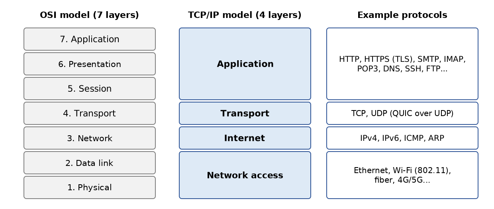

12. Web 编程
先决条件：本章末尾所述的 [Tax] 应用程序版本 8，复用了版本 5（第 6 章）中的 [tax-dao]、[tax-business] 和 [tax-ui] 模块。在构建或打开你的项目之前，必须已通过在 [06-architectures/TaxV5]文件夹中执行 [mvn install]命令，将版本 5 安装到本地 Maven 仓库中（参见第 6 章中关于 [mvn install]的部分）。
12.1. 概述
12.1.1. 互联网协议
这里我们介绍互联网通信协议，也称为 TCP/IP 协议族（Transmission Control Protocol / Internet Protocol，传输控制协议/网际协议），其名称来自其中两个主要协议。在着手开发分布式应用程序之前，读者最好对网络的工作原理——尤其是 TCP/IP 协议——有一个总体的了解。本介绍基于 Novell 的“Lan Workplace for DOS”管理指南（1990 年代初）中的一段文字，保留了其结构和精神，同时做了更新：2026 年的互联网已不再与 1990 年的完全相同。
创建异构计算机网络的总体构想源于美国 DARPA（Defense Advanced Research Projects Agency，国防高级研究计划局）开展的研究。DARPA 开发了称为 TCP/IP 的协议族，使异构的机器能够相互通信。这些协议曾在一个名为 ARPAnet 的网络上进行测试，该网络后来发展成为互联网（ARPAnet 于 1983 年 1 月 1 日采用 TCP/IP）。TCP/IP 协议规定了与网络架构和所用硬件无关的传输和接收格式及规则。
DARPA 设计并由 TCP/IP 协议管理的网络是分组交换网络。这种网络以称为分组（packet）的小块来传输信息。因此，如果一台计算机传输一个大文件，该文件会被分解成小块在网络上发送，并在目的地重新组装。TCP/IP 定义了这些分组的格式，特别包括：
互联网协议记载在称为 RFC（Request for Comments，请求评议）的公开文档中，由 IETF（Internet Engineering Task Force，互联网工程任务组）发布，可在 www.rfc-editor.org上查阅。本章中我们将引用其中的一些文档。
12.1.2. OSI 模型
TCP/IP 协议大体上遵循由 ISO（International Organization for Standardization，国际标准化组织）定义的称为 OSI（Open Systems Interconnection Reference Model，开放系统互连参考模型）的开放网络模型。该模型描述了一种理想的网络，其中机器之间的通信可以用一个七层模型来表示：

每一层接受其下一层提供的服务，并向其上一层提供自己的服务。假设位于不同机器 A 和 B 上的两个应用程序想要通信：它们在应用层进行通信。它们无需了解网络如何工作的所有细节：每个应用程序把想要传输的信息交给它的下一层，即表示层。因此，应用程序只需要知道与表示层交互的规则。信息一旦到达表示层，就按照其他规则传递给会话层，依此类推，直到信息到达物理介质并被物理地传输到目标机器。在那里，它将经历与在发送机器上所经历的相反的过程。
在每一层，负责发送信息的发送方进程会将信息发送给另一台机器上属于同一层的接收方进程。它依照称为层协议的某些规则进行。实际的通信向下穿过机器 A 的各层，经过物理网络，然后向上穿过机器 B 的各层；然而，每一层都认为自己是在与另一台机器上对应的层直接通信。
各层的作用如下：
层 | 作用 |
物理层 | 确保比特在物理介质（铜缆、光缆、无线电波）上的传输。这一层的关键问题包括将信息编码为信号以及传输方式。 |
数据链路层 | 对物理层的物理特性进行抽象。将信息划分为帧，检测（有时还纠正）传输错误，并管理对共享介质的访问。 |
网络层 | 管理在网络上发送的信息所必须经过的路径。这称为路由：确定信息到达其目的地所必须走的路线。 |
传输层 | 实现两个应用程序之间的通信，而前面的各层只允许机器之间通信。该层提供的一项服务是多路复用：传输层使用单一的网络链路（机器到机器）来传输属于多个应用程序的数据。 |
会话层 | 提供使应用程序能够在远程机器上打开并保持工作会话的服务。 |
表示层 | 规范不同机器上数据的表示方式。机器 A 的数据在通过网络发送之前，由机器 A 的表示层按照标准格式进行“格式化”。数据到达目标机器 B 的表示层后——表示层根据其标准格式识别出数据——数据被重新格式化，使机器 B 上的应用程序能够识别。 |
应用层 | 这一层包含通常贴近用户的应用程序，例如电子邮件、Web 或文件传输。 |
12.1.3. TCP/IP 模型
OSI 模型是一个参考模型，从未被原样实现。已成为标准的 TCP/IP 协议族只分为四层：

会话层和表示层在 TCP/IP 中并不单独存在：它们的功能在需要时由应用程序本身或中间协议来承担，例如 TLS（对数据交换进行加密），它插在 TCP 和应用程序之间。
网络接入层
在局域网中，目前占主导地位的技术是用于有线连接的以太网（Ethernet）和用于无线连接的 Wi-Fi（IEEE 802.11 标准）。其他技术，例如令牌环（Token Ring），如今已经消失。
以太网是对一种分组交换局域网技术的称呼，它于 1970 年代初在施乐公司（Xerox）发明，1980 年由施乐、英特尔和数字设备公司（Digital Equipment）标准化，之后由 IEEE 标准化（标准 802.3）。最初的以太网由一根同轴电缆组成，所有机器都连接到这根电缆上（总线拓扑），数据速率为每秒 10 兆比特：

这是一种广播网络：发送机器将包含接收机器地址的信息发送到电缆上；所有连接的机器都会收到它，只有预定的接收者才会保留它。由于多台机器可能同时决定发送，因此必须检测冲突：这就是 CSMA/CD 访问方法（Carrier Sense Multiple Access / Collision Detect，载波侦听多路访问/冲突检测）。每个发送方在发送之前先侦听电缆（CSMA），并在发送期间验证电缆上传输的内容确实是自己所发送的内容；如果不是，就发生了冲突（CD）：双方都停止发送，并在随机延迟之后重试。
现代以太网已有很大发展：设备通过双绞线或光纤连接到交换机，交换机将每个帧转发到接收方的特定端口。连接是全双工的（同时发送和接收）：不再有冲突，CSMA/CD 已经过时。典型的数据速率为每秒 1 到 10 吉比特，在数据中心则要高得多。
没有改变的是 48 位寻址：每块网卡都有一个地址，称为物理地址或 MAC（Media Access Control，介质访问控制）地址，通常写成六个十六进制字节（例如 [00:1A:2B:3C:4D:5E]）。它由制造商编入网卡，但是——与长期以来的说法相反——它可以通过软件修改：现代操作系统甚至在 Wi-Fi 网络上使用随机 MAC 地址，以防止设备在不同网络之间被跟踪。
网际层（网络层）
在这一层，我们可以找到以下协议：
协议 | 作用 |
IP（Internet Protocol，网际协议） | 在两个网络节点之间传送分组，有版本 4（IPv4）或版本 6（IPv6） |
ICMP（Internet Control Message Protocol，互联网控制报文协议） | 便于一台机器上的 IP 协议程序与另一台机器上的 IP 协议程序之间进行通信。因此，它是在 IP 协议内部交换控制报文的协议 |
ARP（Address Resolution Protocol，地址解析协议） | 将机器的 IP 地址映射到该机器的物理地址（在 IPv6 中，这一角色由 NDP 协议，即邻居发现协议 Neighbor Discovery Protocol 承担） |
有时也会提到 RARP（Reverse Address Resolution Protocol，反向地址解析协议），它执行相反的映射。它早已被 DHCP 取代而弃用，我们稍后会讨论 DHCP。
传输层
这一层包含以下协议：
协议 | 作用 |
TCP（Transmission Control Protocol，传输控制协议） | 确保在两个应用程序之间可靠且有序地传递信息 |
UDP（User Datagram Protocol，用户数据报协议） | 在两个应用程序之间提供不可靠的信息传递 |
QUIC（2021 年）协议是 HTTP/3 的基础，它是构建在 UDP 之上的可靠加密传输协议。
应用层
这里有各种协议，我们稍后会详细介绍：
协议 | 作用 |
HTTP、HTTPS（HyperText Transfer Protocol，超文本传输协议） | Web 协议：客户端（浏览器、应用程序）向 Web 服务器请求资源。HTTPS 是使用 TLS 加密的 HTTP |
DNS（Domain Name System，域名系统） | 将主机名转换为 IP 地址 |
SMTP（Simple Mail Transfer Protocol，简单邮件传输协议） | 用于发送电子邮件 |
POP3、IMAP | 用于读取存储在服务器上的电子邮件 |
SSH（Secure Shell，安全外壳） | 用于连接到远程机器并在其上执行命令，使用加密。它取代了功能相同但不加密的 TELNET |
FTP（File Transfer Protocol，文件传输协议）、SFTP | 用于传输文件 |
DHCP（Dynamic Host Configuration Protocol，动态主机配置协议） | 使机器能够自动获取其 IP 地址和网络配置 |
12.1.4. 互联网协议的工作方式
在 TCP/IP 环境中开发的应用程序通常会使用该环境中的多个协议。应用程序与最高层的协议通信。该层把信息传递给它的下一层，依此类推，直至到达物理介质。信息在那里被物理地传送到接收机器，并在接收机器上再次经过相同的各层——这一次方向相反——直到到达作为所发送信息预定接收者的应用程序。下图显示了信息的路径：

我们来看一个例子：一个使用 TCP 向另一台机器发送文件的应用程序。
- 应用程序将一个待传输的字节序列交给传输层；
- 传输层把这个字节序列划分为 TCP 段，并在每个段的开头添加一个头部，其中除其他内容外，还包含源端口号和目标端口号以及一个序列号。这些段被传递给网络层，由 IP 协议管理；
- IP 层创建一个分组，封装收到的 TCP 段。在该分组的头部，它放入源机器和目标机器的 IP 地址。它还确定分组要递送到的机器的物理地址（目的地本身或某个路由器）。整个分组被传递给网络接入层，即把机器连接到物理网络的网卡；
- 在那里，IP 分组又被封装在一个物理帧中，并通过介质发送给其接收者；
- 在目标机器上，网络接入层执行相反的过程：它从物理帧中解封装出 IP 分组，并将其传递给 IP 层；
- IP 层验证该分组是否有效：它计算其头部的校验和，该校验和必须与分组头部中的值一致。如果不一致，该分组就被丢弃；
- 如果分组被认定有效，IP 层就解封装其中包含的 TCP 段，并将其向上传递给传输层；
- TCP 层也会验证该段的校验和。如果正确，它就向源机器发送确认；否则，该段被忽略（并将由源机器重新发送）；
- 利用序列号，TCP 层将各个段重新排列成正确的顺序；
- TCP 层剩下要做的，就是把这些段的数据部分传送给目标应用程序，该应用程序由目标端口号标识。
12.1.5. 互联网上的寻址问题
网络节点可以是计算机、打印机、电话、联网设备——实际上是任何能够使用 TCP/IP 协议进行通信的东西。每个节点都有一个物理地址，其格式取决于网络类型。在以太网或 Wi-Fi 网络中，物理地址使用 6 个字节编码。
节点的互联网地址（IP）是一个逻辑地址：它与所用的硬件和网络无关。在 IPv4 中，它是一个 4 字节的地址，既标识一个网络，又标识该网络上的一个节点。它通常表示为四个数字——四个字节的值——以句点分隔。例如，昂热（Angers）理学院名为“Lagaffe”的机器的地址长期以来是 193.49.144.1，名为“Liny”的机器的地址是 193.49.144.9。由此可以推断，本地网络地址是 193.49.144.0，该网络上最多可以有 254 个节点。
由于 IP 地址与物理网络无关，网络 A 上的机器可以与网络 B 上的机器通信，而无需关心后者所处的网络类型：只需要知道它的 IP 地址即可。每个网络上的 IP 协议负责 IP 地址与物理地址之间的双向转换。
所有公共 IP 地址都必须是唯一的。它们的分配遵循层级结构：IANA（Internet Assigned Numbers Authority，互联网号码分配机构）将地址块分发给五个区域注册机构，其中包括负责欧洲的 RIPE NCC，再由这些机构重新分发给运营商和大型组织。然后这些实体再将地址分配给它们的客户。获得了 193.49.144.0 至 193.49.144.255 地址块的网络的管理员，可以随意分配 193.49.144.1 至 193.49.144.254 的地址。在法国，INRIA 曾长期负责分配地址；这种情况已经很久不存在了。
12.1.5.1. IP 地址类别与 CIDR 表示法
IPv4 地址是一个由 4 个字节组成的序列，记作 I1.I2.I3.I4，它实际上包含两部分信息：
- 网络地址（最高有效位）；
- 该网络内某个节点的地址（最低有效位）。
最初，这两个字段的大小由第一个字节的值决定。IP 地址分为三个主要类别：
类别 | 第一个字节 | 网络 / 节点 | 网络数和节点数 |
A | 1 到 126（最高位为 0） | R1.N1.N2.N3：1 字节网络（7 个有效位），3 字节节点 | 126 个网络，每个网络 2²⁴ - 2 个节点（约 1600 万） |
B | 128 到 191（最高 10 位） | R1.R2.N1.N2：2 字节网络（14 个有效位），2 字节节点 | 2¹⁴ = 16,384 个网络，每个网络 2¹⁶ - 2 = 65,534 个节点 |
C | 192 到 223（最高 110 位） | R1.R2.R3.N1：3 字节网络（21 个有效位），1 字节节点 | 2²¹ 个网络（约 200 万），每个网络 254 个节点 |
由于 Lagaffe 机器的地址是 193.49.144.1，其最高有效字节为 193，二进制为 11000001：该网络是 C 类网络。
事实证明，这种分类过于僵化：一个有 300 台机器的组织不得不使用 B 类网络，浪费了 65,000 多个地址。自 1993 年起（RFC 1518 和 1519），这些类别已被废弃，取而代之的是无类别路由（CIDR，Classless Inter-Domain Routing）。网络部分与主机部分之间的边界可以设置在任意一位上；它通过斜杠后面的网络前缀长度来表示：
- 193.49.144.0/24：前 24 位表示网络，后 8 位表示节点。该网络包含 193.49.144.0 至 193.49.144.255 的地址；
- 10.0.0.0/8：一个拥有 2²⁴ 个地址的网络；
- 192.168.1.0/26：一个由 2⁶ = 64 个地址组成的网络，范围从 192.168.1.0 到 192.168.1.63。
子网掩码的旧式表示法仍在使用，它表达的是同样的含义：/24 前缀对应掩码 255.255.255.0。“A、B、C 类”这些术语仍然常用，但已不再对应任何实际机制。
12.1.5.2. 保留地址、私有地址与 NAT
某些地址有特定用途：
- 主机部分全为 0 的地址指代网络本身：193.49.144.0 是 193.49.144.0/24 网络的地址；
- 主机部分全为 1 的地址是广播地址：193.49.144.255 指代 193.49.144.0/24 网络上的所有主机。因此这两个地址不能分配给节点：一个拥有 256 个地址的 /24 网络只提供 254 个可用地址；
- 地址 127.0.0.0/8（实际上是 127.0.0.1）是环回地址：机器用它们来指代自身，而无需经过网络。名称 [localhost] 与它们相关联；
- 地址块 10.0.0.0/8、172.16.0.0/12 和 192.168.0.0/16（RFC 1918）保留给私有网络：它们可以在公司或家庭内部自由使用，但不会在互联网上被路由；
- 地址块 192.0.2.0/24、198.51.100.0/24 和 203.0.113.0/24（RFC 5737）保留用于文档和示例。
IPv4 地址的数量（2³²，略多于 40 亿）不足以满足所有联网机器的需要。IANA 的中央地址池于 2011 年耗尽，RIPE NCC 的地址池于 2019 年耗尽。通过网络地址转换（NAT，Network Address Translation）绕过了地址短缺问题：家庭中的设备拥有私有地址（例如 192.168.1.x），而将它们连接到互联网的路由器会把它们“转换”为路由器自己唯一的公共地址。长期的解决方案是 IPv6。
12.1.5.3. IPv6 地址
IPv6（1998 年的 RFC 2460，现为 RFC 8200）使用 128 位对地址编码，可提供 2¹²⁸ 个地址——约 3.4 × 10³⁸ 个——因此不必再担心地址短缺。IPv6 地址写成由冒号分隔的八组四位十六进制数字：
| 2001:0db8:0000:0000:8a2e:0000:0370:7334
|
每组中的前导零可以省略，且可以用 [::]替换一段连续的全零组（仅限一次）。因此，上面的地址可写成 [2001:db8::8a2e:0:370:7334]。环回地址相当于 127.0.0.1，为 [::1]。在 URL 中，IPv6 地址要放在方括号中，以免把它的冒号与端口前的冒号混淆：[http://[::1]:8080/]。
IPv6 带来了进一步的简化：分组头部是定长的，默认内置了地址自动配置，NAT 地址转换也不再必要。它的普及速度较慢，但现在互联网流量中有相当大且不断增长的一部分经由 IPv6 传输（例如，Google 公布了通过 IPv6 访问它的用户所占比例），而且法国的主要互联网服务提供商都向其用户提供 IPv6。两个版本并存：大多数机器同时拥有 IPv4 和 IPv6 地址（这称为“双栈”），程序必须能够同时处理这两种地址。
12.1.5.4. 地址转换协议：IP ↔ 物理地址
我们已经看到，当数据从一台机器传输到另一台机器时，在经过 IP 层时会被封装成分组。这些分组具有如下形式：

因此，IP 分组包含源机器和目标机器的 IP 地址。当该分组被传递给负责通过物理网络发送它的那一层时，会为它添加额外的信息，构成最终将在网络上发送的物理帧。例如，以太网上帧的格式如下：

前 8 个字节（前导码）用于同步；在以太网帧最常见的形式中，数据之前的 2 字节字段指示所承载协议的类型（IPv4、IPv6、ARP……），而不是分组的长度。在最终的帧中，有源机器和目标机器的物理地址（在实际的帧中，目标地址位于源地址之前，与图中所示的顺序相反）。这些地址是如何获得的呢？
发送机器知道它想要通信的机器的 IP 地址，通过 ARP 协议（Address Resolution Protocol，地址解析协议）获得该机器的物理地址：
- 它发送一种特殊类型的分组，称为 ARP 分组，其中包含其物理地址正被查找的那台机器的 IP 地址。它还包含自己的 IP 地址以及自己的物理地址；
- 该分组被发送给本地网络上的所有节点（广播）；
- 这些节点识别出该分组的特殊性质。在分组中认出自己 IP 地址的节点，会向发送方回复自己的物理地址。它之所以能这样做，是因为它在分组中找到了发送方的 IP 地址和物理地址；
- 于是发送方收到了它要查找的物理地址。它把该地址存储在缓存中，以便以后需要向同一接收者发送其他分组时使用。
在 IPv6 中，同样的服务由 NDP 协议（Neighbor Discovery Protocol，邻居发现协议）提供，它依赖于 ICMPv6 报文。
问题依然存在：机器如何知道自己的 IP 地址？可以把它写在机器的配置文件中——服务器至今仍是这种做法。但是当管理员需要重新组织网络时，逐台修改所有机器的配置文件既繁琐又容易出错。RARP 协议过去允许机器根据其物理地址向服务器请求其 IP 地址。它已被 DHCP（Dynamic Host Configuration Protocol，动态主机配置协议，RFC 2131）取代：启动时，机器在网络上广播一个请求；一台服务器（例如家用路由器或企业中的专用服务器）为它分配一个有时限的地址（租约），以及其余的配置：网络前缀、路由器地址和 DNS 服务器的地址。这样，管理员只需配置 DHCP 服务器即可。在 IPv6 中，机器还可以根据路由器通告的前缀自行构造地址（SLAAC 自动配置）。
12.1.6. 互联网的网络层，即 IP 层
IP 协议定义了分组必须采用的格式，以及发送或接收时必须如何处理它们。这种特殊类型的分组称为 IP 数据报。我们已经讨论过它：
重要的一点是，除了要传输的数据之外，IP 数据报还包含源机器和目标机器的 IP 地址。这样，目标机器就知道是谁在给它发送消息。
网络帧的长度由其所经过的网络的物理特性决定，与之不同，IP 数据报的长度由软件设定，因此在不同的物理网络上是相同的。我们已经看到，从网络层向下到物理层时，IP 数据报被封装在物理帧中。
物理帧从一个节点传到另一个节点，朝着其目的地前进，而目的地可能与发送机器不在同一个物理网络上。因此，IP 分组可能在连接两个不同类型网络的节点上被先后封装在不同的物理帧中。IP 分组也有可能太大而无法封装在一个物理帧中（以太网帧的有效载荷限制为 1,500 字节）。在 IPv4 中，出现这个问题的节点会把 IP 分组拆分成若干分片，这些分片只会在最终目的地重新组装。在 IPv6 中，路由器不再对分组进行分片：由发送方确定沿途所接受的最大尺寸，并相应地调整其分组的大小。
12.1.6.1. 路由
路由是将 IP 分组导向其目的地的方法。有两种方法：直接路由和间接路由。
直接路由
直接路由是指在同一网络内，将 IP 分组直接从发送方传输到接收方：
- 发送 IP 数据报的机器拥有接收方的 IP 地址；
- 它通过 ARP 协议获得接收方的物理地址，或者如果已经获得过该地址，则从其缓存中获取；
- 它把分组通过网络发送到该物理地址。
间接路由
间接路由是指将 IP 分组传输到位于发送方所属网络之外的另一个网络上的目的地。在这种情况下，源机器和目标机器的 IP 地址的“网络”部分是不同的；源机器通过将目标地址与自己的网络前缀进行比较来检测到这一点。随后它把分组发送给一个称为路由器的特殊节点，该节点将本地网络与其他网络连接起来，其 IP 地址为源机器所知（这称为默认网关，通常由 DHCP 提供）。路由器至少连接两个网络，并在每个网络中都有一个 IP 地址：

在上面的示例中：
- 1 号网络的地址为 193.49.144.0/24，2 号网络的地址为 193.49.145.0/24；
- 在 1 号网络中，路由器的地址为 193.49.144.6，在 2 号网络中，其地址为 193.49.145.3。
路由器的作用是取出它收到的 IP 分组——它包含在来自 1 号网络的物理帧中——并将其放入可以在 2 号网络上传输的物理帧中。如果分组的目标 IP 地址在 2 号网络上，路由器会将分组直接发送给它；否则，它会把分组发送给连接 2 号网络与 3 号网络的另一台路由器，依此类推。互联网路由器不断交换关于它们可以到达的网络的信息（路由协议，例如运营商之间使用的 BGP），以构建它们的路由表。
12.1.6.2. 错误与控制报文
同样位于网络层——因而与 IP 协议处于同一层级——的是 ICMP 协议（Internet Control Message Protocol，互联网控制报文协议）。它用于发送有关网络内部运行情况的报文：节点不可达、分组经过了太多路由器，等等。ICMP 报文被封装在 IP 分组中在网络上发送。各个节点的 IP 层根据它们收到的 ICMP 报文采取相应的措施。因此，应用程序本身永远不会看到这些与网络相关的问题。[ping]命令（发送 ICMP“回显请求”报文并等待“回显应答”报文）和 [traceroute] / [tracert] （显示所经过的路由器）都基于 ICMP。
12.1.7. 传输层：UDP 和 TCP 协议
12.1.7.1. UDP 协议：User Datagram Protocol（用户数据报协议）
UDP 协议允许在两点之间进行不可靠的数据交换；也就是说，既不保证分组成功送达其目的地，也不保证分组到达的顺序。如果应用程序愿意，可以自己处理这些问题——例如，在发送一条消息之后，先等待确认再发送下一条。
到目前为止，在网络层面我们讨论的是诸如 IP 之类的机器地址。然而，在同一台机器上，可以同时存在不同的进程，并且它们都可以相互通信。因此，发送消息时，不仅必须指定目标机器的 IP 地址，还必须指定目标进程的“名称”。这个名称实际上是一个 16 位的数字（从 1 到 65,535），称为端口号。某些数字保留给标准应用：端口 53 用于 DNS，80 用于 HTTP，443 用于 HTTPS，25 用于 SMTP，等等。低于 1024 的端口称为“知名”端口；在 Linux 下，要在其中某个端口上启动服务需要特殊权限。本章的示例使用 27100–27199 和 27200–27299 范围内的端口。
由 UDP 协议处理的分组称为数据报。它们具有如下形式：

这些数据报被封装在 IP 分组中，然后再封装在物理帧中。当速度比可靠性更重要，或者应用程序自己处理丢包时，就使用 UDP：DNS（一问一答）、实时音视频流、网络游戏，以及 HTTP/3 的 QUIC 协议。
12.1.7.2. TCP 协议：Transmission Control Protocol（传输控制协议）
对于安全的通信，UDP 协议是不够的：应用程序开发人员必须自己创建一个协议来验证分组是否被正确传送。TCP 协议避免了这些问题。其特点如下：
- 想要传输数据的进程首先与将接收其即将传输信息的进程建立连接。该连接通过交换三个段（SYN、SYN-ACK、ACK：“三次握手”）建立在发送机器的一个端口与接收机器的一个端口之间。这样就在两个端口之间创建了一条虚电路，它将专门保留给建立该连接的两个进程；
- 源进程传输的所有字节都按其发送的顺序到达目的地，而 UDP 协议无法保证这一点，因为分组可能经由不同的路径；
- 所传输的信息看起来是连续的：它是一个字节流。发送进程按自己的节奏传输信息。这些信息不一定会立即发送：TCP 协议可能会等到积累了足够的数据再发送。信息被放入称为 TCP 段的结构中。该段一旦填满，就被传送给 IP 层，在那里被封装在 IP 分组中。对程序员来说，一个重要的含义是：一次性发送的一“行”可能分成几块到达，而几行也可能一起到达。要由应用程序自己识别其消息的边界（我们将为此使用行结束符）；
- TCP 协议发送的每个段都有编号。接收方的 TCP 协议验证它是否按顺序收到各个段。对于每个正确收到的段，它向发送方发送一个确认；
- 如果发送某个段的 TCP 协议在一定时间之后没有收到确认，它就会重新传输该段，从而保证信息递送服务的质量；
- 在两个通信进程之间建立的虚电路是全双工的：信息可以同时双向传输。因此，目标进程甚至在源进程继续发送信息时也可以发送确认。例如，这使得源端的 TCP 协议可以连续发送多个段而无需等待确认。如果经过一定时间之后，它发现没有收到某个特定的第 n 号段的确认，它将从该处重新开始发送段；
- TCP 还会调节其数据速率，以避免使接收方过载（流量控制）或使网络过载（拥塞控制）。
12.1.8. 应用层
在 UDP 和 TCP 协议之上是各种标准协议：
TELNET 和 SSH
TELNET 允许机器 A 上的用户连接到机器 B（通常称为主机），就像他们拥有一个连接到该机器的终端一样。TELNET 基于 TCP。它的数据交换，包括密码，都以明文传输：它已被 SSH（Secure Shell，安全外壳）取代，后者以加密方式提供相同的服务，还可用于安全文件传输（SFTP、SCP）和创建隧道。[telnet]客户端程序长期以来一直是“手动”与 TCP 服务器通信的便捷工具：我们将看到如何取代它。
FTP（File Transfer Protocol，文件传输协议）
该协议用于在两台远程机器之间交换文件，以及执行诸如创建目录之类的文件操作。它基于 TCP 协议。与 TELNET 一样，它以明文传输密码；它正被 SFTP 和 HTTPS 逐步取代。
TFTP（Trivial File Transfer Protocol，简单文件传输协议）
该协议是 FTP 的简化变体。它基于 UDP 协议。至今仍用于通过网络引导机器。
DNS（Domain Name System，域名系统）
当用户想要与远程机器交换信息时，必须知道该机器的 IP 地址。用名称来指代机器比用其 IP 地址方便得多。这就引出了名称唯一性的问题：有数十亿台相互连接的机器。可以设想由一个集中的权威机构来分配名称，但那会非常繁琐。对名称的控制被分散到各个域中。每个域由一个组织管理，该组织可以完全自由地在其域内选择名称。因此，法国的机器通常属于 [fr]域，由 AFNIC 管理（在 1997 年 AFNIC 成立之前由 INRIA 管理）。为了进一步简化，控制权被进一步下放：在 [fr]域内创建各个域。例如，昂热大学拥有 [univ-angers.fr]域；管理该域的部门可以完全自由地为大学网络上的计算机命名并创建子域。
机器的完整名称（FQDN，Fully Qualified Domain Name，完全限定域名）按从最具体到最一般的顺序，指明它所属的域的层级：[www.univ-angers.fr]。在一个域内，通常可以使用相对名称，由系统自动补全。
因此，应用程序可以通过名称来指代机器。但最终，仍然需要获得该机器的 IP 地址。假设你想从机器 A 与机器 B 通信：
- 机器 A 首先检查本地映射文件（Linux 和 macOS 上的 [/etc/hosts] ，Windows 上的 [C:\Windows\System32\drivers\etc\hosts] ），然后检查其缓存；
- 否则，它查询 DNS 服务器，该服务器的地址列在其配置中（通常由 DHCP 提供）。它发送一个包含所查找机器名称的 DNS 请求。如果被查询的服务器知道答案或已将其缓存，就向机器 A 返回相应的 IP 地址。否则，它会依次查询——从根服务器开始——负责 [fr]域，然后是 [univ-angers.fr]域的服务器，依此类推，直到获得答案，然后该答案再一路回传给机器 A。
DNS 域将各种类型的记录与名称关联起来：A（IPv4 地址）、AAAA（IPv6 地址）、CNAME（指向另一个名称的别名）、MX（该域的邮件服务器），等等。
HTTP 和 HTTPS（HyperText Transfer Protocol，超文本传输协议）
这是 Web 协议，也是当今使用最广泛的协议：不仅被浏览器使用，也被交换数据的应用程序使用（下一章将讨论的 Web 服务）。我们将详细研究它。HTTPS 是通过 TLS（Transport Layer Security，传输层安全）加密的连接传输的 HTTP；这现在是 Web 的标准形式。
SMTP、POP3 和 IMAP
SMTP 用于发送电子邮件，而 POP3 和 IMAP 用于读取存储在服务器上的电子邮件。我们也将讨论它们。
XDR、RPC、NFS
最后，我们来提一下由创造了 Java 的公司 Sun Microsystems 定义的三个协议：XDR（eXternal Data Representation，外部数据表示），它规定了一种与机器无关的标准数据表示；RPC（Remote Procedure Call，远程过程调用），一种基于 XDR 的远程过程调用协议；NFS（Network File System，网络文件系统），它允许一台机器“看到”另一台机器的文件系统，并基于 RPC。NFS 在 Unix 世界中仍在使用。远程过程调用的概念被许多后继者所采用；如今这些后继者包括 REST Web 服务（基于 HTTP）和 gRPC（基于 HTTP/2）。
12.1.9. 结论
在这篇导论中，我们介绍了互联网协议的一些主要特性。若要更深入地探索这一领域，读者可以参阅 Douglas Comer 的开创性著作 *Internetworking with TCP/IP, Volume 1 ”（Pearson，第 6 版）——其早期版本已被译成法语——以及本章引用的 RFC。关于 HTTP，位于 developer.mozilla.org/en-US/docs/Web/HTTP的 Mozilla 文档是一份极好的入门资料。
12.2. 用于 IP 地址管理的 Java 类
互联网上的机器由 IP 地址标识，IP 地址有两种形式：
- IPv4：以 32 位编码，表示为形如 "I1.I2.I3.I4" 的字符串，其中 In 是 0 到 255 之间的数字；
- IPv6：以 128 位编码，表示为由冒号分隔的八组十六进制数字构成的字符串，例如 "2001:db8::8a2e:370:7334"。如今我们已不能再忽视这些地址：我们的程序将接受它们。
机器也可以通过名称来标识。这个名称不是必需的，因为应用程序最终总是使用机器的 IP 地址。名称是为了方便用户：向浏览器输入 URL [https://dev.java] 比输入由该站点某个 IP 地址构成的 URL 更容易，顺便说一下，该站点的 IP 地址会因发出请求的位置不同而变化。
一台机器可以有多个 IP 地址：一个环回地址、其所连接的每个网络各一个地址，以及 IPv4 和 IPv6 地址。
在 Java 中，IP 地址可以用两种方式表示：
- 表示为字符串，例如 "I1.I2.I3.I4" 或 "2001:db8::1"；
- 表示为 [InetAddress] 类型的对象（包 [java.net]，由于它属于 [java.base]模块，因此会自动导入到紧凑源文件中）。
InetAddress 类
[InetAddress]类没有公共构造函数：它的实例是通过静态构造方法创建的。它有两个派生类 [Inet4Address] 和 [Inet6Address]，分别对应 IP 的每个版本。它的方法包括：
方法 | 作用 |
static InetAddress ofLiteral(String string) | （Java 22）将以数字书写的 IPv4 或 IPv6 地址转换为 [InetAddress]对象，绝不查询 DNS；如果字符串不是 IP 地址，则抛出 [IllegalArgumentException] 。[Inet4Address.ofLiteral] 和 [Inet6Address.ofLiteral] 只接受两个版本中的一种 |
static InetAddress getByName(String nameOrAddress) | 返回由名称或 IP 地址标识的机器的地址。如果字符串不是 IP 地址，则在 DNS 中查找该名称；如果找不到该机器，则抛出 [UnknownHostException] |
static InetAddress[] getAllByName(String nameOrAddress) | 同上，但返回该机器的所有 IP 地址 |
static InetAddress getLocalHost() | 运行程序的机器的地址及其名称 |
static InetAddress getLoopbackAddress() | 环回地址（127.0.0.1 或 ::1）。与该地址关联的服务只接受与其位于同一台机器上的客户端 |
byte[] getAddress() | 返回地址的字节（IPv4 中为 4 个，IPv6 中为 16 个） |
String getHostAddress() | 以文本形式返回地址 |
String getHostName(), String getCanonicalHostName() | 机器名称；如果对象是根据 IP 地址创建的，则该名称通过在 DNS 中的“反向”查找获得（如果查找失败，则返回地址本身） |
boolean isLoopbackAddress(), isSiteLocalAddress(), isAnyLocalAddress()… | 如果地址是环回地址、私有地址（10.x.y.z、172.16.x.y 至 172.31.x.y、192.168.x.y）、“通配”地址 0.0.0.0 或 :: 等，则返回 [true] …… |
另有两个类对 [InetAddress]作了补充：
- [InetSocketAddress] 表示一个连接点：一个 IP 地址和一个端口号。它的方法 [getAddress] 和 [getPort] 提供这两项信息。构造函数 [InetSocketAddress(int port)] 将端口与通配地址 0.0.0.0 关联，后者指代该机器上的所有地址；
- [NetworkInterface] 表示机器上的一个网络接口（以太网卡、Wi-Fi 网卡、环回接口等）及其 IP 地址。
然而，Java 没有表示 CIDR 表示法网络（例如 193.49.144.0/24）的类：我们将自己编写。程序 [Internet01.java] 演示了这些类：
| // InetAddress 和 InetSocketAddress 类；CIDR 表示法的网络
void main() {
// IPv4 和 IPv6 地址，正确的或不正确的
List<String> addresses = List.of("193.49.144.1", "127.0.0.1", "192.168.1", "::1",
"2001:db8::8a2e:370:7334", "256.1.1.1", "machine");
for (String string : addresses) {
try {
// ofLiteral（Java 22）：解析以数字书写的 IP 地址，不查询 DNS
InetAddress address = InetAddress.ofLiteral(string);
String family = address instanceof Inet4Address ? "IPv4" : "IPv6";
byte[] bytes = address.getAddress();
String hex = HexFormat.of().withUpperCase().formatHex(bytes);
IO.println("[%s] -> %s (%s, %d bytes: %s, loopback: %b, private: %b)".formatted(string,
address.getHostAddress(), family, bytes.length, hex,
address.isLoopbackAddress(), address.isSiteLocalAddress()));
} catch (IllegalArgumentException e) {
IO.println("[" + string + "] is not an IP address");
}
}
// getByName 接受 IP 地址或机器名：机器名会在 DNS 中查找
try {
InetAddress.getByName("256.1.1.1");
} catch (UnknownHostException e) {
IO.println("getByName(\"256.1.1.1\") : " + e.getClass().getSimpleName() + " : " + e.getMessage());
}
// 回环地址和通配地址（本机的所有地址）
IO.println("Loopback=" + InetAddress.getLoopbackAddress());
IO.println("Wildcard=" + new InetSocketAddress(27100).getAddress());
// 连接点 = IP 地址 + 端口
var point = new InetSocketAddress(InetAddress.getLoopbackAddress(), 27100);
IO.println("InetSocketAddress: %s (address=%s, port=%d)".formatted(point,
point.getAddress().getHostAddress(), point.getPort()));
var point6 = new InetSocketAddress(InetAddress.ofLiteral("::1"), 27100);
IO.println("InetSocketAddress IPv6: %s (address=%s, port=%d)".formatted(point6,
point6.getAddress().getHostAddress(), point6.getPort()));
// CIDR 表示法的网络：网络地址 / 前缀长度
Network network = Network.parse("193.49.144.0/24");
for (String string : List.of("193.49.144.1", "193.49.145.3")) {
boolean belongs = network.contains(InetAddress.ofLiteral(string));
IO.println(string + " belongs to " + network + ": " + belongs);
}
}
// 一个 IP 网络：网络地址和其前缀的长度（Java 没有对应的类）
record Network(InetAddress address, int prefix) {
// 解析形如 address/prefix 的字符串
static Network parse(String cidr) {
String[] fields = cidr.split("/");
return new Network(InetAddress.ofLiteral(fields[0]), Integer.parseInt(fields[1]));
}
// 如果地址的前 [prefix] 位与网络的相同，则该地址属于该网络
boolean contains(InetAddress machine) {
byte[] r = address.getAddress();
byte[] m = machine.getAddress();
if (r.length != m.length) {
return false;
}
for (int bit = 0; bit < prefix; bit++) {
// 地址的第 [bit] 位，从第一个字节的最高有效位开始
int mask = 0x80 >> (bit % 8);
if ((r[bit / 8] & mask) != (m[bit / 8] & mask)) {
return false;
}
}
return true;
}
@Override
public String toString() {
return address.getHostAddress() + "/" + prefix;
}
}
|
结果：
| > java Internet01.java
[193.49.144.1] -> 193.49.144.1 (IPv4, 4 bytes: C1319001, loopback: false, private: false)
[127.0.0.1] -> 127.0.0.1 (IPv4, 4 bytes: 7F000001, loopback: true, private: false)
[192.168.1] -> 192.168.0.1 (IPv4, 4 bytes: C0A80001, loopback: false, private: true)
[::1] -> 0:0:0:0:0:0:0:1 (IPv6, 16 bytes: 00000000000000000000000000000001, loopback: true, private: false)
[2001:db8::8a2e:370:7334] -> 2001:db8:0:0:0:8a2e:370:7334 (IPv6, 16 bytes: 20010DB80000000000008A2E03707334, loopback: false, private: false)
[256.1.1.1] is not an IP address
[machine] is not an IP address
getByName("256.1.1.1") : UnknownHostException : 256.1.1.1: Name or service not known
Loopback=localhost/127.0.0.1
Wildcard=0.0.0.0/0.0.0.0
InetSocketAddress: localhost/127.0.0.1:27100 (address=127.0.0.1, port=27100)
InetSocketAddress IPv6: /[0:0:0:0:0:0:0:1]:27100 (address=0:0:0:0:0:0:0:1, port=27100)
193.49.144.1 belongs to 193.49.144.0/24: true
193.49.145.3 belongs to 193.49.144.0/24: false
|
说明：
- 第 5–6 行：要解析的字符串；
- 第 10 行：如果字符串是 IPv4 或 IPv6 地址，[InetAddress.ofLiteral] （Java 22）就将其转换为 [InetAddress] 对象，否则抛出 [IllegalArgumentException] （第 17 行）；
- 第 11 行：[instanceof]运算符用于区分 IP 的两个版本：返回的对象要么是 [Inet4Address] 的实例，要么是 [Inet6Address]的实例；
- 第 12–13 行：[getAddress] 返回地址的字节，由 [HexFormat] 类（Java 17）以十六进制显示。我们可以看到（结果的第 2 行），193.49.144.1 由 C1、31、90、01 这四个字节组成，并且（第 5 行）::1 由 15 个零字节后接一个值为 1 的字节组成；
- 第 16 行：[isLoopbackAddress] 和 [isSiteLocalAddress] 可识别环回地址和 RFC 1918 的私有地址；
- 结果的第 4 行：一个意外。字符串 "192.168.1" 被接受，并被转换为 192.168.0.1。[ofLiteral] 确实接受 IPv4 地址的历史缩写形式（此时最后一个数字占据所有剩余的字节）。因此，要验证某个输入是完整的 IPv4 地址，还必须检查它是否包含四个数字；
- 结果的第 5–6 行：IPv6 地址由 [getHostAddress] 以完整形式重新显示，没有缩写 [::] 也没有前导零：[0:0:0:0:0:0:0:1] 对应 [::1]。前缀 2001:db8::/32 与 IPv4 中的 192.0.2.0/24 一样，保留用于文档；
- 第 23–27 行：较旧的 [getByName] 方法既接受 IP 地址，也接受主机名。由于字符串“256.1.1.1”不是有效的 IP 地址（256 无法放入单个字节），[getByName] 会把它解释为机器名并查询 DNS，而 DNS 不认识它：结果是抛出 [UnknownHostException] （结果的第 9 行）。Java 22 增加了 [ofLiteral] 以避免这种意外的 DNS 查询。这里的异常消息来自 Linux 系统库；
- 第 30 行：环回地址。当 [InetAddress]对象由 [toString]显示时，其形式为 [name/address]，如果名称未知则名称为空；
- 第 31 行：通配地址 0.0.0.0，这里通过不带地址的 [InetSocketAddress] 获得；
- 第 34–39 行：将地址与端口关联起来的 [InetSocketAddress]对象。它们以 [name/address:port]的形式显示（结果的第 12–13 行）；在 IPv6 中，地址用方括号括起来；
- 第 50–79 行：一个表示 CIDR 表示法网络的记录（[record]，第 4 章）。在紧凑源文件中，它可以紧接在 [main]方法之后声明；
- 第 53–56 行：静态方法 [parse] 解析形如 [address/prefix]的字符串；
- 第 59–73 行：如果一个地址的前 [prefix] 位与网络地址的前缀位相同，则该地址属于该网络。第 [bit] 位位于第 [bit / 8]个字节中；掩码 [0x80 >> (bit % 8)] 在该字节内将其分离出来。结果的第 14–15 行表明 193.49.144.1 属于 193.49.144.0/24 网络，而 193.49.145.3（我们图中路由器在其第二个网络上的地址）不属于该网络。这正是机器在选择直接路由还是间接路由时所做的测试。
DNS 与网络接口
IP 标识符与机器名称之间的映射由 DNS 处理。可以使用 [getByName] 和 [getAllByName] 这两个 [InetAddress]的静态方法来查询它，这些方法前面已经介绍过；反过来，[getHostName] 和 [getCanonicalHostName] 执行反向查找。这些方法是阻塞的：一次 DNS 请求可能需要几十毫秒，如果服务器没有响应甚至可能需要几秒钟，在此期间调用线程被阻塞。Java 没有提供这些方法的异步版本；自 Java 21 起，解决办法就是在虚拟线程中调用它们（第 8 章），这样在等待期间几乎不产生开销。自 Java 18 起，你还可以通过提供自己的 *[InetAddress] 接口实现，即 *[InetAddressResolver] 接口的实现，来覆盖 InetAddress 所使用的名称解析机制，这对测试很有用。
[NetworkInterface]类及其静态方法 [networkInterfaces]返回机器网络接口的流（[Stream]）；对于每个接口，[getName] 返回其名称，[isUp] 指示其是否处于活动状态，[inetAddresses] 返回其地址（IP）的流。
程序 [Internet02.java] 显示其所运行机器的名称和网络接口，然后以交互方式提供机器名称与 IP 地址之间的映射：
| // 显示本机的名称和网络接口
// 然后交互式地提供网络中各机器的信息
// 机器由名称或 IP 地址标识
void main() throws IOException {
// 本机
InetAddress local = InetAddress.getLocalHost();
IO.println("Local machine = " + local.getHostName() + " (" + local.getHostAddress() + ")");
// 其活动的网络接口及其地址
for (NetworkInterface card : NetworkInterface.networkInterfaces().filter(this::active).toList()) {
String ips = card.inetAddresses().map(InetAddress::getHostAddress).collect(Collectors.joining(", "));
IO.println("Interface " + card.getName() + " : " + ips);
}
// 交互式问答
while (true) {
// 输入要查找的机器的名称或 IP 地址
String input = IO.readln("Machine looked for (nothing to stop): ");
String machine = input == null ? "" : input.strip().toLowerCase();
// 结束了吗？
if (machine.isEmpty()) {
break;
}
try {
// 查询 DNS：该机器的所有 IP 地址
InetAddress[] addresses = InetAddress.getAllByName(machine);
// 机器的名称：如果给的是 IP 地址，则进行反向查询
IO.println("Machine: " + addresses[0].getHostName());
// 其 IP 地址
String ips = Arrays.stream(addresses).map(InetAddress::getHostAddress)
.collect(Collectors.joining(", "));
IO.println("IP addresses: " + ips);
} catch (UnknownHostException e) {
// 未找到该机器
IO.println("Unable to find the machine [" + machine + "] : " + e.getMessage());
}
}
}
// 网络接口是否处于活动状态？（isUp 可能抛出 SocketException）
boolean active(NetworkInterface card) {
try {
return card.isUp();
} catch (SocketException e) {
return false;
}
}
|
结果：
| > java Internet02.java
Local machine = vm (127.0.0.1)
Interface eth0 : 192.0.2.2
Interface lo : 127.0.0.1
Machine looked for (nothing to stop): localhost
Machine: localhost
IP addresses: 127.0.0.1
Machine looked for (nothing to stop): vm
Machine: vm
IP addresses: 127.0.0.1
Machine looked for (nothing to stop): 127.0.0.1
Machine: localhost
IP addresses: 127.0.0.1
Machine looked for (nothing to stop): ::1
Machine: 0:0:0:0:0:0:0:1
IP addresses: 0:0:0:0:0:0:0:1
Machine looked for (nothing to stop): xx
Unable to find the machine [xx] : xx: Name or service not known
Machine looked for (nothing to stop):
|
说明：
- 第 7–8 行：本地机器的名称和地址。我们的测试机器是一台名为 [vm]的 Linux 虚拟机；对读者而言，这当然会是他们自己计算机的名称；
- 第 10–13 行：处于活动状态的网络接口及其地址。[filter(this::active)]过滤器使用对当前对象的 [active]方法的引用（第 7 章）；你不能在方法引用中直接写 [isUp]，因为它会抛出受检异常（[SocketException]），而函数式接口 [Predicate] 不允许这样：方法 [active] （第 41–47 行）会捕获它；
- 第 18 行：[IO.readln] （Java 25）显示提示并从键盘读取一行；如果标准输入已关闭，则返回 [null] ；
- 第 26 行：DNS 查询。如果名称（或地址）未知，则抛出 [UnknownHostException] （第 33 行）；
- 第 28 行：机器名称。如果提供的是 IP 地址，[getHostName] 会执行反向查找；
- 第 30–31 行：机器的各个地址由 Stream API 合并为一个字符串。
这些结果值得说明几点。它们取决于机器的配置：不要指望在你自己的系统上得到完全相同的结果。
- 第 2–4 行：测试机器有两个处于活动状态的接口：连接到网络的 [eth0]，以及环回接口 [lo]。文件 [/etc/hosts]将机器名称与地址 127.0.0.1 关联起来；
- 第 5–7 行：名称 [localhost] 对应环回地址 127.0.0.1。在启用了 IPv6 的机器上，还会返回 ::1；
- 第 12 行：对于 IP 地址，[getHostName] 执行了反向查找，并返回与该地址关联的名称；
- 第 15 行：对 ::1 的反向查找失败，因为我们测试机器上的 [/etc/hosts]文件没有将任何名称与该地址关联；[getHostName] 返回了地址本身。在 Windows 上，则会返回机器名称；
- 第 18 行：名称 [xx] 未知。异常消息来自 Linux 系统库；在 Windows 上会有所不同。
在连接到互联网的机器上，你还可以查找公共名称，例如 [dev.java]。这会返回随请求的位置和时间而变化的地址。我们不复现这个结果，因为我们的测试机器没有互联网访问。
12.3. Web 编程基础
12.3.1. 概述
考虑两台远程机器 A 和 B 之间的通信：

当机器 A 上的应用程序 AppA 想要通过互联网与机器 B 上的应用程序 AppB 通信时，它必须知道几件事：
- 机器 B 的 IP 地址或名称；
- AppB 应用程序使用的端口号。这是因为机器 B 可以托管许多通过互联网运行的应用程序。当它从网络接收到信息时，必须知道该信息是发给哪个应用程序的。机器 B 上的应用程序通过称为通信端口的接口访问网络。目标端口号包含在机器 B 收到的段中，以便将其递送给正确的应用程序；
- 机器 B 所理解的通信协议。在我们的研究中，我们将只使用 TCP/IP 协议；
- AppB 应用程序所支持的通信协议。事实上，机器 A 和 B 将相互“通信”。它们所交换的内容将被封装在 TCP/IP 协议之中。然而，当链条末端的应用程序 AppB 收到应用程序 AppA 发送的信息时，它必须能够解释这些信息。这类似于 A 和 B 两个人通过电话交谈的情形：他们的对话通过电话传送，但如果 A 说法语而 B 听不懂这种语言，A 和 B 就无法进行有意义的交谈。因此，这两个相互通信的应用程序必须就它们将使用的通信类型达成一致。例如，与 Web 服务器的通信不同于与邮件服务器的通信：这两种服务不接受相同的命令。它们有不同的通信协议。
12.3.2. TCP 协议的特点
这里我们只关注使用 TCP 传输协议的网络通信。让我们回顾一下对程序员而言其主要特点：
- 首先在客户端机器上的一个端口与服务器机器上的一个端口之间建立连接。它由四项信息标识：客户端的 IP 地址和端口，以及服务器的 IP 地址和端口；
- 该连接承载两个字节流，每个方向一个（全双工）。字节按其传输的顺序到达，不丢失也不重复；
- TCP 不识别消息的概念：由应用程序的通信协议来界定请求和响应（通过换行、指定长度、关闭连接等方式）；
- 双方中的一方关闭连接；另一方在读到读取流的末尾时检测到这一点。
12.3.3. 客户端-服务器关系
互联网上的通信通常是不对称的：机器 A 发起连接，向机器 B 请求服务。它指明想要与机器 B 的 SB1 服务建立连接。机器 B 接受或拒绝该请求。如果接受，机器 A 就可以向服务 SB1 发送其请求。这些请求必须符合服务 SB1 所理解的通信协议。这样，在称为客户端机器的机器 A 与称为服务器机器的机器 B 之间就建立了请求-响应对话。双方中的一方将关闭连接。
12.3.4. 客户端架构
请求服务器应用程序服务的网络程序，其架构如下：
| open the connection with the service SB1 of machine B
if successful then
while it is not finished
prepare a request
send it to machine B
wait for and retrieve the response
process it
end while
end if
close the connection
|
12.3.5. 服务器架构
提供服务的程序，其架构如下：
| open the service on the local machine
while the service is open
listen for connection requests on a so-called listening port
when there is a request, accept it and have the resulting connection
(service connection) handled by another thread
end while
|
服务器程序对待客户端的初始连接请求与其后的服务请求方式不同。监听程序本身不提供服务：如果它这样做，那么在服务进行期间它就不再监听连接请求，其他客户端就得不到服务。因此它的做法不同：一旦在监听端口上收到连接请求并接受之后，服务器就把通过刚刚建立的服务连接提供客户端所请求的服务这一任务委托给另一个线程。这样就可以同时为多个客户端服务：

有时有人声称，在服务器端，服务连接使用另一个随机选择的端口。这是不正确的：所有服务连接都使用服务器的监听端口；它们之间通过客户端的地址和端口来区分，而这些是不同的。我们将在回显服务器的输出中看到这一点。
服务线程的结构如下：
| while the service has not been fully provided
wait for a request on the service connection
when there is one, build the response
send the response over the service connection
end while
close the service connection
|
12.4. 探索互联网通信协议
12.4.1. 引言
当客户端连接到服务器时，二者之间就建立起一段对话。这段对话的性质就构成了所谓服务器的通信协议。最常见的互联网协议包括：
- HTTP：HyperText Transfer Protocol，与 Web 服务器（HTTP 服务器）通信的协议；
- SMTP：Simple Mail Transfer Protocol，与电子邮件发送服务器（SMTP 服务器）通信的协议；
- POP：Post Office Protocol，与电子邮件存储服务器（POP 服务器）通信的协议。它用于取回收到的电子邮件，而不用于发送。IMAP 的用途与之相同；
- FTP：File Transfer Protocol，与文件存储服务器（FTP 服务器）通信的协议。
这些协议在其历史版本中的特点是基于文本：客户端和服务器交换以 \r\n（回车、换行）这两个字符结尾的文本行。如果你有一个能够：
- 与 TCP 服务器建立连接；
- 将服务器发送的文本行显示在控制台上；
- 将用户在键盘上键入的文本行发送给服务器的客户端，
那么只要你知道该协议的规则，就可以与使用基于文本的协议的 TCP 服务器通信。
程序 [telnet]过去在 Unix 和 Windows 机器上都可用，它就是这样的客户端之一；PuTTY 工具在配置为原始连接模式时则是另一个。[telnet]客户端在 Windows 上已不再默认安装，而且大多数公共服务器也不再接受未加密的通信。我们将采用不同的做法：
- 对于 HTTP，我们将使用 [curl]工具，它在 Windows 10 和 11、macOS 和 Linux 上默认可用，可显示交换的详细信息，随后使用本章稍后将编写的通用 TCP 客户端。在 Windows 上，PowerShell 和 [curl] 是命令 [Invoke-WebRequest]的别名：你必须键入 [curl.exe]；
- 由于我们无法访问真实的服务器，我们将查询一个由我们自己编写、运行在本地机器上的小型 Web 服务器；
- 对于 SMTP、POP 和 FTP，我们将给出符合定义这些协议的 RFC 的示例对话。
12.4.2. 测试用 Web 服务器
我们的测试 Web 服务器使用 JDK 在 [jdk.httpserver]模块（[com.sun.net.httpserver]包）中提供的小型 HTTP 服务器。尽管包名如此，它是自 Java 6 起就可用的公共且文档完备的 API；它足以在单个文件中编写测试服务器，无需任何库。真正的 Web 服务通常使用像 Tomcat 这样的完整服务器，我们将在下一章通过 Spring Boot 来探讨。你现在无需详细理解这个程序——只要知道它返回什么就够了。[Internet03.java]程序如下：
| import com.sun.net.httpserver.HttpExchange;
import com.sun.net.httpserver.HttpServer;
import static java.nio.charset.StandardCharsets.UTF_8;
// 一个小型本地 Web 服务器，将作为我们的 HTTP 客户端的目标
// 它使用 JDK 提供的 HTTP 服务器（jdk.httpserver 模块）
// 调用：java Internet03.java [port] （默认端口 27110）；用 Ctrl-C 停止
// 主页：一个 HTML 文档
final String HOME = """
<!DOCTYPE html>
<html lang="en">
<head><meta charset="utf-8"><title>Test server</title></head>
<body><h1>Welcome to the test server of the Java course</h1></body>
</html>
""";
int port;
void main(String[] args) throws IOException {
port = args.length == 1 ? Integer.parseInt(args[0]) : 27110;
// 服务器监听回环地址：只有本机自己可以访问
HttpServer server = HttpServer.create(new InetSocketAddress(InetAddress.getLoopbackAddress(), port), 0);
// 所有 URL 都由 [process] 方法处理
server.createContext("/", this::process);
server.start();
IO.println("Web server started on http://localhost:" + port);
}
// 处理请求：根据 URL 选择响应，然后输出控制台跟踪
void process(HttpExchange exchange) throws IOException {
try (exchange) {
String method = exchange.getRequestMethod();
String path = exchange.getRequestURI().getPath();
if (!method.equals("GET") && !method.equals("HEAD")) {
// 这些 URL 只接受 GET 和 HEAD 方法
exchange.sendResponseHeaders(405, -1);
} else {
switch (path) {
// 主页，带有其大小
case "/" -> send(exchange, HOME, "text/html; charset=utf-8", true);
// 由 URL 的参数构建的文本文档，分块发送
case "/hello" -> send(exchange, "Hello " + parameter(exchange, "name", "unknown") + "!",
"text/plain; charset=utf-8", false);
// 临时重定向（302）到相对地址
case "/old" -> redirect(exchange, 302, "/hello?name=visitor");
// 永久重定向（301）到绝对地址
case "/moved" -> redirect(exchange, 301, "http://localhost:" + port + "/");
// 循环指向自身的重定向
case "/loop" -> redirect(exchange, 302, "/loop");
// 任何其他 URL：404 Not Found，不带文档（-1）
default -> exchange.sendResponseHeaders(404, -1);
}
}
// 控制台跟踪：请求及其响应的状态码
IO.println("%s %s %s -> %d".formatted(method, exchange.getRequestURI(), exchange.getProtocol(),
exchange.getResponseCode()));
}
}
// 发送文本文档：带其大小（Content-length）或分块发送（chunked）
void send(HttpExchange exchange, String text, String type, boolean withSize) throws IOException {
byte[] bytes = text.getBytes(UTF_8);
exchange.getResponseHeaders().set("Content-Type", type);
if (exchange.getRequestMethod().equals("HEAD")) {
// HEAD：只有头部；给出文档本应有的大小
exchange.getResponseHeaders().set("Content-Length", String.valueOf(bytes.length));
exchange.sendResponseHeaders(200, -1);
return;
}
// 大小为 0：文档分块发送，事先不知道大小
exchange.sendResponseHeaders(200, withSize ? bytes.length : 0);
exchange.getResponseBody().write(bytes);
}
// 重定向：代码 301 或 302 以及 Location 头，不带文档
void redirect(HttpExchange exchange, int code, String address) throws IOException {
exchange.getResponseHeaders().set("Location", address);
exchange.sendResponseHeaders(code, -1);
}
// URL 参数（?name=value&...）的值，已解码
String parameter(HttpExchange exchange, String name, String defaultValue) {
String query = exchange.getRequestURI().getRawQuery();
if (query == null) {
return defaultValue;
}
for (String pair : query.split("&")) {
String[] fields = pair.split("=", 2);
if (fields[0].equals(name) && fields.length == 2) {
return URLDecoder.decode(fields[1], UTF_8);
}
}
return defaultValue;
}
|
说明：
- 第 1–2 行：模块 [jdk.httpserver] 不属于自动导入到紧凑源文件中的模块 [java.base]；必须导入它的类。第 4 行是静态导入：它允许你写 [UTF_8] 而不是 [StandardCharsets.UTF_8]；
- 第 11–17 行：主页，一个用 [""" ... """]文本块（Java 15）编写的小型 HTML 文档，这样就无需转义引号；
- 第 22 行：监听端口，默认为 27110；
- 第 24 行：服务器监听环回地址 127.0.0.1：只能从机器本身访问。[create] 的第二个参数是连接队列的大小（0：系统默认值）；
- 第 26 行：所有以 [/]开头的 URL——因此是所有 URL——都分配给 [process]方法。[createContext] 的第二个参数是一个 [HttpHandler]，这是一个函数式接口，其唯一的方法 [handle(HttpExchange)]，接收当前的交换：客户端的请求和待构造的响应；
- 第 27 行：服务器在它自己的线程中开始运行；[main]方法结束了，但程序会继续运行，直到用 Ctrl-C 停止；
- 第 33 行：发送响应之后必须关闭 [HttpExchange] ：带资源的 [try] 语句负责处理这一点；
- 第 36–38 行：只接受 [GET] 和 [HEAD] 方法；其他方法会收到 405 响应（不允许使用该方法）；
- 第 42 行：URL [/] 返回主页；
- 第 44 行：URL [/hello?name=xx] 返回文本 [Hello xx!]；
- 第 47 行：URL [/old] 导致临时重定向（状态码 302）到相对地址 [/hello?name=visitor]；
- 第 49 行：URL [/moved] 导致永久重定向（状态码 301）到绝对地址 [http://localhost:27110/]；
- 第 51 行：URL [/loop] 重定向到它自己：盲目跟随重定向的客户端将永远不会停止；
- 第 53 行：任何其他 URL 请求都会收到 404 响应（页面未找到）。[sendResponseHeaders(code, size)]方法发送状态行和头部；size 为 -1 表示后面没有文档；
- 第 57–58 行：每个已处理的请求都会连同响应状态码一起显示在控制台上；
- 第 63–75 行：发送文本文档。响应头通过 [getResponseHeaders().set] 设置（第 65 行），然后 [sendResponseHeaders] 将它们连同文档大小一起发送；接着通过 [getResponseBody()] 将文档写入流中（第 74 行）。大小为 0（第 73 行）表示“大小未知”：此时文档以分块方式发送，我们稍后会看到。对于 [HEAD]请求，不发送文档，但会指明文档本应有的大小（第 66–71 行）；
- 第 78–81 行：重定向，由一个状态码和一个提供新地址的 [Location]头组成；
- 第 84–96 行：URL 中某个参数的值。[getRawQuery] 返回 URL 中 [?]之后的部分，仍处于编码状态；[URLDecoder.decode] 对每个值解码（我们稍后会看到这些值为什么要编码）。
服务器在第一个命令窗口中启动。它显示：
| > java Internet03.java
Web server started on http://localhost:27110
GET / HTTP/1.1 -> 200
GET /unknown HTTP/1.1 -> 404
|
第 3–4 行是在下一段所述的测试期间出现的。按 Ctrl-C 可以停止服务器。
12.4.3. HTTP 协议（HyperText Transfer Protocol）
服务器运行期间，我们在第二个命令窗口中使用工具 [curl]请求站点 [http://localhost:27110] 的根 [/]。它的 [-v] （verbose，详细）选项显示整个 HTTP 对话；[-s] （silent，静默）选项则不显示传输进度：
| > curl -sv http://localhost:27110/
* Host localhost:27110 was resolved.
* IPv6: ::1
* IPv4: 127.0.0.1
* Trying 127.0.0.1:27110...
* Connected to localhost (127.0.0.1) port 27110
> GET / HTTP/1.1
> Host: localhost:27110
> User-Agent: curl/8.5.0
> Accept: */*
>
< HTTP/1.1 200 OK
< Date: Sat, 03 Oct 2026 17:40:04 GMT
< Content-type: text/html; charset=utf-8
< Content-length: 171
<
{ [171 bytes data]
* Connection #0 to host localhost left intact
<!DOCTYPE html>
<html lang="en">
<head><meta charset="utf-8"><title>Test server</title></head>
<body><h1>Welcome to the test server of the Java course</h1></body>
</html>
|
说明：
- 以 [*] 开头的行包含来自 [curl]的信息；以 [>] 开头的行是发送给服务器的；以 [<] 开头的行是从服务器接收的；行 [{ [171 bytes data]] 表示文档的 171 个字节已经到达，文档显示在最后；
- 第 2–6 行：[curl] 从 [localhost]获得了地址（IPv6 中的 ::1 和 IPv4 中的 127.0.0.1），并连接到地址 127.0.0.1 的 27110 端口；
- 第 7–11 行：客户端的请求。它由一个采用 [method URL version]语法的第一行组成（这里使用 [GET]方法，通过 HTTP/1.1 请求文档 [/]，即站点的根），后面是形如 [Name: value]的 HTTP 头，以一个空行结束；
- 第 8 行：[Host]头指明被查询的机器和端口；它在 HTTP/1.1 中是必需的，因为同一台服务器可以托管多个站点；
- 第 9 行：客户端软件的标识；
- 第 10 行：客户端接受的文档类型——这里是全部类型；
- 第 12–16 行：服务器的响应：一个状态行和若干头，后面同样跟着一个空行；
- 第 12 行：状态行，其语法为 [version code message]。代码 200 表示找到了所请求的文档；
- 第 13 行：服务器的日期和时间，始终采用协调世界时（GMT）；
- 第 14 行：文档类型（HTML 文档）及其编码（UTF-8）；
- 第 15 行：文档的大小，以字节为单位。客户端据此知道文档在哪里结束。请注意，JDK 服务器书写头名称时只有首字母大写（[Content-type]、[Content-length]）：这无关紧要，因为 HTTP 头名称不区分大小写。它也不发送可选的 [Server]头，大多数服务器用该头来标识自己（[Server: Apache]、[Server: nginx]……）；
- 第 18 行：在 HTTP/1.1 中，响应之后连接默认保持打开（“keep-alive”模式），以便可以处理其他请求；[curl] 让它保持打开，然后在结束时关闭；
- 第 19–23 行：服务器发送的文档。
现在我们请求一个不存在的文档：
| > curl -sv http://localhost:27110/unknown
* Host localhost:27110 was resolved.
* IPv6: ::1
* IPv4: 127.0.0.1
* Trying 127.0.0.1:27110...
* Connected to localhost (127.0.0.1) port 27110
> GET /unknown HTTP/1.1
> Host: localhost:27110
> User-Agent: curl/8.5.0
> Accept: */*
>
< HTTP/1.1 404 Not Found
< Date: Sat, 03 Oct 2026 17:40:04 GMT
< Content-length: 0
<
* Connection #0 to host localhost left intact
|
- 第 7 行：我们请求了一个不存在的文档；
- 第 12 行：服务器以 404 状态码响应，表示未找到所请求的文档；
- 第 14 行：所发送的文档是空的。我们的服务器与许多其他服务器一样，不会在 404 响应中附带任何文档；其他服务器则会发送一个简短的说明页面。浏览器收到不带文档的 404 响应时，会显示它自己的错误页面。
状态码分为五类：1xx（信息）、2xx（成功，200 OK）、3xx（重定向，301 和 302，我们稍后会讲到）、4xx（客户端错误：404 Not Found、401 Unauthorized、403 Forbidden……）、5xx（服务器错误：500 Internal Server Error……）。
浏览器所做的事情与 [curl]相同：它发送 HTTP 请求，接收头和文档，然后显示该文档。浏览器的开发者工具（F12 键，“网络”选项卡）可以让你查看所交换的头。
关于 HTTP 现状的几点说明：
- HTTPS 现在是标准：浏览器会把使用普通 HTTP 的站点标记为“不安全”。使用 HTTPS 时，在 HTTP 对话之前先进行 TLS 协商，其后的一切都是加密的。因此，不能再用简单的 TCP 客户端与 HTTPS 服务器“手动”通信。不过，你仍然可以用 [curl]观察这段对话，它会执行 TLS 握手，然后以明文显示头。仅作演示（我们不复现结果，因为我们的测试机器没有互联网访问），命令将是 [curl -v https://dev.java/]；
- HTTP/1.1（如今为 RFC 9112）是基于文本的协议，也就是我们正在研究的协议。HTTP/2（2015 年，现为 RFC 9113）保留相同的方法、头和状态码，但以压缩的二进制格式传输它们，并在单个 TCP 连接上同时发送多个请求。HTTP/3（2022 年，RFC 9114）做的是同样的事情，只是基于 QUIC，因而基于 UDP。浏览器和服务器会自动选择它们共同支持的最新版本；在没有任何特定选项时，[curl]对于 [http://]URL 使用 HTTP/1.1。
12.4.4. SMTP 协议（Simple Mail Transfer Protocol）
SMTP 服务器之间通过 25 端口相互交换电子邮件。发送邮件的电子邮件客户端，在完成身份验证之后，将邮件提交给其提供商的 SMTP 服务器的 587 端口（提交端口，通过 [STARTTLS]命令切换到加密模式）或 465 端口（从一开始就是加密连接）。互联网服务提供商通常会阻止其用户路由器向 25 端口发起的出站连接，以限制被感染的机器发送垃圾邮件：如今从个人计算机与 SMTP 服务器进行未加密的通信几乎是不可能的。
下面是一个符合 RFC 5321 的 SMTP 类型对话示例。这不是实际执行的结果：以 [C:] 为前缀的行由客户端发送，以 [S:] 为前缀的行由服务器发送，域 [example.org] 和 [example.com] 保留用于示例：
| S: 220 mail.example.com ESMTP ready
C: EHLO poste.example.org
S: 250-mail.example.com
S: 250-SIZE 10240000
S: 250-STARTTLS
S: 250 8BITMIME
C: MAIL FROM:<alice@example.org>
S: 250 2.1.0 Ok
C: RCPT TO:<bob@example.com>
S: 250 2.1.5 Ok
C: DATA
S: 354 End data with <CR><LF>.<CR><LF>
C: From: alice@example.org
C: To: bob@example.com
C: Subject: test
C:
C: line1
C: line2
C: .
S: 250 2.0.0 Ok: queued as 4F2A81C0
C: QUIT
S: 221 2.0.0 Bye
|
- 第 1 行：来自服务器的欢迎消息。服务器的每个响应都以三位数字的代码开头：2xx 表示成功，3xx 表示“请继续”，4xx 和 5xx 表示错误；
- 第 2 行：客户端表明自己的身份。命令 [EHLO] 取代了旧的命令 [HELO]：它向服务器请求其所支持的扩展列表；
- 第 3–6 行：服务器的响应，占多行。代码后面的连字符表示响应还会继续；最后一行则是空格。这里服务器声明它接受最大 10 MB 的邮件，支持加密模式，并接受 8 位字符；
- 第 7 行：发件人的地址；
- 第 9 行：收件人的地址（对于多个收件人，该命令可以重复）；
- 第 11 行：客户端宣布要发送邮件；
- 第 12 行：服务器提示客户端发送邮件，并提醒它如何结束邮件；
- 第 13–19 行：邮件，由头（[From]、[To]、[Subject]……）、一个空行和正文组成，并以只含一个句点的行结束；
- 第 20 行：服务器已接受该邮件并将其放入队列；
- 第 21–22 行：客户端表示已完成；服务器关闭连接。
12.4.5. POP 协议（Post Office Protocol）
POP3 服务器在 110 端口工作，或者在 995 端口上使用 TLS 加密连接——这是目前大多数提供商唯一提供的选项，因为密码是通过该连接传输的。下面是一个典型的 POP3 对话，符合 RFC 1939 标准，采用与上一个相同的约定来呈现：
| S: +OK POP3 server ready
C: USER bob
S: +OK
C: PASS ********
S: +OK Logged in.
C: LIST
S: +OK 2 messages:
S: 1 1205
S: 2 1916
S: .
C: RETR 2
S: +OK 1916 octets
S: Return-Path: <alice@example.org>
S: Delivered-To: bob@example.com
S: ...
S: Date: Sat, 03 Oct 2026 10:59:25 +0200
S: From: alice@example.org
S: To: bob@example.com
S: Subject: test
S:
S: line1
S: line2
S: .
C: QUIT
S: +OK Logging out.
|
- 第 1 行：来自服务器的欢迎消息。响应以 [+OK] （成功）或 [-ERR] （错误）开头；
- 第 2 行：客户端提供其用户名，即它用来读取电子邮件的名称；
- 第 4 行：客户端的密码（此处已隐藏）；
- 第 6 行：客户端请求其电子邮件的列表；
- 第 7–10 行：客户端邮箱中的邮件列表，格式为 [message number, size in bytes]，以只含一个句点的行结束；
- 第 11 行：请求第 2 号邮件；
- 第 12–23 行：第 2 号邮件，包括其头、一个空行及其正文，同样以句点结束；
- 第 24–25 行：客户端表示已完成；服务器关闭连接。
POP3 的设计目的是把电子邮件下载到用户的计算机上。它现在面临来自 IMAP（143 端口，或使用 TLS 的 993 端口；RFC 9051）的强大竞争，IMAP 将邮件保留在服务器上，允许从多台设备以及通过基于 Web 的电子邮件客户端查看和整理邮件。
12.4.6. FTP 协议（File Transfer Protocol）
FTP 协议（RFC 959）比前面介绍的协议更复杂：对话（命令及其响应）发生在连接到服务器 21 端口的控制连接上，而每次文件或文件列表的传输都使用专门为此打开的第二个连接。下面是控制连接上的一段典型对话：
| S: 220 FTP service ready
C: USER anonymous
S: 331 Please specify the password.
C: PASS guest@example.org
S: 230 Login successful.
C: PWD
S: 257 "/" is the current directory
C: EPSV
S: 229 Entering Extended Passive Mode (|||40312|)
C: RETR readme.txt
S: 150 Opening BINARY mode data connection for readme.txt (1250 bytes).
S: 226 Transfer complete.
C: QUIT
S: 221 Goodbye.
|
- 第 2 行：匿名连接，公共下载服务器提供这种方式；
- 第 8 行：客户端请求服务器为数据连接打开一个端口。服务器回应（第 9 行）说它正在 40312 端口上等待该连接；
- 第 10 行：客户端请求文件 [readme.txt]。文件通过数据连接到达，控制连接则收到响应 150（传输开始）和 226（传输结束）。
在诸如 FTP 或 FileZilla 之类客户端的日志中可以看到这些命令。然而，FTP 正在变得过时：它以明文传输密码，由于其第二个连接而难以在防火墙下工作，而且自 2021 年起浏览器已不再支持它（Chrome 88、Firefox 90）。最好使用 SFTP（通过 SSH 进行的文件传输）以及通过 HTTPS 进行的简单下载。
12.5. 用于 Web 编程的 Java 类
12.5.1. 选择合适的类
Java 提供了各种用于网络的类：

- [Socket]类（[java.net]包）表示 TCP 连接的一端。英文术语 “socket” 原指电源插座；其含义被扩展用来指软件网络套接字。在两台机器 A 和 B 之间的 TCP/IP 通信中，是两个套接字相互通信。客户端创建一个 [Socket] 来连接服务器；服务器创建一个 [ServerSocket]，它等待连接请求，并为每个被接受的客户端提供一个与该客户端相连的 [Socket] 。连接一旦建立，[Socket] 就提供两个字节流——一个用于读，一个用于写——其使用方式与文件流相同。上面的应用程序 A 就是这种情况；
- [DatagramSocket]类可用于发送和接收 UDP 数据报。本课程不使用它；
- [SSLSocket] 和 [SSLServerSocket] 类（包 [javax.net.ssl]）为 [Socket]增加了 TLS 加密：TLS 协商完成后，它们的使用方式与普通套接字完全相同（上面的应用程序 B）；
- Java 还提供了一个专用于某个协议的类：[HttpClient] （包 [java.net.http]，Java 11），它处理 1.1 和 2 版本的 HTTP 协议，包括 HTTPS 的 TLS 加密（上面的应用程序 C）。它取代了 Java 1.1 的 [HttpURLConnection]类；我们将在本章第二部分回到这一点。JDK 没有用于电子邮件的类；为此使用 Jakarta Mail 库。
[Socket] 和 [ServerSocket] 类自 Java 1.0 起就已存在。它们的操作是阻塞的：[accept] 会阻塞调用线程，直到有客户端到来；读操作会阻塞它，直到数据到达。Java 1.4 增加了 [java.nio.channels]包（[SocketChannel]、[ServerSocketChannel]、[Selector]），它支持非阻塞操作；Java 7 引入了异步通道（[AsynchronousSocketChannel]）。我们将在本章末尾、示例应用程序之前回到这一点：自从引入虚拟线程（Java 21）以来，在大多数情况下，更简单的 [Socket] 和 [ServerSocket] 类就足够了。我们将使用这两个类。
12.5.2. Socket 类
在大多数情况下，[Socket]类是创建 TCP 服务客户端的合适选择。在它的构造函数和方法中，包括以下这些：
成员 | 类型 | 作用 |
Socket(String machine, int port) | C | 与机器 [machine]上运行在端口 [port] 的服务建立 TCP 连接。例如 [new Socket("localhost", 27100)]。如果机器未知，则抛出 [UnknownHostException] ；如果连接被拒绝，则抛出 [ConnectException] （这是 两种 [IOException]） |
Socket(), void connect(SocketAddress address, int timeout) | C, M | 创建一个未连接的套接字，然后连接它，最多等待 [timeout] 毫秒：如果没有超时设置，连接一台没有响应的机器可能需要几十秒 |
InputStream getInputStream(), OutputStream getOutputStream() | M | 连接的读取和写入字节流。客户端与服务器之间的通信正是借助它们实现的 |
SocketAddress getLocalSocketAddress(), getRemoteSocketAddress() | M | 连接的两端（地址和端口） |
void setSoTimeout(int delay) | M | 读操作的最长等待时间，以毫秒为单位：如果超过该时间，读操作会触发 [SocketTimeoutException] （0 为默认值，表示“无超时”） |
void shutdownOutput() | M | 只关闭写入流：对方会看到流的结束，但仍可读取其响应 |
void close(), boolean isClosed() | M | 关闭连接及其两个流；[Socket] 实现了 [AutoCloseable] ，因此可用于带资源的 [try] 语句中。此时，另一个线程中任何正在进行的读操作都会以 [SocketException] 结束 |
[getInputStream] 和 [getOutputStream] 的流读写的是字节。许多客户端-服务器应用程序交换的是文本行。因此，把它们包装成第 5 章介绍过的 [BufferedReader] 和 [PrintWriter] 对象，来读写这些行是很有用的。下面是我们稍后要编写的回显客户端（[Internet05.java]）如何连接并创建其流：
| // 连接到服务，然后在连接上读写流
try (var client = new Socket(server, port);
var reader = new BufferedReader(new InputStreamReader(client.getInputStream(), UTF_8));
// autoFlush：println 写入的每一行都立即通过网络发送
var writer = new PrintWriter(client.getOutputStream(), true, UTF_8)) {
|
- 第 2 行：连接到服务器。无论发生什么，带资源的 [try] 语句都会在退出代码块时关闭连接和流；
- 第 3 行：网络流被转换为字符流（[InputStreamReader]），然后被包装在能够读取一行的 [BufferedReader]中。字符集总是显式指定：双方必须就它们所交换字符的编码达成一致。自 Java 18 起，UTF-8 已是默认字符集，但显式指定它可以使程序独立于机器的配置；
- 第 5 行：[true]是 [PrintWriter]构造函数的第二个参数，它启用自动刷新（“autoFlush”）：每次调用 [println] 都会立即将该行传送到网络，而不必等待内部缓冲区填满。这一点很重要。通常，当客户端向其对方发送一行文本时，它期待得到响应。如果该行一直留在发送机器的缓冲区中而没有被发送，响应就永远不会到来。如果没有 autoFlush，则必须在写完一个完整的请求之后显式调用 [flush] 。
要向服务器发送一行文本，你写 [writer.println("some text");]，要读取服务器的响应，你写 [String response = reader.readLine();]。当对方已关闭连接且其发送的所有内容都已读完时，[readLine] 返回 [null] ：这标志着流的结束。
有三点值得注意：
- 行尾。[println] 用系统的行分隔符（[System.lineSeparator()]）结束一行，在 Windows 上是 \r\n，而在 Linux 和 macOS 上只是 \n。互联网协议（HTTP、SMTP、POP、FTP）要求使用 \r\n。有些服务器容忍单个 \n，有些则不然；因此，使用这些协议之一的可移植程序必须自己写出行尾：[writer.write(line + "\r\n")]。读取时，[readLine] 可互换地接受 \r\n、\n 和 \r；
- 写入错误。[PrintWriter] 的方法从不抛出 [IOException]：错误只是被记录下来，[checkError]方法指示是否发生过错误。对于“一个请求、一个响应”的对话，这不成问题：断开的连接在读取响应时会被检测到。当必须报告写入错误时，我们使用 [BufferedWriter] 或 [OutputStreamWriter]，它们的 [write] 和 [flush] 方法会触发 [IOException]；
- 阻塞操作。[new Socket(...)]、[readLine]和 [println] 都会阻塞执行它们的线程，直到操作完成。对于除了等待服务器响应之外无事可做的客户端，这正是所需要的。当它需要同时做两件事（例如从键盘和网络读取）时，就把其中一项任务委托给另一个线程，就像我们将在通用 TCP 客户端中所做的那样。
TCP 客户端的基本架构，其与服务器的基本通信协议如下：
- 客户端发送一个包含在单独一行中的请求；
- 服务器发送一个包含在单独一行中的响应；
因此其做法如下：在带资源的 [try] 语句中打开套接字及其两个流，然后重复“通过 [println]发送请求，通过 [readLine]读取响应”，直到对话结束，同时拦截 [IOException] 异常：[UnknownHostException] 或 [ConnectException] 表示连接失败（机器未知、所请求的端口上没有服务，等等），而 [IOException]表示通信期间出错（连接丢失，等等）。这就是我们将在 [A Client for the Echo Server]一节中介绍的回显客户端的结构。
12.5.3. ServerSocket 类
在大多数情况下，[ServerSocket]类是创建 TCP 服务的合适的类。在它的构造函数和方法中，有以下这些：
成员 | 类型 | 作用 |
ServerSocket(int port) | C | 创建一个 TCP 服务，在端口 [port]（称为监听端口）上，从机器的所有地址（IPv4 和 IPv6）监听客户端请求。如果该端口已被占用，则抛出 [BindException] |
ServerSocket(int port, int backlog, InetAddress address) | C | 与上面类似，但只监听地址 [address] （例如环回地址，以便只接受来自本地机器的客户端）。[backlog] 是等待被接受的连接请求的最大数量（默认为 50） |
Socket accept() | M | 等待客户端请求并接受它。返回在服务器端与该客户端已打开的服务连接相关联的 [Socket] |
void close() | M | 停止监听客户端请求；当前在另一个线程中运行的 [accept] 会因 [SocketException] 而终止 |
SocketAddress getLocalSocketAddress() | M | 监听的地址和端口 |
下面取自我们稍后要编写的回显服务器（[Internet04.java]），是 TCP 服务器的基本结构：
| // 监听服务，位于本机的所有网络接口上
try (var listener = new ServerSocket(port);
// 每个客户端一个虚拟线程；close() 等待所有服务结束
var services = Executors.newVirtualThreadPerTaskExecutor()) {
// Ctrl-C：服务器干净地停止
stopOnCtrlC(listener);
IO.println("Echo server started on " + listener.getLocalSocketAddress());
try {
// 等待客户端的循环：由 Ctrl-C 停止
for (int clientNum = 0; ; clientNum++) {
// （阻塞）等待一个客户端
Socket client = listener.accept();
connections.add(client);
// 客户端由一个虚拟线程服务；我们立即回去等待下一个客户端
int number = clientNum;
services.submit(() -> serve(client, number));
}
|
- 第 2 行：为特定端口创建监听服务。一台机器至少有两个 IP 地址：环回地址 127.0.0.1 和它在所连接网络上的地址。如果它连接到多个网络，还可能有其他地址。除非指定了地址，否则服务会监听所有这些地址。服务一经创建就开始监听——也就是等待来自客户端的连接请求；
- 第 4 行：一个 [ExecutorService] （第 8 章），它为提交给它的每个任务创建一个虚拟线程。它同样声明在带资源的 [try] 语句中：它的 [close] 方法会等待所有已提交的任务完成；
- 第 10–17 行：等待客户端并启动其服务的循环，对每个新客户端重复执行；
- 第 12 行：接受客户端的请求。[accept] 返回所谓的服务 [Socket]：
- 客户端使用它自己的 [Socket]发出请求，我们称之为 [RequestSocket]；
- 服务器用 [accept]接受该请求，这会创建一个服务器端的 [Socket]，我们称之为 [ServiceSocket]。这样，我们就有了一个打开的 TCP 连接，两端的套接字是 [RequestSocket] ↔ [ServiceSocket] ；
- 接下来发生的客户端/服务器通信都在这个连接上进行。监听服务不再参与其中；
- 第 16 行：为了让服务器能够同时处理多个客户端，服务由一个虚拟线程处理。服务器不等待它；它立即返回去等待下一个客户端。传给 [submit] 的 lambda 只能使用值不再改变的局部变量（“有效 final”）：因此循环变量 [clientNum] 被复制到变量 [number] 中（第 15 行）。
由虚拟线程执行的 [serve]方法接收已经与待服务客户端连接的 [Socket] 。这里的代码与 TCP 客户端的代码类似：创建数据流，然后是一个循环，“通过 [readLine] 读取请求，并通过 [println]写出响应”，直到 [readLine] 返回 [null]，也就是直到客户端关闭连接。必须在该方法中捕获异常：没有人在等待服务线程的结果，那里未捕获的异常将不会被注意到（它只会显示在错误输出中）。
12.5.4. 每个客户端一个线程：平台线程还是虚拟线程？
在 Java 21 之前，服务器把每个客户端分配给一个平台线程——即操作系统线程——或固定大小线程池中的一个线程（[Executors.newFixedThreadPool]）。这个线程执行阻塞式的读写：只要客户端在思考，它的线程就一直在 [readLine]中空闲。每个平台线程都会消耗内存（约 1 MB 的预留栈）和系统的处理器时间，系统必须在它们之间切换。对于几十个客户端，这不成问题；对于成千上万个同时连接——真实世界服务器的常见场景——服务器就会崩溃。如果线程池限制为 10 个线程，第十一个客户端就必须等待前十个中的某一个断开连接。
为了绕过这一限制，长期以来我们不得不放弃阻塞操作：使用 [java.nio] 中的非阻塞通道及其 [Selector]，让单个线程监视多个连接，或者使用 Java 7 中的异步通道，它在每个操作结束时调用回调方法。这些技术很有效，但编程困难：对话逻辑分散在多个方法中。它们是 Netty 等库的基础，许多服务器都在使用这些库。
虚拟线程（Java 21，第 8 章）改变了游戏规则。虚拟线程由 Java 虚拟机管理，而不是由操作系统管理。当它执行阻塞的网络操作时，会从其载体线程上“分离”，该载体线程随后可以执行另一个虚拟线程；数据到达时，它会重新附着到某个载体线程上。因此，少量载体线程——与处理器核心数一样多——就足以为成千上万的客户端提供服务，而且不发送任何内容的客户端几乎不消耗任何资源：只占几百字节的栈。代码本身仍然是“每个客户端一个线程”模型中那种简单的顺序代码。这就是我们将在本章所有服务器中使用的模型：在主线程中使用 [ServerSocket.accept] ，每个客户端一个虚拟线程。
12.6. TCP 客户端和服务器示例
本节的程序是位于 [12-internet]文件夹中的紧凑源文件，由源代码启动器执行（[java Internet04.java ...]）。服务器和客户端在同一台机器上的不同命令窗口中启动；所使用的端口形如 271xx。
12.6.1. 回显服务器
我们将编写一个回显服务器，从命令窗口中用以下命令启动：
| java Internet04.java port
|
服务器运行在作为参数传入的端口上。它只是把客户端发送给它的每一行，用方括号括起来，原样发回给客户端。程序 [Internet04.java] 如下：
| import static java.nio.charset.StandardCharsets.UTF_8;
// 回显服务器：把客户端发来的每一行发回给该客户端
// 每个客户端由一个虚拟线程服务
// 调用：java Internet04.java port；用 Ctrl-C 停止
final String SYNTAX = "Syntax: java Internet04.java port";
// 正在进行的服务连接，在服务器停止时关闭
final Set<Socket> connections = ConcurrentHashMap.newKeySet();
// 是否已请求停止服务器？
volatile boolean stop = false;
void main(String[] args) {
// 需要一个参数：1 到 65535 之间的端口
int port = args.length == 1 ? integer(args[0]) : -1;
if (port < 1 || port > 65535) {
IO.println(SYNTAX);
return;
}
// 监听服务，位于本机的所有网络接口上
try (var listener = new ServerSocket(port);
// 每个客户端一个虚拟线程；close() 等待所有服务结束
var services = Executors.newVirtualThreadPerTaskExecutor()) {
// Ctrl-C：服务器干净地停止
stopOnCtrlC(listener);
IO.println("Echo server started on " + listener.getLocalSocketAddress());
try {
// 等待客户端的循环：由 Ctrl-C 停止
for (int clientNum = 0; ; clientNum++) {
// （阻塞）等待一个客户端
Socket client = listener.accept();
connections.add(client);
// 客户端由一个虚拟线程服务；我们立即回去等待下一个客户端
int number = clientNum;
services.submit(() -> serve(client, number));
}
} catch (SocketException e) {
// 当 Ctrl-C 关闭监听服务时，accept 失败
if (!stop) {
throw e;
}
IO.println("Server stop requested");
// 正在进行的连接被关闭：各服务停止
for (Socket connection : connections) {
connection.close();
}
}
} catch (IOException e) {
IO.println("The following error occurred on the server: " + e.getMessage());
}
}
// Ctrl-C：关闭监听服务，然后等待主程序结束
void stopOnCtrlC(ServerSocket listener) {
Thread main = Thread.currentThread();
Runtime.getRuntime().addShutdownHook(new Thread(() -> {
stop = true;
try {
listener.close();
// 虚拟机在该线程结束时停止：我们等待主线程结束
main.join();
} catch (IOException | InterruptedException e) {
// 我们仍然停止
}
}));
}
// 为客户端提供的服务
void serve(Socket client, int clientNum) {
IO.println("Start of service to client " + clientNum + " (" + client.getRemoteSocketAddress() + ")");
// 离开 try 时，连接及其流被关闭
try (client;
var reader = new BufferedReader(new InputStreamReader(client.getInputStream(), UTF_8));
var writer = new PrintWriter(client.getOutputStream(), true, UTF_8)) {
// 循环读取请求 / 写入响应
// 客户端关闭连接时，readLine 返回 null
String request;
while ((request = reader.readLine()) != null) {
IO.println("<--- client " + clientNum + " : " + request);
// 把请求回显给客户端，放在方括号中
writer.println("[" + request + "]");
IO.println("---> client " + clientNum + " : [" + request + "]");
}
} catch (IOException e) {
if (stop) {
IO.println("Service to client " + clientNum + " interrupted by the server stop");
} else {
IO.println("The following error occurred while serving client " + clientNum + ": "
+ e.getMessage());
}
} finally {
connections.remove(client);
IO.println("End of service to client " + clientNum);
}
}
// 一个整数，如果字符串不是整数则为 -1
int integer(String string) {
try {
return Integer.parseInt(string);
} catch (NumberFormatException e) {
return -1;
}
}
|
回显服务器的结构符合前面介绍的 TCP 服务器的基本架构，另有一些补充：
- 第 10 行和第 12 行：紧凑源文件的隐式类的两个字段。集合 [connections] 包含当前的服务连接；多个线程同时向其添加和删除元素，因此它是一个为并发访问而设计的集合，通过 [ConcurrentHashMap.newKeySet()]（第 8 章）获得。布尔值 [stop] 指示服务器是否已被请求关闭；它被声明为 [volatile] ，因为它由一个线程修改并由其他线程读取；
- 第 16–20 行：端口必须是 1 到 65,535 之间的整数。方法 [integer] （第 99–105 行）在参数不是整数时返回 -1；
- 第 22–24 行：监听服务以及 [ExecutorService] 方法，后者为每个客户端创建一个虚拟线程；
- 第 26 行：服务器关闭。Ctrl-C 并不像事件处理程序那样触发程序所选择的方法；相反，它会关闭虚拟机。不过，在关闭之前，虚拟机会执行由 [Runtime.getRuntime().addShutdownHook]注册的“关闭钩子”。我们的钩子（第 55–67 行）是一个线程，它检测到已请求关闭（第 58 行），关闭监听服务（第 60 行），然后等待主线程结束（第 62 行）：钩子一旦完成，虚拟机就真正关闭；
- 第 32 行：关闭监听服务会使对客户端的等待失败，从而触发 [SocketException]，在第 38 行被拦截。如果关闭并非由请求引起，这就是一个真正的错误：它会被重新抛出（第 41 行），以便由第 49 行的 [catch] 处理；
- 第 43–47 行：关闭所有活动的服务连接：在读操作中阻塞的服务线程收到 [SocketException] 并终止。退出带资源的 [try] 语句时，[ExecutorService] 的 [close]方法会等待所有服务结束，然后 [main]方法才终止。
“客户服务”部分：
- 第 71 行：客户端的地址和端口；
- 第 73–75 行：客户端的套接字，声明在带资源的 [try] 语句的开头（Java 9 接受先前声明的变量），以及连接上的读取流和写入流；
- 第 79 行：读取客户端的请求。当客户端关闭连接时，[readLine] 返回 [null] ：循环和服务随之停止；
- 第 82 行：请求被用方括号括起来返回给客户端；
- 第 85–91 行：[IOException] 表示服务器已经关闭——在读取期间关闭了连接——或者客户端已终止连接；
- 第 92–95 行：无论原因如何，[finally] 都会将该连接从活动连接列表中移除，并发出服务结束的信号。
要看到服务器的实际运行，我们需要一个客户端。我们将在下一节编写它，并在之后展示结果。
12.6.2. 回显服务器的客户端
现在我们为前面的服务器编写一个客户端。它的调用方式如下：
| java Internet05.java machine port
|
它连接到机器 [machine] 的端口 [port]，然后把在键盘上键入的文本行发送给服务器，服务器将它们回显回来。程序 [Internet05.java] 如下：
| import static java.nio.charset.StandardCharsets.UTF_8;
// 回显客户端：把从键盘输入的行发送给服务器
// 并显示服务器的响应
// 调用：java Internet05.java machine port
final String SYNTAX = "Syntax: java Internet05.java machine port";
void main(String[] args) {
int port = args.length == 2 ? integer(args[1]) : -1;
if (port < 1 || port > 65535) {
IO.println(SYNTAX);
return;
}
String server = args[0];
// 连接到服务，然后在连接上读写流
try (var client = new Socket(server, port);
var reader = new BufferedReader(new InputStreamReader(client.getInputStream(), UTF_8));
// autoFlush：println 写入的每一行都立即通过网络发送
var writer = new PrintWriter(client.getOutputStream(), true, UTF_8)) {
IO.println("Connected to the server " + client.getRemoteSocketAddress() + " from "
+ client.getLocalSocketAddress());
// 请求 - 响应循环
while (true) {
// 请求来自键盘
String request = IO.readln("Request (bye to stop): ");
// 结束了吗？
if (request == null || request.strip().equalsIgnoreCase("bye")) {
break;
}
// 请求被发送给服务器
writer.println(request);
// 我们等待它的响应
String response = reader.readLine();
if (response == null) {
IO.println("The server closed the connection");
break;
}
IO.println("Response: " + response);
}
} catch (IOException e) {
IO.println("The following error occurred: " + e.getClass().getSimpleName()
+ " (" + e.getMessage() + ")");
}
}
// 一个整数，如果字符串不是整数则为 -1
int integer(String string) {
try {
return Integer.parseInt(string);
} catch (NumberFormatException e) {
return -1;
}
}
|
该客户端的结构符合为 TCP 客户端提出的基本架构：
- 第 18–21 行：连接到服务器并创建数据流，前面已经说明过；
- 第 22–23 行：显示连接的两端：[getRemoteSocketAddress] （服务器）和 [getLocalSocketAddress] （客户端）。客户端的端口由系统选择；
- 第 27 行：在键盘上键入请求。如果标准输入已关闭（Linux 上为 Ctrl-D，Windows 上为 Ctrl-Z 后按 Enter），[IO.readln] 返回 [null]；
- 第 29 行：与 [bye] 的比较不区分大小写；
- 第 33 行：请求被发送给服务器；
- 第 35–39 行：等待响应；[null] 表示服务器已关闭连接；
- 第 42–45 行：连接和交换错误。
以下是在如下配置下得到的结果：
- 服务器在一个命令窗口中运行在 27100 端口上；
- 在同一台机器上，两个客户端 A 和 B 在另外两个窗口中运行；B 是在 A 仍在与服务器通信时启动的。
在客户端 A 的窗口中：
| > java Internet05.java localhost 27100
Connected to the server localhost/127.0.0.1:27100 from /127.0.0.1:47902
Request (bye to stop): line1A
Response: [line1A]
Request (bye to stop): line2A
Response: [line2A]
Request (bye to stop): line3A
Response: [line3A]
Request (bye to stop): bye
|
客户端 A 发送了三行，这些行被回显回来，然后键入 [bye]：它关闭了连接，没有向服务器发送任何内容。
在客户端 B 的窗口中：
| > java Internet05.java localhost 27100
Connected to the server localhost/127.0.0.1:27100 from /127.0.0.1:45096
Request (bye to stop): line1B
Response: [line1B]
Request (bye to stop): line2B
Response: [line2B]
Request (bye to stop): line3B
The server closed the connection
|
客户端 B 发送了两行，然后在键入第三行之前，用 Ctrl-C 终止了服务器。行 [line3B] 是通过一个已被服务器关闭的连接发送的：读取响应（结果的第 8 行）返回了 [null]。
在服务器窗口中：
| > java Internet04.java 27100
Echo server started on 0.0.0.0/0.0.0.0:27100
Start of service to client 0 (/127.0.0.1:47902)
<--- client 0 : line1A
---> client 0 : [line1A]
Start of service to client 1 (/127.0.0.1:45096)
<--- client 0 : line2A
---> client 0 : [line2A]
<--- client 1 : line1B
---> client 1 : [line1B]
<--- client 0 : line3A
---> client 0 : [line3A]
<--- client 1 : line2B
---> client 1 : [line2B]
End of service to client 0
Server stop requested
Service to client 1 interrupted by the server stop
End of service to client 1
|
- 第 2 行：服务器在端口 27100 上监听来自机器所有地址的请求，用通配地址 0.0.0.0 表示；
- 第 3 行和第 6 行：两个客户端都从同一台机器（127.0.0.1）连接，使用由系统分配的不同端口。这些端口区分了这两个连接，二者都终止于服务器的 27100 端口；
- 第 6 行：在客户端 0（A）仍在被服务的同时，客户端 1（B）也开始被服务，第 7–14 行表明它们的请求是随到随处理的：服务器确实在同时为多个客户端服务；
- 第 15 行：服务器检测到客户端 A 关闭了连接；
- 第 16–18 行：在服务器窗口中按下了 Ctrl-C。等待新客户端的尝试失败了，随后，对正在等待一行输入的客户端 1 的服务，因其连接被关闭而被中断。服务器正常关闭。
下面是尝试连接到没有任何服务监听的端口时发生的情况：
| > java Internet05.java localhost 27199
The following error occurred: ConnectException (Connection refused)
|
[Socket]构造函数抛出了 [ConnectException]：机器作出了响应，但 27199 端口上没有任何程序在监听。该消息来自操作系统；在 Windows 上会有所不同。
最后，如果你在一个已被占用的端口上启动服务器——例如在第一个服务器仍在运行时在第二个窗口中启动——则 [ServerSocket] 的创建会失败：
| > java Internet04.java 27100
The following error occurred on the server: Address already in use
|
12.6.3. 通用 TCP 客户端
我们将编写一个通用的 TCP 客户端，其启动方式如下：
| java Internet06.java machine port
|
它的功能类似于 [telnet] 和 PuTTY 客户端：它可以与任何基于文本的 TCP 服务器通信。
在前面的应用程序中，通信协议是已知的：客户端发送一行，服务器回应一行。每种服务都有其特定的协议，还可能出现以下情况：
- 客户端必须先发送多行文本，才能收到响应（HTTP 请求）；
- 服务器的响应可能由多行文本组成（SMTP 服务器对 [EHLO] 的响应、HTML 文档）；
- 服务器可能先开口（SMTP 和 POP 服务器的欢迎消息）。
因此，“向服务器发送一行/接收服务器发送的一行”这种循环并不总是适用。为了处理比回显协议更复杂的协议，通用 TCP 客户端在两个线程中并行执行两项活动：
- 一个虚拟线程读取在键盘上键入的文本行并将其发送给服务器；
- 主线程读取服务器发送的文本行。一旦收到一行，它就把该行显示在控制台上。直到连接关闭，它才会停止。
程序 [Internet06.java] 如下：
| import static java.nio.charset.StandardCharsets.UTF_8;
// 通用 TCP 客户端
// - 连接到服务（机器，端口）
// - 一个虚拟线程把从键盘输入的每一行发送给服务器
// - 主线程持续显示服务器发来的行
// 调用：java Internet06.java machine port
final String SYNTAX = "Syntax: java Internet06.java machine port";
// 键盘上是否请求结束（bye）？
volatile boolean end = false;
void main(String[] args) {
int port = args.length == 2 ? integer(args[1]) : -1;
if (port < 1 || port > 65535) {
IO.println(SYNTAX);
return;
}
String server = args[0];
// 连接到服务
Socket client;
try {
client = new Socket(server, port);
} catch (IOException e) {
IO.println("Unable to connect to the service (" + server + ", " + port + "): "
+ e.getMessage());
return;
}
try (client;
var reader = new BufferedReader(new InputStreamReader(client.getInputStream(), UTF_8));
var writer = new OutputStreamWriter(client.getOutputStream(), UTF_8)) {
IO.println("Type your commands (bye to stop):");
// 键盘命令的读取交给一个虚拟线程
Thread.ofVirtual().start(() -> input(client, writer));
// 主线程显示服务器的行，直到连接关闭
String response;
while ((response = reader.readLine()) != null) {
IO.println("<-- " + response);
}
IO.println("[the server closed the connection]");
} catch (IOException e) {
// 由输入线程（bye）关闭的连接不是错误
if (!end) {
IO.println("The following error occurred while reading: " + e.getMessage());
}
}
// 主线程结束：虚拟输入线程如果仍在等待键盘，则被丢弃
}
// 把从键盘输入的行发送给服务器，直到 bye
void input(Socket client, Writer writer) {
try {
while (true) {
String command = IO.readln();
// 结束了吗？
if (command == null || command.strip().equalsIgnoreCase("bye")) {
break;
}
// 发送的行以 \r\n 结尾，这是 HTTP、SMTP、POP、FTP 等所要求的……
writer.write(command + "\r\n");
writer.flush();
}
} catch (IOException e) {
IO.println("The following error occurred while writing: " + e.getMessage());
} finally {
// 连接已关闭：主线程中正在进行的读取结束
end = true;
try {
client.close();
} catch (IOException e) {
// 无事可做
}
}
}
// 一个整数，如果字符串不是整数则为 -1
int integer(String string) {
try {
return Integer.parseInt(string);
} catch (NumberFormatException e) {
return -1;
}
}
|
- 第 23–29 行：客户端连接到服务器；
- 第 30–32 行：当 [try]退出时，套接字及其流被关闭。写入流是一个简单的 [OutputStreamWriter]，其方法在出错时会抛出 [IOException] ；
- 第 35 行：键盘输入由一个虚拟线程处理，该线程由 [Thread.ofVirtual().start] （Java 21）创建并启动，它执行 [input]方法（第 52–75 行）；
- 第 37–41 行：与此同时，主线程显示服务器发送的每一行，前面加上 [<--]，直到流结束（第 41 行）；
- 第 42–47 行：当用户键入 [bye]时，输入线程关闭连接（第 70 行）；主线程中当前的读操作随即以 [SocketException]结束。这不是错误：由输入线程设置的 [end]字段（第 68 行）证实了这一点；
- 第 48 行：当服务器关闭连接时，主线程终止，而输入线程可能仍在等待键盘输入的一行。这不成问题：虚拟线程始终是“守护线程”，而当所有非守护线程都已终止时（在这里只有主线程），虚拟机就会停止。与普通线程所需的做法不同，这里无需停止输入线程；
- 第 55–63 行：输入线程读取在键盘上键入的行并将其发送给服务器。发送的行以 \r\n 结尾，这是我们想要探索的协议所要求的，并通过 [flush]立即在网络上传输。
现在我们可以手动向在另一个窗口中运行的测试 Web 服务器（[Internet03.java]）发送 HTTP 请求。以 [<--] 开头的行是服务器发送的；其他行是在键盘上键入的：
| > java Internet06.java localhost 27110
Type your commands (bye to stop):
GET /hello?name=Serge HTTP/1.1
Host: localhost:27110
Connection: close
<-- HTTP/1.1 200 OK
<-- Date: Sat, 03 Oct 2026 17:40:20 GMT
<-- Transfer-encoding: chunked
<-- Content-type: text/plain; charset=utf-8
<--
<-- c
<-- Hello Serge!
<-- 0
<--
[the server closed the connection]
|
- 第 3–5 行：在键盘上键入的请求：我们请求文档 [/hello?name=Serge]。头 [Connection: close] 指示服务器在发送完其响应之后关闭连接；
- 第 6 行：空行结束请求。它触发服务器的响应；
- 第 7 行：找到了文档；
- 第 9 行：服务器没有指明文档的大小（[Content-length]）；它以分块方式发送，每个块前面是以十六进制表示的块大小；
- 第 10 行：这一次，文档是纯文本；
- 第 12–14 行：一个 0x0c = 12 字节的单个块，文本为 [Hello Serge!]，后面是一个大小为零的块，标志着文档结束；
- 第 16 行：按照请求，服务器关闭了连接。客户端检测到这一点并自行停止，无需等待用户键入 [bye]。
我们再试一次，这次不带 [Connection: close]头，请求站点的根目录：
| > java Internet06.java localhost 27110
Type your commands (bye to stop):
GET / HTTP/1.1
Host: localhost:27110
<-- HTTP/1.1 200 OK
<-- Date: Sat, 03 Oct 2026 17:40:23 GMT
<-- Content-type: text/html; charset=utf-8
<-- Content-length: 171
<--
<-- <!DOCTYPE html>
<-- <html lang="en">
<-- <head><meta charset="utf-8"><title>Test server</title></head>
<-- <body><h1>Welcome to the test server of the Java course</h1></body>
<-- </html>
bye
|
- 第 9 行：宣告文档及其大小，即 171 字节。因此客户端知道它在哪里结束；
- 第 15–16 行：文档已完整接收，但服务器没有关闭连接：在 HTTP/1.1 中，连接默认保持打开以供后续请求使用。服务器等待新的请求；用户随后输入 [bye] 来关闭连接。
当服务器不可用时，连接失败：
| > java Internet06.java localhost 27199
Unable to connect to the service (localhost, 27199): Connection refused
|
读者可以将这个通用 TCP 客户端用于回显服务器，或者，如果他们有接受未加密连接的 SMTP 或 POP3 服务器（例如本地安装的测试服务器），则可用它重现上面所示的示例对话。
12.6.4. 通用 TCP 服务器
现在我们来关注一个服务器：
- 它在屏幕上显示其客户端发送的行；
- 它把用户在键盘上键入的文本行作为响应发回。因此，用户扮演服务器的角色。
该程序在命令窗口中通过 [java Internet07.java port]启动，其中 [port] 是客户端必须连接的端口。客户端是依次服务的，而不是并行的：控制台不能同时用于两个客户端。在此期间连接的客户端，其连接由系统建立，但必须等待程序接受它们。三项活动并行进行：
- 一个虚拟线程在程序运行的整个期间读取在键盘上键入的行；
- 对于每个客户端，一个虚拟线程读取该客户端发送的行并显示它们；
- 主线程接受客户端，并把在键盘上键入的行发送给当前客户端。用户通过命令 [bye] 表示要关闭与该客户端的连接。
因此，主线程必须等待两类事件：在键盘上键入的一行，或者客户端离开。另外两个线程通过把这些事件放入阻塞队列（[BlockingQueue]，第 8 章）来通知它，它再从中逐个取出。只有当用户在键盘上按下 Ctrl-C 或者标准输入被关闭时，服务器才会停止。程序 [Internet07.java] 如下：
| import static java.nio.charset.StandardCharsets.UTF_8;
// 通用 TCP 服务器
// - 显示客户端发来的行
// - 把用户从键盘输入的行作为响应发送给客户端
// 客户端依次被服务（只有一个控制台）
// 调用：java Internet07.java port；用 Ctrl-C 停止
final String SYNTAX = "Syntax: java Internet07.java port";
// 主程序等待的事件
sealed interface Event permits Input, EndOfInput, ClientLeft {
}
// 从键盘输入的一行
record Input(String line) implements Event {
}
// 标准输入结束（Ctrl-D、Ctrl-Z）
record EndOfInput() implements Event {
}
// [clientNum] 号客户端关闭了连接
record ClientLeft(int clientNum) implements Event {
}
// 事件队列，由两个虚拟线程填充：键盘和客户端的读取
final BlockingQueue<Event> events = new LinkedBlockingQueue<>();
void main(String[] args) throws InterruptedException {
int port = args.length == 1 ? integer(args[0]) : -1;
if (port < 1 || port > 65535) {
IO.println(SYNTAX);
return;
}
// 监听服务
try (var listener = new ServerSocket(port)) {
IO.println("Generic server started on " + listener.getLocalSocketAddress());
// 一个虚拟线程在程序的整个运行期间读取键盘
Thread.ofVirtual().start(this::readKeyboard);
// 服务循环：服务器由 Ctrl-C 停止
for (int clientNum = 0; ; clientNum++) {
// 等待客户端
IO.println("Waiting for the next client...");
Socket client = listener.accept();
IO.println("Client " + client.getRemoteSocketAddress());
// 一个虚拟线程显示客户端发来的行
int number = clientNum;
Thread reception = Thread.ofVirtual().start(() -> receive(client, number));
IO.println("Type your responses (bye to close the connection with the client):");
boolean carryOn = true;
// 离开 try 时，与客户端的连接被关闭
try (client; var writer = new OutputStreamWriter(client.getOutputStream(), UTF_8)) {
// 处理事件，直到与该客户端的连接结束
carryOn = serve(writer, clientNum);
} catch (IOException e) {
IO.println("The following error occurred while writing: " + e.getMessage());
}
// 我们等待接收线程结束
reception.join();
// 标准输入结束：服务器停止
if (!carryOn) {
return;
}
}
} catch (IOException e) {
IO.println("The following error occurred on the server: " + e.getMessage());
}
}
// 与 [clientNum] 号客户端的对话；如果标准输入已关闭则返回 false
boolean serve(Writer writer, int clientNum) throws IOException, InterruptedException {
while (true) {
// 我们等待从键盘输入一行，或客户端离开
switch (events.take()) {
case ClientLeft(int number) when number == clientNum -> {
IO.println("[the client closed the connection]");
return true;
}
case ClientLeft _ -> {
// 先前客户端的离开，已经处理过：忽略它
}
case EndOfInput _ -> {
return false;
}
case Input(String response) when response.strip().equalsIgnoreCase("bye") -> {
IO.println("[connection closed by the server]");
return true;
}
case Input(String response) -> {
// 响应被发送给客户端
writer.write(response + "\r\n");
writer.flush();
}
}
}
}
// 读取键盘，并把每一行输入放入事件队列
void readKeyboard() {
String line;
while ((line = IO.readln()) != null) {
events.add(new Input(line));
}
events.add(new EndOfInput());
}
// 显示客户端发来的行，直到连接关闭
void receive(Socket client, int clientNum) {
try {
var reader = new BufferedReader(new InputStreamReader(client.getInputStream(), UTF_8));
String request;
while ((request = reader.readLine()) != null) {
IO.println("<-- " + request);
}
} catch (IOException e) {
// 读取期间连接被服务器关闭
}
// 客户端的离开被报告给主程序
events.add(new ClientLeft(clientNum));
}
// 一个整数，如果字符串不是整数则为 -1
int integer(String string) {
try {
return Integer.parseInt(string);
} catch (NumberFormatException e) {
return -1;
}
}
|
- 第 12–25 行：三类事件，是实现密封接口（[sealed]，Java 17）的记录：[permits] 子句给出其实现的完整列表。在紧凑源文件中，这些类型是隐式类的成员；
- 第 28 行：事件队列。[LinkedBlockingQueue] 可以被多个线程并发使用，无需任何特殊的预防措施；
- 第 37 行：监听服务，监听机器所有的网络接口；
- 第 40 行：读取键盘的虚拟线程，它执行 [readKeyboard]方法（第 100–106 行）。它把读到的每一行放入队列，然后在标准输入被关闭时触发 [EndOfInput]事件。它只启动一次：当客户端关闭连接时，当前的键盘读操作将由下一个客户端使用。如果为每个客户端启动一个新的读操作，就会导致两个读操作争抢同一批按键；
- 第 42 行：等待客户端的无限循环。用户通过按 Ctrl-C 来停止服务器；
- 第 45 行：等待客户端。当客户端到来时，[accept] 所返回的 [Socket] 表示与该客户端所打开连接的服务器端；
- 第 49 行：读取客户端发送的行由一个虚拟线程处理，该线程执行 [receive]方法（第 109–121 行）。当连接关闭时，该线程把一个包含客户端编号的 [ClientLeft]事件放入队列；
- 第 53–58 行：与客户端的通信由 [serve]方法处理。退出带资源的 [try]方法时，连接被关闭；
- 第 60 行：程序使用 [join]等待接收线程结束；
- 第 62–64 行：如果标准输入已被关闭，服务器就关闭；
- 第 72–97 行：[serve]方法从队列中取出事件（第 75 行），并使用基于记录模式的 [switch] （Java 21）处理它们。由于该接口是密封的，编译器会验证所有情况都已处理：
- 第 76 行：模式 [ClientLeft(int number)] 解析该记录，并把它的字段存入变量 [number]；守卫 [when] 验证它是当前客户端；
- 第 80 行：针对另一个客户端的 [ClientLeft]事件，源自服务器自己关闭的连接（命令 [bye]）：它被忽略。匿名模式 [_] （Java 22）表示不需要该对象；
- 第 83–85 行：标准输入结束；
- 第 86–89 行：命令 [bye] 关闭与当前客户端的连接；
- 第 90–94 行：键入的任何其他行都被发送给客户端，并以 \r\n 结尾。
让我们用这个服务器来模拟一个由名为 HTTP 的客户端查询的 Web 服务器——这里是 [curl]。通用服务器运行在 27101 端口上。在另一个窗口中，我们让 [curl]请求 URL [http://localhost:27101/example.html]。[curl] 随后连接到机器 [localhost] 的 27101 端口，并请求文档 [/example.html]。下面是服务器窗口：
| > java Internet07.java 27101
Generic server started on 0.0.0.0/0.0.0.0:27101
Waiting for the next client...
Client /127.0.0.1:60386
Type your responses (bye to close the connection with the client):
<-- GET /example.html HTTP/1.1
<-- Host: localhost:27101
<-- User-Agent: curl/8.5.0
<-- Accept: */*
<--
HTTP/1.1 200 OK
Server: generic tcp server
Connection: close
Content-Type: text/html; charset=utf-8
<html><head><title>Generic server</title></head>
<body><h1>Response of the generic server</h1></body></html>
bye
[connection closed by the server]
Waiting for the next client...
|
- 第 4 行：一个客户端到来了；
- 第 6–10 行：我们看到 [curl]发送的 HTTP 请求，以一个空行结束。浏览器会发送多得多的头（支持的语言和格式、压缩、Cookie 等）：读者可以通过用自己的浏览器请求同一个 URL 来测试这一点；
- 第 11–17 行：键盘前的用户在这里是真正的服务器，由他手动构造响应。他只写最基本的内容：一个状态行、三个头、一个空行和 HTML 文档。他没有指明文档的大小（[Content-Length]），但指明了发送之后会关闭连接（[Connection: close]）。这就足够了：当客户端看到连接关闭时，它就知道响应已经完整；
- 第 18–19 行：用户键入了 [bye]：服务器关闭与客户端的连接；
- 第 20 行：服务器等待新的客户端。我们用 Ctrl-C 停止它。
下面是 [curl]所显示的内容：
| > curl -sv http://localhost:27101/example.html
* Host localhost:27101 was resolved.
* IPv6: ::1
* IPv4: 127.0.0.1
* Trying 127.0.0.1:27101...
* Connected to localhost (127.0.0.1) port 27101
> GET /example.html HTTP/1.1
> Host: localhost:27101
> User-Agent: curl/8.5.0
> Accept: */*
>
< HTTP/1.1 200 OK
< Server: generic tcp server
< Connection: close
< Content-Type: text/html; charset=utf-8
<
{ [50 bytes data]
* Closing connection
<html><head><title>Generic server</title></head>
<body><h1>Response of the generic server</h1></body></html>
|
[curl] 收到的正是在服务器窗口中键入的内容（第 12–16 行和第 19–20 行），并检测到连接已关闭（第 18 行）。浏览器则会显示收到的 HTML 页面，并在选项卡中显示标题 [Generic server] 。
12.6.5. Web 客户端
在前面的示例中，我们看到了 [curl]发送的 HTTP 头。我们要编写一个 Web 客户端，它以 URL 作为参数，并在屏幕上显示服务器发送给它的所有内容。我们假定服务器支持 HTTP/1.1 协议。我们的客户端将发送如下请求：
| GET /document HTTP/1.1
Host: machine:port
User-Agent: web-client-java-course
Connection: close
|
- 第一行指明所需的文档；
- [Host]头指明被查询的服务器；
- 头 [User-Agent] 标识我们的客户端；
- 头 [Connection] 表明我们希望服务器在响应我们之后关闭连接：我们将一直读取它的响应直到流结束；
- 空行结束请求。
如果我们在第一行中把 [GET] 替换为 [HEAD]，服务器只会发送其响应中的 HTTP 头，而不发送文档。
我们的 Web 客户端的调用方式如下：[java Internet08.java URL command]，其中 [URL] 是所需的 URL，[command] 是两个关键字 [GET] 或 [HEAD]之一。程序 [Internet08.java] 如下：
| import static java.nio.charset.StandardCharsets.UTF_8;
// Web 客户端：用“手工”编写的 HTTP/1.1 请求请求一个 URL
// 并显示服务器发回的全部内容（HTTP 头和文档）
// 调用：java Internet08.java URL GET|HEAD
final String SYNTAX = "Syntax: java Internet08.java http://machine[:port][/document] GET|HEAD";
void main(String[] args) {
if (args.length != 2) {
IO.println(SYNTAX);
return;
}
// 检查 URL：必须是绝对 URL 并使用 http 方案
URI uri = parse(args[0]);
if (uri == null) {
IO.println("Incorrect URL [" + args[0] + "]. " + SYNTAX);
return;
}
// 检查命令
String command = args[1].toUpperCase();
if (!command.equals("GET") && !command.equals("HEAD")) {
IO.println("The second parameter must be GET or HEAD. " + SYNTAX);
return;
}
// 连接到 Web 服务器：80 端口是 HTTP 的默认端口
int port = uri.getPort() == -1 ? 80 : uri.getPort();
try (var client = new Socket(uri.getHost(), port);
var reader = new BufferedReader(new InputStreamReader(client.getInputStream(), UTF_8));
var writer = new BufferedWriter(new OutputStreamWriter(client.getOutputStream(), UTF_8))) {
// 请求：命令行、HTTP 头、空行；HTTP 要求行以 \r\n 结尾
writer.write(command + " " + pathAndQuery(uri) + " HTTP/1.1\r\n");
writer.write("Host: " + uri.getRawAuthority() + "\r\n");
writer.write("User-Agent: web-client-java-course\r\n");
writer.write("Connection: close\r\n");
writer.write("\r\n");
// 请求一次性通过网络发送
writer.flush();
// 读取响应，直到服务器关闭连接
String line;
while ((line = reader.readLine()) != null) {
IO.println(line);
}
} catch (IOException e) {
IO.println("The following error occurred: " + e.getClass().getSimpleName()
+ " (" + e.getMessage() + ")");
}
}
// 正确的绝对 http URL，或 null
URI parse(String url) {
try {
URI uri = new URI(url);
return uri.isAbsolute() && uri.getScheme().equals("http") && uri.getHost() != null ? uri : null;
} catch (URISyntaxException e) {
return null;
}
}
// 文档的路径和可能的参数，例如 /hello?name=Serge
String pathAndQuery(URI uri) {
String path = uri.getRawPath().isEmpty() ? "/" : uri.getRawPath();
return uri.getRawQuery() == null ? path : path + "?" + uri.getRawQuery();
}
|
这个程序的新内容是使用了 [URI]类（[java.net]包）。程序接收一个 URL（Uniform Resource Locator，统一资源定位符），它是 URI（Uniform Resource Identifier，统一资源标识符）的一种特定形式，形如 [http://server:port/path?param1=val1¶m2=val2]。[URI]类用于将该字符串分解为各个组成部分：
- 第 52–59 行：[URI(String)]构造函数解析字符串，如果它不是有效的 URI，则抛出 [URISyntaxException] （受检异常）；静态方法 [URI.create] 做同样的事情，但抛出 [IllegalArgumentException]。然后我们验证该 URI 是绝对的（以方案开头），方案是 [http]（我们的客户端无法执行 [https]的 TLS 协商），并且它指向某台机器。一旦构造出 [URI]对象，我们就可以访问 URI 的各个元素。因此，如果 [uri]对象由字符串 [http://localhost:27110/hello?name=Serge]构造而成，我们就有：
- [uri.getScheme()]：http；
- [uri.getHost()]：localhost；
- [uri.getPort()]：27110（如果 URL 中没有指定端口，则为 -1；此时使用的是该方案的默认端口——HTTP 为 80，HTTPS 为 443）；
- [uri.getRawAuthority()]：localhost:27110；
- [uri.getRawPath()]：/hello；
- [uri.getRawQuery()]：name=Serge；
- 方法 [getPath]、[getQuery]……返回相同的元素，但已解码（URL 的编码是什么，我们稍后会看到）：构造查询时，必须使用“原始”版本（[getRawXxx]）；
- 第 62–65 行：路径和参数，要按它们在请求中必须出现的形式；空路径指站点的根（[/]）；
- 第 21 行：命令必须是 [GET] 或 [HEAD]；
- 第 28–29 行：连接到 URL 所指定的服务器，如果 URL 没有指定端口，则使用 80 端口；
- 第 31 行：写入流是一个不带自动刷新的 [BufferedWriter] ；
- 第 33–37 行：HTTP 请求。HTTP 要求使用 \r\n 行尾，必须显式写出；
- 第 39 行：请求在完整写入之后一次性发送；
- 第 41–44 行：显示响应，直到服务器关闭连接。
我们只请求测试服务器根路径的头：
| > java Internet08.java http://localhost:27110/ HEAD
HTTP/1.1 200 OK
Date: Sat, 03 Oct 2026 17:40:36 GMT
Content-type: text/html; charset=utf-8
Content-length: 171
|
我们收到了状态行和头，后面跟着一个空行，但没有文档。头 [Content-length] 指示使用命令 [GET]时文档本应有的大小。使用命令 [GET] 并以分块方式发送文档时：
| > java Internet08.java "http://localhost:27110/hello?name=Serge" GET
HTTP/1.1 200 OK
Date: Sat, 03 Oct 2026 17:40:36 GMT
Transfer-encoding: chunked
Content-type: text/plain; charset=utf-8
c
Hello Serge!
0
|
请注意命令中 URL 周围的引号：如果没有引号，某些命令解释器会赋予字符 [?]特殊含义。文档（[Hello Serge!]）被其各块的大小所包围，正如我们已经看到的那样。我们的客户端显示的是原始响应；而真正的 HTTP 客户端则必须根据这些块重建文档。
一个不存在的文档：
| > java Internet08.java http://localhost:27110/unknown GET
HTTP/1.1 404 Not Found
Date: Sat, 03 Oct 2026 17:40:36 GMT
Content-length: 0
|
一个会发生重定向的 URL：
| > java Internet08.java http://localhost:27110/old GET
HTTP/1.1 302 Temporary Redirect
Date: Sat, 03 Oct 2026 17:40:36 GMT
Content-length: 0
Location: /hello?name=visitor
|
- 第 2 行：代码 302 表示重定向：所请求的文档临时位于另一个地址。代码后面的消息可以是任何内容：JDK 服务器写的是 [Temporary Redirect]，而其他服务器可能写 [Found] （RFC 中的消息）或 [Moved Temporarily]；
- 第 5 行：该地址由 [Location]头提供。这里它是相对地址：完整地址是 [http://localhost:27110/hello?name=visitor]。
我们的客户端到此为止。而浏览器则会自动请求新地址。这正是我们的下一个客户端要做的事。
最后，[https] URL 被拒绝：
| > java Internet08.java https://www.oracle.com/java/ GET
Incorrect URL [https://www.oracle.com/java/]. Syntax: java Internet08.java http://machine[:port][/document] GET|HEAD
|
12.6.6. 处理重定向的 Web 客户端
前面的 Web 客户端不处理其所请求的 URL 可能出现的重定向。重定向状态码如下：
代码 | 含义 |
301 Moved Permanently | 文档已永久移到新地址；浏览器可以保存新地址 |
302 Found | 文档临时位于另一个地址 |
303 See Other | 必须使用 [GET]方法从另一个地址请求响应（在提交表单之后使用） |
307 Temporary Redirect, 308 Permanent Redirect | 与 302 和 301 相同，但客户端必须使用相同的方法重新发送请求（[POST] 仍为 [POST]） |
在所有情况下，新地址都由 [Location]头以绝对或相对形式提供。根据状态行中是否出现 [moved] 之类的词来检测重定向是不可靠的：代码后面的消息是任意的，而且我们刚刚看到 JDK 的服务器响应的是 [302 Temporary Redirect]。我们依据状态码本身。
程序 [Internet09.java] 如下：
| import static java.nio.charset.StandardCharsets.UTF_8;
// 跟随重定向（代码 301、302、303、307、308）的 Web 客户端
// 调用：java Internet09.java URL GET|HEAD
final String SYNTAX = "Syntax: java Internet09.java http://machine[:port][/document] GET|HEAD";
// 表示重定向的 HTTP 状态码
final Set<Integer> REDIRECTION_CODES = Set.of(301, 302, 303, 307, 308);
// 跟随的最大重定向次数
final int MAX_REDIRECTIONS = 3;
void main(String[] args) {
if (args.length != 2) {
IO.println(SYNTAX);
return;
}
URI uri = parse(args[0]);
if (uri == null) {
IO.println("Incorrect URL [" + args[0] + "]. " + SYNTAX);
return;
}
String command = args[1].toUpperCase();
if (!command.equals("GET") && !command.equals("HEAD")) {
IO.println("The second parameter must be GET or HEAD. " + SYNTAX);
return;
}
try {
// 每个被请求的 URL 一次迭代
for (int nbRedirections = 0; ; nbRedirections++) {
// 请求该 URL 并获取可能的重定向地址
Optional<String> location = request(uri, command);
// 没有重定向：结束
if (location.isEmpty()) {
break;
}
// 重定向太多：我们放弃
if (nbRedirections == MAX_REDIRECTIONS) {
IO.println("<-- Giving up: more than " + MAX_REDIRECTIONS + " redirections -->");
break;
}
// 新的 URL：重定向地址可以是绝对地址，也可以是相对于当前 URL 的地址
uri = uri.resolve(location.get());
IO.println("<-- Redirection to " + uri + " -->\n");
}
} catch (IOException | IllegalArgumentException e) {
IO.println("The following error occurred: " + e.getClass().getSimpleName()
+ " (" + e.getMessage() + ")");
}
}
// 请求 URL [uri]，显示服务器的响应
// 返回重定向地址，如果没有重定向则返回空的 Optional
Optional<String> request(URI uri, String command) throws IOException {
int port = uri.getPort() == -1 ? 80 : uri.getPort();
try (var client = new Socket(uri.getHost(), port);
var reader = new BufferedReader(new InputStreamReader(client.getInputStream(), UTF_8));
var writer = new BufferedWriter(new OutputStreamWriter(client.getOutputStream(), UTF_8))) {
// HTTP 请求
writer.write(command + " " + pathAndQuery(uri) + " HTTP/1.1\r\n");
writer.write("Host: " + uri.getRawAuthority() + "\r\n");
writer.write("User-Agent: web-client-java-course\r\n");
writer.write("Connection: close\r\n");
writer.write("\r\n");
writer.flush();
// 状态行，例如：HTTP/1.1 302 Found
String statusLine = Objects.requireNonNullElse(reader.readLine(), "");
IO.println(statusLine);
String[] fields = statusLine.split(" ");
boolean redirection = fields.length >= 2 && REDIRECTION_CODES.contains(integer(fields[1]));
// HTTP 头，直到空行
String location = null;
String header;
while ((header = reader.readLine()) != null && !header.isEmpty()) {
IO.println(header);
// HTTP 头的名称不区分大小写
if (redirection && header.regionMatches(true, 0, "Location:", 0, "Location:".length())) {
location = header.substring("Location:".length()).strip();
}
}
IO.println();
// 可能存在的文档
String line;
while ((line = reader.readLine()) != null) {
IO.println(line);
}
return Optional.ofNullable(location);
}
}
// 正确的绝对 http URL，或 null
URI parse(String url) {
try {
URI uri = new URI(url);
return uri.isAbsolute() && uri.getScheme().equals("http") && uri.getHost() != null ? uri : null;
} catch (URISyntaxException e) {
return null;
}
}
// 文档的路径和可能的参数，例如 /hello?name=Serge
String pathAndQuery(URI uri) {
String path = uri.getRawPath().isEmpty() ? "/" : uri.getRawPath();
return uri.getRawQuery() == null ? path : path + "?" + uri.getRawQuery();
}
// 一个整数，如果字符串不是整数则为 -1
int integer(String string) {
try {
return Integer.parseInt(string);
} catch (NumberFormatException e) {
return -1;
}
}
|
与前一个版本相比，变化如下：
- 第 8 行：表示重定向的状态码，放在由 [Set.of] （第 5 章）创建的固定集合中；
- 第 10 行：允许的最大重定向次数。如果没有限制，配置错误的服务器可能会使我们的客户端陷入无限循环（浏览器在大约二十次重定向之后会放弃）；
- 第 30 行：以前针对单个 URL 执行的代码，现在可以对多个 URL 依次执行；
- 第 32 行：[request]方法请求当前 URL，显示响应，并以 [Optional<String>] （第 3 章）的形式返回重定向地址，如果没有重定向，则该值为空；
- 第 38–41 行：如果达到最大重定向次数，则中止处理；
- 第 43 行：[resolve]方法属于 [URI]类，用于计算新的 URL。如果 [location] 是绝对地址，就原样使用；如果是相对地址，就根据当前 URL [uri]补全。如果地址不正确，[resolve] 会触发 [IllegalArgumentException] ：它在第 46 行被拦截；
- 第 54–91 行：对某个 URL 的请求：
- 第 68 行：读取状态行，例如 [HTTP/1.1 302 Temporary Redirect]。[Objects.requireNonNullElse] 将 [null] （服务器在任何响应之前就关闭了连接）替换为空字符串；
- 第 70–71 行：提取代码（该行中的第二个字段），并检查它是否是重定向代码之一；
- 第 76–82 行：读取头，直到空行。如果有重定向，则查找 [Location]头，忽略大小写，因为 HTTP 中的头名称不区分大小写：[regionMatches(true, ...)] 将头的开头与 [Location:]比较，忽略大小写；
- 第 85–89 行：显示响应的其余部分，随后是找到的重定向地址。
我们再来看 URL [/old]：
| > java Internet09.java http://localhost:27110/old GET
HTTP/1.1 302 Temporary Redirect
Date: Sat, 03 Oct 2026 17:40:36 GMT
Content-length: 0
Location: /hello?name=visitor
<-- Redirection to http://localhost:27110/hello?name=visitor -->
HTTP/1.1 200 OK
Date: Sat, 03 Oct 2026 17:40:36 GMT
Transfer-encoding: chunked
Content-type: text/plain; charset=utf-8
e
Hello visitor!
0
|
- 第 2–6 行：到相对地址的临时重定向；
- 第 7 行：新的 URL，由 [uri.resolve(location)]补全；
- 第 9–17 行：对新 URL 的响应。长度为 0xe = 14 字节的文档是以分块方式发送的。
URL [/moved] 被永久重定向到一个绝对地址：
| > java Internet09.java http://localhost:27110/moved GET
HTTP/1.1 301 Moved Permanently
Date: Sat, 03 Oct 2026 17:40:36 GMT
Content-length: 0
Location: http://localhost:27110/
<-- Redirection to http://localhost:27110/ -->
HTTP/1.1 200 OK
Date: Sat, 03 Oct 2026 17:40:36 GMT
Content-type: text/html; charset=utf-8
Content-length: 171
<!DOCTYPE html>
<html lang="en">
<head><meta charset="utf-8"><title>Test server</title></head>
<body><h1>Welcome to the test server of the Java course</h1></body>
</html>
|
URL [/loop] 重定向到它们自己：
| > java Internet09.java http://localhost:27110/loop HEAD
HTTP/1.1 302 Temporary Redirect
Date: Sat, 03 Oct 2026 17:40:37 GMT
Location: /loop
<-- Redirection to http://localhost:27110/loop -->
HTTP/1.1 302 Temporary Redirect
Date: Sat, 03 Oct 2026 17:40:37 GMT
Location: /loop
<-- Redirection to http://localhost:27110/loop -->
HTTP/1.1 302 Temporary Redirect
Date: Sat, 03 Oct 2026 17:40:37 GMT
Location: /loop
<-- Redirection to http://localhost:27110/loop -->
HTTP/1.1 302 Temporary Redirect
Date: Sat, 03 Oct 2026 17:40:37 GMT
Location: /loop
<-- Giving up: more than 3 redirections -->
|
我们的客户端跟随了三次重定向，然后放弃（第 24 行）。使用命令 [HEAD]时，没有发送任何文档。
Web 服务器的日志记录了条目 [A web client] 和 [A web client that handles redirects]的所有请求：
| > java Internet03.java
Web server started on http://localhost:27110
HEAD / HTTP/1.1 -> 200
GET /hello?name=Serge HTTP/1.1 -> 200
GET /unknown HTTP/1.1 -> 404
GET /old HTTP/1.1 -> 302
GET /old HTTP/1.1 -> 302
GET /hello?name=visitor HTTP/1.1 -> 200
GET /moved HTTP/1.1 -> 301
GET / HTTP/1.1 -> 200
HEAD /loop HTTP/1.1 -> 302
HEAD /loop HTTP/1.1 -> 302
HEAD /loop HTTP/1.1 -> 302
HEAD /loop HTTP/1.1 -> 302
|
对于每次重定向，它都显示触发重定向的请求，随后是对新地址的请求（第 7–8 行和第 9–10 行），以及被中断的循环中的四个请求（第 11–14 行）。
在 TCP 之上编写 HTTP 客户端有助于理解该协议，但真正的客户端还必须处理许多其他事情：TLS 加密、分块传输、压缩、持久连接、HTTP/2……本章第二部分介绍 Java 类 [HttpClient]，它为我们处理所有这些。
12.7. 专用于某个协议的 Java 类
在前面的示例中，HTTP 协议是通过 TCP 客户端处理的：我们必须自己构造请求、解析状态行和头，并跟踪重定向。我们本可以用同样的方式构建 SMTP 或 POP 客户端。有一些专用于这些协议的类：它们理解客户端与服务器之间的通信协议，使开发人员不必自己去处理。对于 HTTP，JDK 提供了 [HttpClient]类；对于电子邮件，则使用 Jakarta Mail 库。我们现在就来介绍它们。
与第一部分一样，第二部分中的程序是 [12-internet]文件夹中的紧凑源文件，按顺序编号（[Internet10] 至 [Internet19]）。需要使用库的程序（用于 JSON 的 Jackson、用于电子邮件的 Jakarta Mail）是 Maven 项目，组织在同名的文件夹中（[Internet10/]、[Internet14/]、[Internet19/]）。本章末尾的示例应用程序是一个独立的 Maven 项目 [TaxV8]。所使用的端口形如 272xx。
12.7.1. URL 和 HttpURLConnection 类，现已弃用
在 Java 11 之前，想要使用 HTTP 的 Java 程序有两个类可用，它们自最早的 Java 版本起就已存在：
- [URL]类，其 [openStream]方法只需一条语句就返回由 URL 指定的文档的读取流；
- [HttpURLConnection]类，通过 [URL]的 [openConnection]方法获得，它更灵活：允许用户选择 HTTP 方法（[GET]、[HEAD]、[POST]）、添加头，并读取状态码和响应头。
这些类在 Java 25 中仍然存在，但它们已经过时：[HttpURLConnection] 完全是同步的，只支持 HTTP/1.1，通过一系列顺序固定的调用来使用（在写入文档之前设置头，在读取文档之前读取状态码……），并通过异常报告错误码。至于 [URL]类的构造函数，由于不能正确解析所有 URL，自 Java 20 起已被声明为过时：现在应创建一个 [URI]对象，然后在必要时使用其 [toURL]方法进行转换。一个包含语句 [Old.java]的小程序 [var url = new URL("http://localhost:27210/");]会产生如下编译警告：
| > javac -Xlint:all Old.java
Old.java:2: warning: [deprecation] URL(String) in URL has been deprecated
var url = new URL("http://localhost:27210/");
^
1 warning
|
Java 11 引入了 [HttpClient]类（位于 [java.net.http]包中），它从一开始就是为 HTTP/1.1 和 HTTP/2、为同步和异步请求而设计的，能够复用其连接，并可被多个线程同时使用。这是如今你应该使用的类。我们不会再进一步讨论 [URL] 和 [HttpURLConnection] ，因为读者在遗留代码中仍然会遇到它们。
12.7.2. HttpClient 类
12.7.2.1. 测试用 Web 服务器
为了说明 [HttpClient]的功能，我们需要一个比第 1 部分的服务器（[Internet03.java]）功能更多的 Web 服务器：它必须能接受表单、交换 JSON，并能够处理延迟。因此我们将编写第二个测试服务器 [Internet10]，它同样基于 JDK 的 HTTP 服务器。为了交换 JSON，它使用 Jackson 库（第 5 章）：因此它是一个 Maven 项目。同样，不必详细理解这个程序；只需要知道每个 URL 会返回什么即可。该项目具有常见的 Maven 目录结构：
| 12-internet/Internet10/
pom.xml
src/main/java/internet/
Internet10.java the server
Person.java a person, exchanged in JSON format
|
文件 [pom.xml] 如下：
| <?xml version="1.0" encoding="UTF-8"?>
<!-- 用于 java.net.http.HttpClient 客户端的本地测试 Web 服务器 -->
<project xmlns="http://maven.apache.org/POM/4.0.0"
xmlns:xsi="http://www.w3.org/2001/XMLSchema-instance"
xsi:schemaLocation="http://maven.apache.org/POM/4.0.0 https://maven.apache.org/xsd/maven-4.0.0.xsd">
<modelVersion>4.0.0</modelVersion>
<groupId>examples.internet</groupId>
<artifactId>internet10</artifactId>
<version>1.0</version>
<properties>
<maven.compiler.release>25</maven.compiler.release>
<project.build.sourceEncoding>UTF-8</project.build.sourceEncoding>
</properties>
<dependencies>
<!-- Jackson 3，用于 JSON 格式的交换 -->
<dependency>
<groupId>tools.jackson.core</groupId>
<artifactId>jackson-databind</artifactId>
<version>3.1.5</version>
</dependency>
</dependencies>
<build>
<plugins>
<plugin>
<groupId>org.apache.maven.plugins</groupId>
<artifactId>maven-compiler-plugin</artifactId>
<version>3.15.0</version>
<configuration>
<parameters>true</parameters>
<compilerArgs>
<arg>-Xlint:all</arg>
</compilerArgs>
</configuration>
</plugin>
<!-- mvn exec:java 执行主类 -->
<plugin>
<groupId>org.codehaus.mojo</groupId>
<artifactId>exec-maven-plugin</artifactId>
<version>3.5.1</version>
<configuration>
<mainClass>internet.Internet10</mainClass>
</configuration>
</plugin>
</plugins>
</build>
</project>
|
- 第 8–10 行：项目标识；
- 第 12–15 行：Java 版本和源文件的编码；
- 第 19–23 行：唯一的依赖，Jackson 3；
- 第 28–38 行：编译器，启用所有警告（[-Xlint:all]）；
- 第 40–47 行：使用命令 [mvn exec:java]运行主类的插件。
类型 [Person] 是一个记录：
| package internet;
// 一个人，以 JSON 格式交换
public record Person(int id, String name, int age) {
}
|
[Internet10] 类如下：
| package internet;
import com.sun.net.httpserver.HttpExchange;
import com.sun.net.httpserver.HttpServer;
import java.io.IOException;
import java.net.InetAddress;
import java.net.InetSocketAddress;
import java.net.URLDecoder;
import java.nio.charset.StandardCharsets;
import java.util.ArrayList;
import java.util.LinkedHashMap;
import java.util.List;
import java.util.Map;
import java.util.TreeMap;
import java.util.concurrent.Executors;
import java.util.regex.Matcher;
import java.util.regex.Pattern;
import java.util.stream.Collectors;
import tools.jackson.databind.json.JsonMapper;
// 一个本地 Web 服务器，将作为 java.net.http.HttpClient 客户端的目标
// 调用：mvn exec:java [-Dexec.args="port"] （默认端口 27210）；用 Ctrl-C 停止
public class Internet10 {
// 主页：一个 HTML 文档
private static final String HOME = """
<!DOCTYPE html>
<html lang="en">
<head><meta charset="utf-8"><title>Test server</title></head>
<body><h1>Welcome to the HttpClient test server</h1></body>
</html>
""";
// 所发送文档的类型
private static final String TEXT = "text/plain; charset=utf-8";
private static final String JSON = "application/json";
// GET /api/persons/n：由编号指定的一个人
private static final Pattern PERSON = Pattern.compile("GET /api/persons/(\\d+)");
// 一个小型的人员“数据库”，以 JSON 格式交换，及其锁
private final List<Person> persons = new ArrayList<>(List.of(
new Person(1, "Dupont", 42), new Person(2, "Durand", 35)));
private final Object lock = new Object();
// 对象 <-> JSON 转换器
private final JsonMapper mapper = JsonMapper.builder().build();
public static void main(String[] args) throws IOException {
int port = args.length == 1 ? Integer.parseInt(args[0]) : 27210;
var address = new InetSocketAddress(InetAddress.getLoopbackAddress(), port);
HttpServer server = HttpServer.create(address, 0);
server.createContext("/", new Internet10()::process);
// 每个请求由一个虚拟线程处理：慢请求不会阻塞其他请求
server.setExecutor(Executors.newVirtualThreadPerTaskExecutor());
server.start();
IO.println("Web server started on http://localhost:" + port);
}
// 处理请求，然后输出控制台跟踪：请求、客户端端口和状态码
private void process(HttpExchange exchange) {
String start = "%s %s %s (client port %d)".formatted(exchange.getRequestMethod(),
exchange.getRequestURI(), exchange.getProtocol(), exchange.getRemoteAddress().getPort());
try (exchange) {
respond(exchange);
IO.println(start + " -> " + exchange.getResponseCode());
} catch (IOException e) {
// 交换过程中连接被切断
IO.println(start + " -> error: " + e.getMessage());
} catch (InterruptedException e) {
Thread.currentThread().interrupt();
}
}
// 根据方法和 URL 的路径给出响应
private void respond(HttpExchange exchange) throws IOException, InterruptedException {
String route = exchange.getRequestMethod() + " " + exchange.getRequestURI().getPath();
// URL 的参数
Map<String, String> urlParameters = parameters(exchange.getRequestURI().getRawQuery());
switch (route) {
// 主页：一个 HTML 文档
case "GET /", "HEAD /" -> send(exchange, 200, HOME, "text/html; charset=utf-8");
// 由 URL 的参数构建的文本文档
case "GET /hello", "HEAD /hello" -> send(exchange, 200,
"Hello " + urlParameters.getOrDefault("name", "unknown") + "!", TEXT);
// 服务器收到的 HTTP 头（按字母顺序），以文本形式发回
case "GET /headers", "HEAD /headers" -> send(exchange, 200,
new TreeMap<>(exchange.getRequestHeaders()).entrySet().stream()
.map(header -> header.getKey() + ": " + String.join(", ", header.getValue()))
.collect(Collectors.joining("\n")),
TEXT);
// 临时重定向（302）到相对地址
case "GET /old", "HEAD /old" -> redirect(exchange, "/hello?name=visitor");
// 循环指向自身的重定向
case "GET /loop", "HEAD /loop" -> redirect(exchange, "/loop");
// 服务器错误（500 Internal Server Error）
case "GET /error", "HEAD /error" -> exchange.sendResponseHeaders(500, -1);
// 耗时较长的响应：虚拟线程在等待期间被挂起
case "GET /slow" -> {
int seconds = Integer.parseInt(urlParameters.get("seconds"));
Thread.sleep(seconds * 1000L);
send(exchange, 200, "Response obtained after " + seconds + " s", TEXT);
}
// 通过 POST 发送的表单：描述收到的内容
case "POST /form" -> {
Map<String, String> fields = parameters(readDocument(exchange));
String type = exchange.getRequestHeaders().getFirst("Content-Type");
String description = fields.entrySet().stream()
.map(field -> field.getKey() + "=[" + field.getValue() + "]")
.collect(Collectors.joining(", "));
send(exchange, 200, "Content-Type received: " + type + "\nFields received: " + description,
TEXT);
}
// 通过 POST 发送的任意文本：以大写形式发回
case "POST /text" -> send(exchange, 200,
"Content-Type received: " + exchange.getRequestHeaders().getFirst("Content-Type")
+ "\nText received in upper case: " + readDocument(exchange).toUpperCase(),
TEXT);
// 人员列表
case "GET /api/persons" -> {
synchronized (lock) {
send(exchange, 200, mapper.writeValueAsString(persons), JSON);
}
}
// 添加一个人：服务器为其分配编号并响应 201 Created
case "POST /api/persons" -> {
Person newPerson = mapper.readValue(readDocument(exchange), Person.class);
synchronized (lock) {
int id = persons.stream().mapToInt(Person::id).max().orElse(0) + 1;
Person created = new Person(id, newPerson.name(), newPerson.age());
persons.add(created);
exchange.getResponseHeaders().set("Location", "/api/persons/" + id);
send(exchange, 201, mapper.writeValueAsString(created), JSON);
}
}
default -> {
// 由编号指定的一个人，如果不存在则为 404
Matcher matcher = PERSON.matcher(route);
if (matcher.matches()) {
int id = Integer.parseInt(matcher.group(1));
synchronized (lock) {
var person = persons.stream().filter(p -> p.id() == id).findFirst();
if (person.isPresent()) {
send(exchange, 200, mapper.writeValueAsString(person.get()), JSON);
return;
}
}
}
// 任何其他 URL 都给出 404 Not Found 响应
exchange.sendResponseHeaders(404, -1);
}
}
}
// 发送带状态码和类型的文本文档；HEAD 不带文档
private void send(HttpExchange exchange, int code, String text, String type) throws IOException {
byte[] bytes = text.getBytes(StandardCharsets.UTF_8);
exchange.getResponseHeaders().set("Content-Type", type);
if (exchange.getRequestMethod().equals("HEAD")) {
exchange.sendResponseHeaders(code, -1);
} else {
exchange.sendResponseHeaders(code, bytes.length);
exchange.getResponseBody().write(bytes);
}
}
// 临时重定向（302）：Location 头，不带文档
private void redirect(HttpExchange exchange, String address) throws IOException {
exchange.getResponseHeaders().set("Location", address);
exchange.sendResponseHeaders(302, -1);
}
// 客户端发送的文档，以 UTF-8 解码
private String readDocument(HttpExchange exchange) throws IOException {
return new String(exchange.getRequestBody().readAllBytes(), StandardCharsets.UTF_8);
}
// URL 或表单的 name1=value1&name2=value2 参数，已解码
private Map<String, String> parameters(String string) {
Map<String, String> result = new LinkedHashMap<>();
if (string != null && !string.isEmpty()) {
for (String pair : string.split("&")) {
String[] fields = pair.split("=", 2);
result.put(URLDecoder.decode(fields[0], StandardCharsets.UTF_8),
fields.length == 2 ? URLDecoder.decode(fields[1], StandardCharsets.UTF_8) : "");
}
}
return result;
}
}
|
说明：
- 第 23 行：在 Maven 项目中，我们编写的是带有包（[internet]）和导入的常规类，而不是紧凑源文件；
- 第 40–44 行：服务器的数据：一个由人员组成的小型“数据库”、保护它的锁，以及在对象与 JSON 之间相互转换的 Jackson 对象 [JsonMapper] ；
- 第 50–52 行：所有 URL 都被传递给 [process]方法，该方法属于 [Internet10]实例。默认情况下，JDK 服务器在单个线程中处理所有请求：一个缓慢的请求会阻塞所有其他请求。[setExecutor]方法为它提供一个 [ExecutorService] ，在虚拟线程中执行每个请求；
- 第 58–70 行：每个请求都连同客户端的端口和响应的状态码一起显示在控制台上。客户端的端口可以让我们判断两个请求是否使用了同一个 TCP 连接；
- 第 74 行：请求的“路由”，由其方法和 URL 的路径组成（[GET /hello], [POST /form]……），第 77 行的 [switch] 就是针对它进行的；
- 第 79 行：URL [/] 返回一个小型 HTML 文档；
- 第 81 行：URL [/hello?name=xx] 生成文本 [Hello xx!]；
- 第 84 行：URL [/headers] 将客户端请求中的 HTTP 头以文本形式返回给客户端，并使用 [TreeMap]按字母顺序排序。这将让我们看到 [HttpClient]发送了什么；
- 第 90–92 行：到 [/hello?name=visitor] 的临时重定向，以及一个循环回到自身的重定向，与第一部分的服务器相同；
- 第 94 行：一个 500 响应（服务器内部错误）；
- 第 96–100 行：URL [/slow?seconds=n] 在 n 秒过去之前不会响应。处理该请求的虚拟线程在此期间被挂起，而不会阻塞任何系统线程；
- 第 102–110 行：URL [/form] 接收通过 [POST]方法发送的表单，并描述它所收到的内容；
- 第 112–115 行：URL [/text] 通过 [POST] 接收任意文本，并将其转为大写后返回；
- 第 117–148 行：人员“数据库”，以 JSON 格式交换。[GET /api/persons] 返回人员列表，[GET /api/persons/n]返回第 n 号人员（或返回 404 响应），[POST /api/persons] 添加客户端发送的人员，为其分配编号，并以状态码 201（Created）和一个包含新人员 URL 的 [Location] 头作为响应。由于多个请求可能由不同的线程同时处理，该列表由锁（[synchronized]，第 8 章）保护。[writeValueAsString] 将对象转换为 JSON 文档；[readValue] 执行相反的操作；
- 第 147 行：任何其他 URL 都返回 404 响应。
服务器在命令窗口中通过 [Internet10]文件夹中的 [mvn compile exec:java] 启动，并在本节的所有测试期间一直在那里运行。它收到的请求将在本节末尾呈现。
12.7.2.2. 下载文档：send 与 BodyHandlers
使用 [HttpClient] 涉及三种类型：
- [HttpClient]：客户端本身，由 [HttpClient.newHttpClient()] 创建，或者，若要对其进行配置，则由 [HttpClient.newBuilder()...build()]创建；
- [HttpRequest]：请求，同样由“构造器”（[builder]）构造：[HttpRequest.newBuilder(uri)...build()]。除非另有指定，这是一个 [GET]请求；
- [HttpResponse<T>]：响应，由客户端的 [send(request, handler)]方法返回。第二个参数，即 [BodyHandler<T>]，指定如何处理收到的文档；[BodyHandlers]类提供了常用的处理器：
处理器 | 文档返回为 |
BodyHandlers.ofString() | 字符串（[HttpResponse<String>]），按头 [Content-Type]所指定的字符集解码 |
BodyHandlers.ofByteArray() | 字节数组（例如图像） |
BodyHandlers.ofInputStream(), ofLines() | 字节流，或行的流（[Stream<String>]），在文档到达时读取（例如大文件） |
BodyHandlers.ofFile(Path) | 保存文档的文件 |
BodyHandlers.discarding() | 无：忽略文档 |
[send]方法是同步的：一旦响应的头以及——流除外——文档到达，它就返回响应。出现通信问题时它会抛出 [IOException] ，但错误状态码不会：404 响应与任何其他响应一样处理。我们稍后会介绍它的异步版本 [sendAsync]。
程序 [Internet11.java] 如下：
| import java.net.http.HttpClient;
import java.net.http.HttpRequest;
import java.net.http.HttpResponse;
import java.net.http.HttpResponse.BodyHandlers;
// java.net.http.HttpClient 初步使用：下载文档
// 必须在 27210 端口启动 [Internet10] 测试服务器
// 将被请求的相对 URL 的基地址
final URI BASE = URI.create("http://localhost:27210/");
void main() throws IOException, InterruptedException {
// 一个 HTTP 客户端，离开 try 时关闭（自 Java 21 起 HttpClient 是 AutoCloseable）
try (HttpClient client = HttpClient.newHttpClient()) {
// 1 - 文本文档：GET 请求，文档以字符串形式接收
HttpRequest request = HttpRequest.newBuilder(BASE.resolve("hello?name=Serge")).build();
HttpResponse<String> response = client.send(request, BodyHandlers.ofString());
IO.println("Document received: " + response.body());
// 2 - HttpClient 发送的 HTTP 头，即服务器所收到的样子
IO.println("--- headers sent by default");
request = HttpRequest.newBuilder(BASE.resolve("headers")).build();
IO.println(client.send(request, BodyHandlers.ofString()).body());
// 3 - 一个添加了头的 HTTP/1.1 请求
request = HttpRequest.newBuilder(BASE.resolve("headers"))
.version(HttpClient.Version.HTTP_1_1)
.header("User-Agent", "java-course-client/1.0")
.header("Accept-Language", "en-US")
.build();
IO.println("--- headers of an HTTP/1.1 request with User-Agent and Accept-Language");
IO.println(client.send(request, BodyHandlers.ofString()).body());
// 4 - 一个 HTML 文档，以字节数组形式接收
request = HttpRequest.newBuilder(BASE.resolve("/")).build();
byte[] bytes = client.send(request, BodyHandlers.ofByteArray()).body();
IO.println("--- the home page is " + bytes.length + " bytes long");
// 5 - 不存在的文档：没有异常，由程序自己测试状态码
request = HttpRequest.newBuilder(BASE.resolve("unknown")).build();
response = client.send(request, BodyHandlers.ofString());
IO.println("--- status code: " + response.statusCode() + ", document: [" + response.body() + "]");
}
}
|
结果（[Internet10]服务器已在另一个窗口中启动）：
| > java Internet11.java
Document received: Hello Serge!
--- headers sent by default
Connection: Upgrade, HTTP2-Settings
Host: localhost:27210
Http2-settings: AAEAAEAAAAIAAAAAAAMAAAAAAAQBAAAAAAUAAEAAAAYABgAA
Upgrade: h2c
User-agent: Java-http-client/25.0.4.1
--- headers of an HTTP/1.1 request with User-Agent and Accept-Language
Accept-language: en-US
Host: localhost:27210
User-agent: java-course-client/1.0
--- the home page is 163 bytes long
--- status code: 404, document: []
|
说明：
- 第 10 行：[HttpClient] 没有用于相对 URL 引用的基地址：我们使用 [resolve]方法，它来自 [URI]类，正如第 1 部分的 Web 客户端中所见，它根据基 URI 解析相对 URL（[hello?name=Serge]），得到 [http://localhost:27210/hello?name=Serge]。基地址末尾的斜杠很重要：没有它，路径的最后一段会被相对 URL 替换；
- 第 14 行：创建客户端。自 Java 21 起，[HttpClient] 实现了 [AutoCloseable]：它的 [close]方法会等待正在进行的请求完成，然后释放其资源（连接、线程）；
- 第 16–18 行：只需三条指令即可获取文档：构建请求、发送请求、读取响应文档（[body]）。[HttpClient] 构建了 HTTP 请求，建立了连接，解析了响应，并解码了文档；
- 第 22–23 行：结果的第 4–8 行显示了 [HttpClient] 默认发送的内容：必需的 [Host] 头和指明 Java 版本的 [User-Agent] 头。头 [Connection: Upgrade, HTTP2-Settings]、[Upgrade: h2c]、以及 [HTTP2-Settings] 则更出人意料：默认情况下，[HttpClient] 优先使用 HTTP/2，并建议服务器在未加密的连接上切换到 HTTP/2（[h2c]）。我们的服务器只识别 HTTP/1.1，忽略了该提议，并以 HTTP/1.1 作出响应。对于 URL 和 [https]，HTTP 版本是在建立 TLS 连接时协商的。还可以注意到，JDK 服务器显示收到的头名称时只有一个大写字母（[User-agent]）；
- 第 26–30 行：构造得更精确的请求：HTTP 版本（1.1，这样可去除用于切换到 HTTP/2 的头）以及两个特定于此请求的头。[HttpClient] 没有适用于所有请求的公共头：需要时，可编写一个方法来构造请求。结果的第 10–12 行表明服务器确实收到了这些头；
- 第 35–36 行：以字节形式获取文档。注意 URL 和 [/]：以斜杠开头的相对 URL 表示相对于基地址的站点根目录；
- 第 40–42 行：不存在的文档。不会抛出异常：响应的状态码为 404（[statusCode]），文档为空。是否检查状态码由程序自行决定。
12.7.2.3. 请求与响应：HttpRequest 和 HttpResponse
让我们仔细看看客户端和请求的配置，以及响应的内容：
成员 | 作用 |
HttpClient.newBuilder() .followRedirects(Redirect r) .connectTimeout(Duration d) .version(Version v) .executor(Executor e) .proxy(ProxySelector p) .build() | 客户端配置：重定向跟踪（默认为 [Redirect.NEVER] ，[Redirect.NORMAL] 表示跟踪重定向，但从 [https] 到 [http] 的除外，[Redirect.ALWAYS] 表示始终跟踪）、建立连接的最长超时时间、首选的 HTTP 版本、用于异步操作的线程、代理…… |
HttpRequest.newBuilder(URI uri) .GET() .POST(BodyPublisher p) .method(String method, BodyPublisher p) .header(String name, String value) .timeout(Duration d) .version(Version v) .build() | 请求：方法和发送的文档（用于 [POST] 和 [PUT]）、头、最长响应时间（超过该时间将抛出 [HttpTimeoutException]）、HTTP 版本 |
HttpResponse.statusCode(), version() | 响应的状态码和（HTTP）版本。没有用于获取状态码后面的消息的方法（它在 HTTP/2 中已不再存在） |
HttpResponse.headers() | 响应头，一个 [HttpHeaders] 对象：[firstValue(name)] 返回某个头的第一个值（一个 [Optional<String>]），[map()] 以字典形式返回所有头：键 → 值列表 |
HttpResponse.body() | 文档，其格式由 [BodyHandler] 选定 |
HttpResponse.uri(), request(), previousResponse() | 响应的 URI 及对应的请求：发生重定向时，这是最后发出的请求；[previousResponse] 返回前一个响应（即重定向） |
利用这些类，我们重新实现第 1 部分中的 Web 客户端（[Internet08.java]、[Internet09.java]），它以一个 URL 和方法 [GET] 或 [HEAD] 调用。程序 [Internet12.java] 如下：
| import java.net.http.HttpClient;
import java.net.http.HttpConnectTimeoutException;
import java.net.http.HttpHeaders;
import java.net.http.HttpRequest;
import java.net.http.HttpResponse;
import java.net.http.HttpResponse.BodyHandlers;
import java.net.http.HttpTimeoutException;
// 基于 HttpClient 的 Web 客户端：显示收到的状态、头和文档
// 调用：java Internet12.java URL GET|HEAD
final String SYNTAX = "Syntax: java Internet12.java URL GET|HEAD";
void main(String[] args) throws InterruptedException {
if (args.length != 2) {
IO.println(SYNTAX);
return;
}
// URL 必须是绝对的 http 或 https URL
URI uri = parse(args[0]);
if (uri == null) {
IO.println("Incorrect URL [" + args[0] + "]: give a URL of the form "
+ "http://machine[:port]/document");
return;
}
// HTTP 方法
String command = args[1].toUpperCase();
if (!command.equals("GET") && !command.equals("HEAD")) {
IO.println(SYNTAX);
return;
}
// 每个被请求的 URL 最多 4 个请求，即最多跟随 3 次重定向（默认为 5 个请求）
// 该属性在首次使用 HttpClient 时读取
System.setProperty("jdk.httpclient.redirects.retrylimit", "4");
// HTTP 客户端：它跟随重定向，但从 https 到 http 的除外；连接最多 5 秒
try (HttpClient client = HttpClient.newBuilder()
.followRedirects(HttpClient.Redirect.NORMAL)
.connectTimeout(Duration.ofSeconds(5))
.build()) {
// 请求：方法、URL、头、响应超时
HttpRequest request = HttpRequest.newBuilder(uri)
.method(command, HttpRequest.BodyPublishers.noBody())
.header("User-Agent", "java-course-client/1.0")
.timeout(Duration.ofSeconds(10))
.build();
// 发送请求并等待响应
HttpResponse<String> response = client.send(request, BodyHandlers.ofString());
// 状态行：最后一个请求的 URL、HTTP 版本、状态码
IO.println("The server " + response.uri() + " responded: " + response.version() + " "
+ response.statusCode());
// 响应的头
IO.println("--- headers");
displayHeaders(response.headers());
// 文档，如果状态码表示成功（200-299）
if (response.statusCode() / 100 == 2) {
IO.println("--- document");
IO.println(response.body());
}
} catch (HttpConnectTimeoutException e) {
IO.println("The connection could not be established within the allotted time");
} catch (HttpTimeoutException e) {
IO.println("The server did not respond within the allotted time");
} catch (ConnectException e) {
IO.println("Unable to connect to the server " + uri.getAuthority());
} catch (IOException e) {
IO.println(e.getClass().getSimpleName() + " : " + e.getMessage());
}
}
// 正确的绝对 http 或 https URL，或 null
URI parse(String url) {
try {
URI uri = new URI(url);
return uri.isAbsolute() && uri.getHost() != null
&& (uri.getScheme().equals("http") || uri.getScheme().equals("https")) ? uri : null;
} catch (URISyntaxException e) {
return null;
}
}
// 显示头的集合：一个名称可以有多个值
void displayHeaders(HttpHeaders headers) {
headers.map().forEach((name, values) -> IO.println(name + ": " + String.join(", ", values)));
}
|
说明：
- 第 20 行：与 [Internet08.java] 中一样，程序验证 URL 是否有效（第 72–80 行）。这次接受协议 [https] ：[HttpClient] 能够执行 TLS 协商；
- 第 35 行：跟踪的重定向次数不是客户端的属性，而是一个 Java 系统属性 [jdk.httpclient.redirects.retrylimit]，它限制了针对一个请求的 URL 所发送的请求总数（默认为 5）。该值在首次使用 [HttpClient] 时一次性读取：这里在创建客户端之前通过编程方式设置它，但也可以在命令行中指定（[java -Djdk.httpclient.redirects.retrylimit=4 ...]）；
- 第 37–40 行：客户端跟踪重定向（但不跟踪会从 [https] 切换到 [http] 的重定向，因为那会导致加密丢失），并最多等待 5 秒以建立连接；
- 第 42–46 行：请求，使用所请求的方法（没有要发送的文档：[noBody()]）、一个 [User-Agent] 头，以及 10 秒的最长响应时间；
- 第 48 行：发送请求；一旦收到响应的头和正文，响应即可使用；
- 第 50–51 行：状态行。[response.uri()] 是最后一次请求的 URL：发生重定向时，它与所请求的 URL 不同。[version()] 返回 [HttpClient.Version] 枚举中的一个常量；
- 第 54 行：响应头，由 [displayHeaders] 方法显示（第 83–85 行）。一个头名称可以有多个值：[map()] 将每个名称与其值列表关联；
- 第 56–59 行：仅当状态码表示成功（2xx 系列）时才显示文档；
- 第 60–68 行：错误。[HttpConnectTimeoutException] （在时限内未建立连接）是 [HttpTimeoutException] （在时限内未收到响应）的一种，而后者本身又是 [IOException] 的一种：属于最具体的类的 [catch] 必须放在最前面。连接被拒绝会导致 [ConnectException]。
我们来请求站点的根：
| > java Internet12.java http://localhost:27210/ GET
The server http://localhost:27210/ responded: HTTP_1_1 200
--- headers
content-length: 163
content-type: text/html; charset=utf-8
date: Sat, 03 Oct 2026 17:42:17 GMT
--- document
<!DOCTYPE html>
<html lang="en">
<head><meta charset="utf-8"><title>Test server</title></head>
<body><h1>Welcome to the HttpClient test server</h1></body>
</html>
|
我们看到了此前通过 TCP 客户端自行分析响应时获得的信息：状态行、响应头 [Content-Length]、[Content-Type] 和 [Date]，然后是文档。[HttpClient] 以小写形式列出头名称：这是 HTTP/2 所要求的格式，而 [HttpHeaders] 无论如何都不区分大小写地进行查找。
一个会发生重定向的 URL：
| > java Internet12.java http://localhost:27210/old GET
The server http://localhost:27210/hello?name=visitor responded: HTTP_1_1 200
--- headers
content-length: 14
content-type: text/plain; charset=utf-8
date: Sat, 03 Oct 2026 17:42:18 GMT
--- document
Hello visitor!
|
重定向被自动跟踪了：收到的响应是 URL [/hello?name=visitor] 的响应（第 2 行）。我们与第一部分作个对比：客户端 [Internet09.java] 必须读取状态行、提取状态码、查找头 [Location]、计算新的 URL，并在最多三次重定向的循环中重复这一过程。在这里，这一切都由 [HttpClient] 处理。若要自行处理重定向，只需不调用 [followRedirects]：此时 302 响应将原样返回。
一个不存在的文档：
| > java Internet12.java http://localhost:27210/unknown GET
The server http://localhost:27210/unknown responded: HTTP_1_1 404
--- headers
content-length: 0
date: Sat, 03 Oct 2026 17:42:18 GMT
|
404 状态码连同其头一起包含在响应中；文档不显示。没有抛出异常：如何处理错误响应由程序决定。
重定向到自身的 URL [/loop]：
| > java Internet12.java http://localhost:27210/loop HEAD
The server http://localhost:27210/loop responded: HTTP_1_1 302
--- headers
date: Sat, 03 Oct 2026 17:42:19 GMT
location: /loop
|
在发出四次请求（即三次重定向）之后，[HttpClient] 放弃并返回收到的最后一个响应，即一个 302 响应。
一个服务器错误：
| > java Internet12.java http://localhost:27210/error HEAD
The server http://localhost:27210/error responded: HTTP_1_1 500
--- headers
date: Sat, 03 Oct 2026 17:42:19 GMT
|
一个没有服务器监听的端口：
| > java Internet12.java http://localhost:27299/ GET
Unable to connect to the server localhost:27299
|
连接被拒绝（[ConnectException]）。最后，对我们的服务器（它只讲明文 HTTP）发送一个 [https] URL：
| > java Internet12.java https://localhost:27210/ GET
The connection could not be established within the allotted time
|
客户端发送了 TLS 协商的第一条消息；我们的服务器期待的是一个请求行（HTTP），没有理解该消息，也没有响应。5 秒后，由于安全连接尚未建立，连接超时到期。在连接到 Internet 的机器上，如果服务器允许，像 URL 或 [https://dev.java/] 这样的请求通常会以 HTTP/2 提供服务。
关于代理的最后一点说明：企业网络中的工作站访问 Web 时往往必须经过这些机器。默认情况下，[HttpClient] 使用虚拟机系统属性 [http.proxyHost]、[http.proxyPort]、[https.proxyHost]、和 [https.proxyPort] 所指定的代理（如果未定义则不使用代理）。你可以使用客户端构造函数的 [proxy] 方法指定另一个代理：[HttpClient.newBuilder().proxy(ProxySelector.of(new InetSocketAddress("proxy.example.org", 3128)))]。
12.7.2.4. 向服务器发送数据：GET 和 POST
客户端可以通过两种方式向服务器发送信息：
- 使用 [GET] 方法，信息是 URL 的一部分：[/document?param1=value1¶m2=value2]；
- 使用 [POST] 方法，信息构成附在请求之后的文档，位于结束头部的空行之后。[Content-Type] 头指定其格式。对于 HTML 表单，文档的格式与 URL 的参数部分相同：[param1=value1¶m2=value2]，类型为 [application/x-www-form-urlencoded]。
在这两种情况下，值都必须经过编码：某些字符（空格、[&]、[=]、[?]、带重音的字母等）不能原样出现在 URL 或表单中。为此，我们使用静态方法 [URLEncoder.encode(value, charset)]，它生成表单格式；我们的测试服务器所使用的 [URLDecoder.decode]则执行相反的操作。
要发送的文档通过 [BodyPublisher] 提供给请求；[BodyPublishers] 类提供了最常用的几种：
方法 | 所发送的文档 |
BodyPublishers.ofString(String text[, Charset charset]) | 文本，默认以 UTF-8 编码。文档类型由添加到请求中的 [Content-Type] 头指定：[text/plain]、[application/json]、[application/x-www-form-urlencoded]…… |
BodyPublishers.ofByteArray(byte[] bytes), ofFile(Path path), ofInputStream(...) | 任意字节、文件、流 |
BodyPublishers.noBody() | 没有文档 |
JDK 中没有用于构造表单的类：你需要自己构造 [name=value&...] 字符串。[Internet13.java] 程序如下：
| import java.net.http.HttpClient;
import java.net.http.HttpRequest;
import java.net.http.HttpRequest.BodyPublishers;
import java.net.http.HttpResponse;
import java.net.http.HttpResponse.BodyHandlers;
import static java.nio.charset.StandardCharsets.UTF_8;
// 向服务器发送数据：URL 参数（GET）、表单和文本（POST）
// 必须在 27210 端口启动 [Internet10] 测试服务器
final URI BASE = URI.create("http://localhost:27210/");
void main() throws IOException, InterruptedException {
try (HttpClient client = HttpClient.newBuilder().version(HttpClient.Version.HTTP_1_1).build()) {
// 1 - GET：参数是 URL 的一部分；必须在其中编码
String name = "Jean & Marie";
String url = "hello?name=" + URLEncoder.encode(name, UTF_8);
IO.println("--- GET " + url);
HttpRequest request = HttpRequest.newBuilder(BASE.resolve(url)).build();
IO.println(client.send(request, BodyHandlers.ofString()).body());
// 2 - 表单的 POST：参数构成发送给服务器的文档
List<Map.Entry<String, String>> fields = List.of(
Map.entry("name", "Jean & Marie"),
Map.entry("age", "42"),
Map.entry("city", "Angers"));
// 文档：name=value&name=value...，名称和值均已编码
String form = fields.stream()
.map(field -> URLEncoder.encode(field.getKey(), UTF_8) + "="
+ URLEncoder.encode(field.getValue(), UTF_8))
.collect(Collectors.joining("&"));
IO.println("--- POST form, document sent: " + form);
request = HttpRequest.newBuilder(BASE.resolve("form"))
.header("Content-Type", "application/x-www-form-urlencoded")
.POST(BodyPublishers.ofString(form))
.build();
HttpResponse<String> response = client.send(request, BodyHandlers.ofString());
IO.println(response.statusCode() + " : " + response.body());
// 3 - 任意文本的 POST，带其类型和编码
IO.println("--- POST text");
request = HttpRequest.newBuilder(BASE.resolve("text"))
.header("Content-Type", "text/plain; charset=utf-8")
.POST(BodyPublishers.ofString("naïve café", UTF_8))
.build();
response = client.send(request, BodyHandlers.ofString());
IO.println(response.statusCode() + " : " + response.body());
}
}
|
结果：
| > java Internet13.java
--- GET hello?name=Jean+%26+Marie
Hello Jean & Marie!
--- POST form, document sent: name=Jean+%26+Marie&age=42&city=Angers
200 : Content-Type received: application/x-www-form-urlencoded
Fields received: name=[Jean & Marie], age=[42], city=[Angers]
--- POST text
200 : Content-Type received: text/plain; charset=utf-8
Text received in upper case: NAÏVE CAFÉ
|
说明：
- 第 17–18 行：值 [Jean & Marie] 被放入 URL 中。如果不编码，字符 [&] 会被解释为两个参数之间的分隔符，服务器将收到参数 [name] ，其值为 [Jean]。在结果的第 2 行中，我们看到空格变成了 [+] ，字符 [&] 变成了 [%26]：这是该字符的十六进制代码，前面加上 [%]。[URLEncoder] 生成的是表单格式，其中空格被编码为 [+]；在 URL 的路径中需要使用 [%20]，但在参数部分，服务器两者都接受；
- 第 24–27 行：表单字段，以由 [Map.entry] 创建的（名称，值）对列表的形式给出。列表保持字段的顺序，而 [Map.of] 字典则做不到；
- 第 29–32 行：文档由流 API 构造：每一对变成 [name=value]，名称和值都经过编码，各对之间用 [&] 连接。结果的第 4 行显示了格式 [name=value&name=value]；
- 第 34–37 行：使用 [POST] 方法将表单发送到 URL [/form]，并附上其类型。服务器指出（结果的第 5–6 行）它收到了类型为 [application/x-www-form-urlencoded] 的文档，并从中提取并解码了三个字段；
- 第 43–46 行：以 UTF-8 编码的文本，类型为 [text/plain]。服务器将其转换为大写后返回（结果的第 9 行）：带重音的字符被正确地传输和接收。
我们来回顾 [GET] 与 [POST] 的区别：浏览器会在地址栏中显示 [GET] 请求的参数，而不显示 [POST] 请求的参数；此外，[GET] 请求只应用于获取信息，而 [POST] 请求用于发送信息或修改服务器的状态。
12.7.2.5. 以 JSON 格式交换对象
如今应用程序交换的大部分数据都采用 JSON 格式，第 5 章已对此作过介绍。JDK 没有 JSON 库：[HttpClient] 以字符串形式传输 JSON 文档，对象与 JSON 之间的转换则使用 Jackson：
- 在发送端，[mapper.writeValueAsString(object)] 生成 JSON 文档，[BodyPublishers.ofString] 再连同头 [Content-Type: application/json] 一起发送它；
- 在接收端，[mapper.readValue(json, Type.class)] 将收到的 JSON 文档转换为对象。对于诸如 [List<Person>] 这样的泛型类型，需使用 [TypeReference]，它保留了 Java 在编译期间擦除的类型参数。
[Internet14] 程序是一个 Maven 项目，其中的 [pom.xml] 与 [Internet10] 服务器的 pom.xml 仅在项目名称（[internet14]）和主类（[internet.Internet14]）上有所不同。它包含与服务器相同的记录 [Person]。[Internet14] 类如下：
| package internet;
import java.io.IOException;
import java.net.URI;
import java.net.http.HttpClient;
import java.net.http.HttpRequest;
import java.net.http.HttpResponse;
import java.net.http.HttpResponse.BodyHandlers;
import java.util.List;
import tools.jackson.core.type.TypeReference;
import tools.jackson.databind.json.JsonMapper;
// 与 Web 服务器交换 JSON 格式的对象
// 必须在 27210 端口启动 [Internet10] 测试服务器
public class Internet14 {
private static final URI BASE = URI.create("http://localhost:27210/");
// Jackson 对象 <-> JSON 转换器
private static final JsonMapper MAPPER = JsonMapper.builder().build();
public static void main(String[] args) throws IOException, InterruptedException {
try (HttpClient client = HttpClient.newBuilder().version(HttpClient.Version.HTTP_1_1).build()) {
// 1 - 人员列表：JSON 文档被转换为对象列表
List<Person> persons = readJson(client, "api/persons", new TypeReference<List<Person>>() {
});
IO.println("--- list of persons");
persons.forEach(IO::println);
// 2 - 一个人
Person durand = readJson(client, "api/persons/2", new TypeReference<Person>() {
});
IO.println("--- person no. 2: " + durand);
// 3 - 添加一个人：对象以 JSON 格式发送
var martin = new Person(0, "Martin", 25);
HttpRequest request = HttpRequest.newBuilder(BASE.resolve("api/persons"))
.header("Content-Type", "application/json")
.POST(HttpRequest.BodyPublishers.ofString(MAPPER.writeValueAsString(martin)))
.build();
HttpResponse<String> response = client.send(request, BodyHandlers.ofString());
IO.println("--- addition of " + martin);
IO.println("Status: " + response.statusCode() + ", Location: "
+ response.headers().firstValue("Location").orElse("?"));
// 收到的 JSON 文档，先是原始形式，然后是对象
IO.println("JSON received: " + response.body());
Person created = MAPPER.readValue(response.body(), Person.class);
IO.println("Person created: " + created);
// 4 - 不存在的人
try {
readJson(client, "api/persons/99", new TypeReference<Person>() {
});
} catch (IOException e) {
IO.println("--- person no. 99: " + e.getClass().getSimpleName() + " : " + e.getMessage());
}
}
}
// GET [path]，并把收到的 JSON 文档转换为类型 T 的对象
// 如果状态码不表示成功，则抛出 IOException
private static <T> T readJson(HttpClient client, String path, TypeReference<T> type)
throws IOException, InterruptedException {
HttpRequest request = HttpRequest.newBuilder(BASE.resolve(path))
.header("Accept", "application/json")
.build();
HttpResponse<String> response = client.send(request, BodyHandlers.ofString());
if (response.statusCode() / 100 != 2) {
throw new IOException("GET " + response.uri() + " : status code " + response.statusCode());
}
return MAPPER.readValue(response.body(), type);
}
}
|
结果（在 [Internet14] 文件夹中运行）：
| > mvn compile exec:java
--- list of persons
Person[id=1, name=Dupont, age=42]
Person[id=2, name=Durand, age=35]
--- person no. 2: Person[id=2, name=Durand, age=35]
--- addition of Person[id=0, name=Martin, age=25]
Status: 201, Location: /api/persons/3
JSON received: {"id":3,"name":"Martin","age":25}
Person created: Person[id=3, name=Martin, age=25]
--- person no. 99: IOException : GET http://localhost:27210/api/persons/99 : status code 404
|
说明：
- 第 19 行：Jackson 的 [JsonMapper] 只创建一次，可由多个线程同时使用；
- 第 61–71 行：泛型方法 [readJson] 相当于一个“请求某个 URL 并将收到的 JSON 文档转换为对象”的方法：它发送带有 [GET] 请求和 [Accept: application/json] 头，检查状态码（第 67 行），并将文档转换为所请求类型的对象（第 70 行）；
- 第 24–25 行：人员列表。服务器发送的 JSON 文档 [[{"id":1,"name":"Dupont","age":42},...]] 被直接转换为由 [Person] 对象构成的列表。表达式 [new TypeReference<List<Person>>() {}] 创建了一个派生自 [TypeReference] 的匿名类的实例：这正是让 Jackson 能够在运行时确定类型 [List<Person>] 的技巧；
- 第 27 行：每个人员使用为记录生成的 [toString] 方法来显示；
- 第 30–31 行：单个人员；
- 第 35–40 行：[martin] 对象被转换为 JSON，并通过 [POST] 发送给服务器。服务器以状态码 201（Created）和头 [Location] 作出响应，该头提供了新资源的 URL（结果的第 7 行）；
- 第 45–46 行：收到的 JSON 文档，先是原始形式，然后是转换后的对象。属性名称是记录组件的名称（[id]、[name]、[age]），按照 Web 惯例采用“camelCase”格式。
- 第 50–55 行：不存在的人员：对于 404 响应，[readJson] 会触发 [IOException] 。
我们将在下一章回顾这些技术，届时税款计算服务器将变成一个 JSON Web 服务。
12.7.2.6. 超时、取消与客户端复用
[Internet15.java] 程序演示了在实际应用中使用 [HttpClient] 的四个要点：客户端复用、超时、请求取消和异步请求。[sendAsync] 方法是 [HttpClient] 中 [send] 的异步版本：它发送请求并立即返回一个 [CompletableFuture<HttpResponse<T>>] （第 9 章），该对象将在响应到达时完成。程序如下：
| import java.net.http.HttpClient;
import java.net.http.HttpRequest;
import java.net.http.HttpResponse;
import java.net.http.HttpResponse.BodyHandlers;
import java.net.http.HttpTimeoutException;
// HttpClient 的超时、取消和复用；异步请求（sendAsync）
// 必须在 27210 端口启动 [Internet10] 测试服务器
final URI BASE = URI.create("http://localhost:27210/");
void main() throws IOException, InterruptedException {
// 1 - 整个应用程序只用一个 HttpClient 实例
try (HttpClient client = HttpClient.newBuilder().version(HttpClient.Version.HTTP_1_1).build()) {
// 2 - 连续请求：复用同一个 TCP 连接
IO.println("--- three successive requests");
for (int i = 1; i <= 3; i++) {
IO.println(client.send(request("hello?name=trial" + i), BodyHandlers.ofString()).body());
}
// 3 - 在 2 秒超时内获得的响应，然后是一个太慢的响应
for (int seconds : List.of(1, 3)) {
IO.println("--- response expected in " + seconds + " s");
try {
IO.println(client.send(request("slow?seconds=" + seconds), BodyHandlers.ofString()).body());
} catch (HttpTimeoutException e) {
IO.println(e.getClass().getSimpleName() + " : " + e.getMessage());
}
}
// 4 - 由程序在半秒后取消的异步请求
IO.println("--- cancellation after 0.5 s");
CompletableFuture<HttpResponse<String>> future =
client.sendAsync(request("slow?seconds=1"), BodyHandlers.ofString());
CompletableFuture.delayedExecutor(500, TimeUnit.MILLISECONDS).execute(() -> future.cancel(true));
try {
IO.println(future.join().body());
} catch (CancellationException e) {
IO.println("Request cancelled (" + e.getClass().getSimpleName() + ")");
}
// 5 - 用同一个客户端同时发出四个异步请求
IO.println("--- four simultaneous requests of one second each");
long start = System.nanoTime();
List<CompletableFuture<String>> responses = IntStream.rangeClosed(1, 4)
.mapToObj(_ -> client.sendAsync(request("slow?seconds=1"), BodyHandlers.ofString())
.thenApply(HttpResponse::body))
.toList();
// 我们等待这四个请求结束
CompletableFuture.allOf(responses.toArray(CompletableFuture[]::new)).join();
responses.forEach(response -> IO.println(response.join()));
IO.println("Total duration: %.1f s".formatted((System.nanoTime() - start) / 1e9));
}
}
// 对相对于 BASE 的 URL 的 GET 请求：最多 2 秒内获得响应
HttpRequest request(String url) {
return HttpRequest.newBuilder(BASE.resolve(url)).timeout(Duration.ofSeconds(2)).build();
}
|
结果：
| > java Internet15.java
--- three successive requests
Hello trial1!
Hello trial2!
Hello trial3!
--- response expected in 1 s
Response obtained after 1 s
--- response expected in 3 s
HttpTimeoutException : request timed out
--- cancellation after 0.5 s
Request cancelled (CancellationException)
--- four simultaneous requests of one second each
Response obtained after 1 s
Response obtained after 1 s
Response obtained after 1 s
Response obtained after 1 s
Total duration: 1.0 s
|
说明：
- 第 14 行：整个程序只使用一个 [HttpClient] 实例。这是规则：[HttpClient] 对象管理一个连接池，并在不同请求之间复用连接；它被设计为长期存活，并可被多个线程同时使用。为每个请求创建一个 [HttpClient] 是常见的错误：每个实例都会打开自己的连接，系统在这些连接关闭后还会将其保留一段时间（TCP 的 TIME_WAIT 状态）；发出大量请求的程序最终会耗尽可用端口。我们在前面的每个程序中都创建了一个客户端，是因为它们在结束前只发出了少量请求；
- 第 58–60 行：每个请求最多必须在 2 秒内收到响应；
- 第 18–20 行：三个连续的请求。我们将在服务器日志中看到它们使用了同一个 TCP 连接；
- 第 23–30 行：一个在 1 秒后到达的响应，随后是一个需要 3 秒的响应；2 秒后，该请求被放弃，并抛出 [HttpTimeoutException] 连接已建立（结果的第 9 行）；
- 第 34–41 行：由程序发起的取消。请求由 [sendAsync] 异步启动，它立即返回一个 [CompletableFuture]。一个延迟执行器（[CompletableFuture.delayedExecutor]）被指示在半秒后调用其方法 [cancel] ；在交互式应用程序中，这相当于点击 [Cancel] 按钮的效果。从 Java 16 开始，取消由 [sendAsync] 返回的 [CompletableFuture] 会真正终止与服务器的交互。[join] 等待结果；对于已取消的请求，它会引发 [CancellationException]；
- 第 46–49 行：在同一个客户端上同时启动四个请求：每个 [sendAsync] 都会立即返回其 [CompletableFuture]，后者由 [thenApply] 转换为 [CompletableFuture<String>]，它将产生文档。匿名模式 [_] （Java 22）取代了不需要的 lambda 参数；
- 第 51 行：[CompletableFuture.allOf] （第 9 章）在四个请求全部完成时返回一个已完成的 [CompletableFuture] ；这正是 [join] 所等待的。服务器处理每个请求需要一秒；整个操作耗时一秒（结果的第 17 行）：这些请求在客户端和服务器两端都是并行处理的。
借助虚拟线程，不使用 [sendAsync] 也能达到同样的并行度：只需在四个虚拟线程中执行四次对同步方法 [send] 的调用。两种方式都有效；当需要将响应与其他异步处理串联起来时，[sendAsync] 更为方便。
[Internet10] 服务器的日志显示了自本节开始以来收到的所有请求：
| > mvn compile exec:java
Web server started on http://localhost:27210
GET /hello?name=Serge HTTP/1.1 (client port 47338) -> 200
GET /headers HTTP/1.1 (client port 47338) -> 200
GET /headers HTTP/1.1 (client port 47338) -> 200
GET / HTTP/1.1 (client port 47338) -> 200
GET /unknown HTTP/1.1 (client port 47338) -> 404
GET / HTTP/1.1 (client port 47352) -> 200
GET /old HTTP/1.1 (client port 41552) -> 302
GET /hello?name=visitor HTTP/1.1 (client port 41552) -> 200
GET /unknown HTTP/1.1 (client port 41560) -> 404
HEAD /loop HTTP/1.1 (client port 41576) -> 302
HEAD /loop HTTP/1.1 (client port 41592) -> 302
HEAD /loop HTTP/1.1 (client port 41596) -> 302
HEAD /loop HTTP/1.1 (client port 41610) -> 302
HEAD /error HTTP/1.1 (client port 41622) -> 500
GET /hello?name=Jean+%26+Marie HTTP/1.1 (client port 41634) -> 200
POST /form HTTP/1.1 (client port 41634) -> 200
POST /text HTTP/1.1 (client port 41634) -> 200
GET /api/persons HTTP/1.1 (client port 41638) -> 200
GET /api/persons/2 HTTP/1.1 (client port 41638) -> 200
POST /api/persons HTTP/1.1 (client port 41638) -> 201
GET /api/persons/99 HTTP/1.1 (client port 41638) -> 404
GET /hello?name=trial1 HTTP/1.1 (client port 41654) -> 200
GET /hello?name=trial2 HTTP/1.1 (client port 41654) -> 200
GET /hello?name=trial3 HTTP/1.1 (client port 41654) -> 200
GET /slow?seconds=1 HTTP/1.1 (client port 41654) -> 200
GET /slow?seconds=3 HTTP/1.1 (client port 41654) -> 200
GET /slow?seconds=1 HTTP/1.1 (client port 40736) -> 200
GET /slow?seconds=1 HTTP/1.1 (client port 40744) -> 200
GET /slow?seconds=1 HTTP/1.1 (client port 40758) -> 200
GET /slow?seconds=1 HTTP/1.1 (client port 40748) -> 200
GET /slow?seconds=1 HTTP/1.1 (client port 40760) -> 200
|
- 第 3–7 行：来自 [Internet11.java] 的五个请求通过同一个连接到达（同一个客户端端口）：客户端在请求之间保持连接打开；
- 第 9–10 行：来自 [Internet12.java] 的被重定向的请求，以及对新地址的请求，后者是通过同一个连接自动发出的；
- 第 12–15 行：对 [/loop] 的初始请求，以及在连接被放弃之前随后的三次重定向；
- 第 17–19 行：来自 [Internet13.java] 的请求，在同一个连接上；
- 第 20–23 行：对 [Internet14] 的请求；
- 第 24–28 行：来自 [Internet15.java] 的连续请求都使用了同一个连接。耗时过长的请求（第 28 行）在 2 秒后被客户端放弃：[HttpClient] 随后关闭了连接。服务器没有检测到这一点：3 秒后，它将响应写入一个客户端已经关闭的连接，而系统不会针对这种写操作报告错误。这就是日志显示状态码 200 的原因；
- 第 29 行：由程序取消的请求必定打开了一个新连接，因为前一个连接已被关闭。服务器再次在不知道响应不会被读取的情况下作出了响应；
- 最后四行：四个同时发出的请求使用了四个不同的连接，这些连接是专门为此打开的。在 HTTP/1.1 中，一个连接一次只能承载一个请求；HTTP/2 则允许通过单个连接发送所有这些请求。
长时间运行的程序（服务器、系统服务）还必须考虑最后一点：[HttpClient] 会让其空闲连接保持一段时间（默认 30 秒，可通过系统属性 [jdk.httpclient.keepalive.timeout] 调整）后再关闭。在 Spring 应用程序中，你也可以使用框架自带的 HTTP 客户端 [RestClient] （构建在 [HttpClient] 或其他库之上），它增加了对象到 JSON 的自动转换；而下一章中的客户端则会像 [Internet14] 一样，简单地使用 [HttpClient] 和 Jackson。
12.7.3. 应用：Web 翻译服务的代理客户端
我们现在来演示 [HttpClient] 如何使人能够利用 Web 资源，即使这些资源原本并不是为程序使用而设计的。
12.7.3.1. 应用程序
在 2000 年代，Web 上有免费的翻译网站。用户输入一段文本，从下拉列表中选择翻译方向（“法语到英语”等），点击按钮，就会收到一个包含译文的 HTML 页面。你可以编写一个 [TranslationService] 类，以编程方式完成同样的事情：它构造请求的 URL，查询该站点，并使用正则表达式从收到的 HTML 页面中提取译文。图形界面或其他程序随后即可依赖这个类；这被称为“代理”客户端：[TranslationService] 类充当网站的替身，并将网站对其用户隐藏起来。
由于我们的测试机器没有 Internet 访问，我们用一个模仿当年那些网站的小型本地站点来代替真实网站：它有相同的表单（一个文本框、一个旧式的翻译方向下拉列表），并在其页面的相同位置显示译文。它的“翻译”是使用小型词典逐词完成的：我们关心的是客户端的技术，而不是翻译的质量。客户端由一个控制台测试程序使用。架构如下：

12.7.3.2. 翻译站点
程序 [Internet16.java] 如下：
| import com.sun.net.httpserver.HttpExchange;
import com.sun.net.httpserver.HttpServer;
import static java.nio.charset.StandardCharsets.UTF_8;
// 一个小型的逐词“翻译”网站，模仿 2000 年代的翻译网站
// 调用：java Internet16.java [port] （默认端口 27220）；用 Ctrl-C 停止
// 一个翻译方向：其标签和词典
record Translator(String label, Map<String, String> words) {
}
// 各翻译方向：代码 -> 翻译器（LinkedHashMap：保持插入顺序）
final Map<String, Translator> translationDirections = new LinkedHashMap<>();
// 一个单词，后面可能跟着一个撇号
final Pattern WORD = Pattern.compile("\\p{L}+'?");
void main(String[] args) throws IOException {
int port = args.length == 1 ? Integer.parseInt(args[0]) : 27220;
translationDirections.put("fe", new Translator("French to English", Map.of(
"ce", "this", "chien", "dog", "est", "is", "perdu", "lost", "malade", "sick",
"l'", "the ", "été", "summer", "sera", "will be", "chaud", "hot")));
translationDirections.put("ef", new Translator("English to French", Map.of(
"my", "mon", "tailor", "tailleur", "is", "est", "rich", "riche",
"this", "ce", "dog", "chien", "lost", "perdu")));
translationDirections.put("fs", new Translator("French to Spanish", Map.of(
"ce", "este", "chien", "perro", "est", "está", "perdu", "perdido",
"l'", "el ", "été", "verano", "sera", "será", "chaud", "caliente")));
HttpServer server = HttpServer.create(new InetSocketAddress(InetAddress.getLoopbackAddress(), port), 0);
server.createContext("/translation", this::translate);
server.start();
IO.println("Translation service started on http://localhost:" + port + "/translation");
}
// 翻译页面：表单，如果提供了文本则后面跟着翻译
void translate(HttpExchange exchange) throws IOException {
try (exchange) {
Map<String, String> parameters = parameters(exchange.getRequestURI().getRawQuery());
String direction = parameters.get("direction");
String text = parameters.getOrDefault("text", "");
var page = new StringBuilder("""
<!DOCTYPE html>
<html lang="en">
<head><meta charset="utf-8"><title>Translator of the Java course</title></head>
<body>
<h1>Translation of texts</h1>
<form action="/translation" method="get">
<textarea name="text" rows="4" cols="60"></textarea>
<select name="direction">
""");
// 翻译方向列表，用老方式书写：未关闭的 <option> 标签
translationDirections.forEach((code, translator) -> page.append(" <option value='").append(code)
.append("'>").append(translator.label()).append('\n'));
page.append("""
</select>
<input type="submit" value="Translate">
</form>
""");
// 翻译，如果有待翻译的文本
if (!text.isBlank()) {
Translator translator = direction == null ? null : translationDirections.get(direction);
if (translator != null) {
// 逐词翻译；未知的单词保持原样
String translation = WORD.matcher(text.strip().toLowerCase())
.replaceAll(word -> Matcher.quoteReplacement(
translator.words().getOrDefault(word.group(), word.group())));
page.append("<strong>Translated text: </strong><div class=\"txtTrans\">")
.append(encodeHtml(translation)).append("</div>\n");
} else {
page.append("<p>Unknown translation direction</p>\n");
}
}
page.append("</body>\n</html>\n");
byte[] bytes = page.toString().getBytes(UTF_8);
exchange.getResponseHeaders().set("Content-Type", "text/html; charset=utf-8");
exchange.sendResponseHeaders(200, bytes.length);
exchange.getResponseBody().write(bytes);
// 请求的控制台跟踪
IO.println("%s %s -> %d".formatted(exchange.getRequestMethod(), exchange.getRequestURI(),
exchange.getResponseCode()));
}
}
// HTML 编码：特殊字符和非 ASCII 字符变成 &#nnn; 实体
String encodeHtml(String text) {
var result = new StringBuilder();
text.codePoints().forEach(c -> {
if (c > 127 || c == '<' || c == '>' || c == '&' || c == '"' || c == '\'') {
result.append("&#").append(c).append(';');
} else {
result.appendCodePoint(c);
}
});
return result.toString();
}
// URL 的 name1=value1&name2=value2 参数，已解码
Map<String, String> parameters(String query) {
Map<String, String> result = new HashMap<>();
if (query != null) {
for (String pair : query.split("&")) {
String[] fields = pair.split("=", 2);
result.put(fields[0], fields.length == 2 ? URLDecoder.decode(fields[1], UTF_8) : "");
}
}
return result;
}
|
说明：
- 第 10–11 行：翻译方向是一个由标签和词典构成的记录；
- 第 20–28 行：提供的三个翻译方向，以及它们的代码（[fe] 表示法语 → 英语，[ef] 表示英语 → 法语，[fs] 表示法语 → 西班牙语）、标签和词典。[Map.of] 最多接受十个（名称，值）对；超过这个数量，请使用 [Map.ofEntries]；
- 第 31 行：站点唯一的页面 [/translation] 可以接收两个参数：翻译方向 [direction] 和文本 [text] （第 39–41 行）；
- 第 53–54 行：下拉列表。与那个时代网站上的常见做法一样，[<option>] 标签没有闭合：真实网站上的 HTML 代码并不总是很规整，我们的客户端必须想办法绕过这一点；
- 第 65–67 行：逐词翻译。正则表达式 [\p{L}+'?] （第 16 行）匹配一个单词，即一串字母（[\p{L}]），后面可能跟着一个撇号（[l']、[d']）。我们没有使用 [\w]：在 Java 中，[\w] 默认只表示不带重音的字母、数字和字符 [_]，因此 [été] 不会被识别为一个单词。[replaceAll] 方法（属于 [Matcher] ，Java 9）用一个函数的结果替换每个单词：即它的译文，如果该词未知则为该词本身。[Matcher.quoteReplacement] 保护字符 [$] 和 [\]，它们在替换文本中具有特殊含义；
- 第 68–69 行：译文被包含在 [<div class="txtTrans">] 标签中，这在那个时代的网站上很常见。它使用 [encodeHtml] 方法（第 86–96 行）进行编码：在 HTML 中有特殊含义的字符（[<]、[&]……）和非 ASCII 字符被替换为数字实体 [&#nnn;]。JDK 没有 HTML 编码方法：Web 应用程序使用其框架提供的方法；
- 第 71 行：未知的翻译方向会得到一个没有译文的页面。
下面是使用 [curl] 将 [l'été sera chaud] 翻译成西班牙语所生成的页面；请注意 URL 中的文本编码：
| > curl -s "http://localhost:27220/translation?direction=fs&text=l%27%C3%A9t%C3%A9%20sera%20chaud"
<!DOCTYPE html>
<html lang="en">
<head><meta charset="utf-8"><title>Translator of the Java course</title></head>
<body>
<h1>Translation of texts</h1>
<form action="/translation" method="get">
<textarea name="text" rows="4" cols="60"></textarea>
<select name="direction">
<option value='fe'>French to English
<option value='ef'>English to French
<option value='fs'>French to Spanish
</select>
<input type="submit" value="Translate">
</form>
<strong>Translated text: </strong><div class="txtTrans">el verano será caliente</div>
</body>
</html>
|
要编写客户端，我们需要：
- 了解站点期望什么：一个 [GET /translation?direction=code&text=encoded text] 请求。在真实的网站上，可以通过查看浏览器在翻译后显示的 URL，或表单的 [action] 属性来找到这一点；
- 了解在收到的页面中，我们所需的信息位于何处：翻译方向位于下拉列表的 [<option value='code'>label] 标签中（上面页面的第 10–12 行），译文位于 [<div class="txtTrans">] 标签中（第 16 行）。你可以通过在浏览器中查看页面的源代码来找到这些信息。
可以使用两个正则表达式（第 5 章）来提取这些信息：
- [<option[^>]*value='(\w+)'>([^<\r\n]+)]：一个 [<option] 标签，后跟除 [>] 以外的字符、[value=']、代码（第一组）、[>]，然后是标签，即后面直到下一个 [<] 或行尾为止的字符（第二组）；
- [<div class="txtTrans">(.*?)</div>]：译文是开始标签与其后第一个 [</div>] 标签之间的文本（第一组）。量词 [*?] 是“懒惰”的：它尽可能少地取字符。
12.7.3.3. TranslationService 客户端
为简洁起见，我们将接口 [ITranslationService]、其实现 [TranslationService]、异常 [TranslationException] 以及测试程序合并到一个紧凑的源文件中；在真实的应用程序中，接口及其实现会构成一个独立的库。程序 [Internet17.java] 如下：
| import java.net.http.HttpClient;
import java.net.http.HttpRequest;
import java.net.http.HttpResponse;
import java.net.http.HttpResponse.BodyHandlers;
import static java.nio.charset.StandardCharsets.UTF_8;
// 翻译 Web 服务的“代理”客户端：TranslationService 类
// 向程序隐藏 HTTP 对话和翻译网站 HTML 页面的解析
// 调用：java Internet17.java [siteUrl] （默认为 http://localhost:27220/）
// 一次翻译尝试
record Trial(String text, String direction) {
}
void main(String[] args) {
URI siteUrl = URI.create(args.length == 1 ? args[0] : "http://localhost:27220/");
try (HttpClient client = HttpClient.newBuilder().connectTimeout(Duration.ofSeconds(10)).build()) {
// 创建翻译服务：它查询网站以了解可翻译的语言
ITranslationService service = TranslationService.create(client, siteUrl);
IO.println("Translation directions offered by the site:");
service.translatedLanguages().forEach((code, label) -> IO.println(" " + code + " : " + label));
// 几个翻译
List<Trial> trials = List.of(
new Trial("ce chien est perdu", "fe"),
new Trial("l'été sera chaud", "fs"),
new Trial("my tailor is rich", "ef"),
new Trial("xx", "ef"),
new Trial("", "fe"),
new Trial("hello", "fx"));
for (Trial trial : trials) {
try {
String translation = service.translate(trial.text(), trial.direction());
IO.println("Translation [%s] of [%s] : [%s]".formatted(
service.translatedLanguages().get(trial.direction()), trial.text(), translation));
} catch (TranslationException e) {
IO.println("The following error with code " + e.getCode() + " occurred: "
+ e.getMessage());
}
}
} catch (TranslationException e) {
IO.println("The following error with code " + e.getCode() + " occurred: " + e.getMessage());
// 可能的原因：toString 给出其类，如果有消息则后跟消息
if (e.getCause() != null) {
IO.println("Cause: " + e.getCause());
}
}
}
// --------------------------------------------------------------------
// 呈现给程序的接口
interface ITranslationService {
// 各翻译方向：代码 -> 标签，例如 fe -> French to English
Map<String, String> translatedLanguages();
// 按代码给定的方向翻译文本
String translate(String text, String direction);
}
// 翻译服务专用的异常（非受检），带有错误码
// static：在紧凑源文件中，没有 static 的类会是内部类
static class TranslationException extends RuntimeException {
@Serial
private static final long serialVersionUID = 1L;
private final int code;
TranslationException(String message, int code) {
this(message, null, code);
}
TranslationException(String message, Throwable cause, int code) {
super(message, cause);
this.code = code;
}
int getCode() {
return code;
}
}
// 实现：翻译网站的 HTTP 客户端
static class TranslationService implements ITranslationService {
// 表单的选项 <option value='fe'>French to English
private static final Pattern OPTION = Pattern.compile("<option[^>]*value='(\\w+)'>([^<\\r\\n]+)");
// 翻译：<div class="txtTrans">...</div>
private static final Pattern TRANSLATION = Pattern.compile("<div class=\"txtTrans\">(.*?)</div>");
// 一个 HTML 实体：á 或 ç
private static final Pattern ENTITY = Pattern.compile("&(#\\d+|\\w+);");
// 可以解码的少数命名实体
private static final Map<String, String> ENTITIES = Map.of(
"amp", "&", "lt", "<", "gt", ">", "quot", "\"", "apos", "'", "ccedil", "ç", "eacute", "é");
// HTTP 客户端和网站的地址，由程序提供
private final HttpClient client;
private final URI siteUrl;
private final Map<String, String> translatedLanguages;
// 私有构造函数：使用工厂方法 create
private TranslationService(HttpClient client, URI siteUrl, Map<String, String> languages) {
this.client = client;
this.siteUrl = siteUrl;
this.translatedLanguages = languages;
}
@Override
public Map<String, String> translatedLanguages() {
return translatedLanguages;
}
// 创建服务：翻译方向从网站的表单中读取
static TranslationService create(HttpClient client, URI siteUrl) {
String page;
try {
HttpRequest request = HttpRequest.newBuilder(siteUrl.resolve("translation"))
.timeout(Duration.ofSeconds(10)).build();
page = client.send(request, BodyHandlers.ofString()).body();
} catch (IOException | InterruptedException e) {
throw new TranslationException("The translation site is unreachable", e, 11);
}
Map<String, String> languages = new LinkedHashMap<>();
Matcher option = OPTION.matcher(page);
while (option.find()) {
// HTML 实体（ç……）被解码
languages.put(option.group(1), decodeHtml(option.group(2).strip()));
}
if (languages.isEmpty()) {
throw new TranslationException("The site gives no translation direction", 13);
}
return new TranslationService(client, siteUrl, Collections.unmodifiableMap(languages));
}
// 翻译
@Override
public String translate(String text, String direction) {
// 所请求的翻译是否可行？
if (!translatedLanguages.containsKey(direction)) {
throw new TranslationException("The translation direction [" + direction + "] is not recognized", 10);
}
// 要请求的 URL：文本必须经过编码
URI url = siteUrl.resolve("translation?direction=" + direction + "&text=" + URLEncoder.encode(text, UTF_8));
HttpRequest request = HttpRequest.newBuilder(url).timeout(Duration.ofSeconds(10)).build();
Optional<String> translation;
try {
// 文档以行流的形式返回，边到达边读取
HttpResponse<Stream<String>> response = client.send(request, BodyHandlers.ofLines());
if (response.statusCode() != 200) {
throw new TranslationException("The site responded with code " + response.statusCode(), 11);
}
// 逐行查找翻译，找到后立即停止
try (Stream<String> lines = response.body()) {
translation = lines.map(TRANSLATION::matcher)
.filter(Matcher::find)
.map(result -> decodeHtml(result.group(1).strip()))
.findFirst();
}
} catch (IOException | UncheckedIOException | InterruptedException e) {
throw new TranslationException("Error encountered during the translation", e, 11);
}
// 页面不包含翻译
return translation.orElseThrow(
() -> new TranslationException("The server did not send back a translation", 12));
}
// 解码文本中的 HTML 实体
private static String decodeHtml(String text) {
return ENTITY.matcher(text).replaceAll(entity -> {
String name = entity.group(1);
String character = name.startsWith("#")
? Character.toString(Integer.parseInt(name.substring(1)))
: ENTITIES.getOrDefault(name, entity.group());
return Matcher.quoteReplacement(character);
});
}
}
|
我们先从接口和异常开始：
- 第 52–59 行：向程序公开的接口。方法 [translatedLanguages] 返回该站点所接受的翻译方向字典，其条目形如 [fe] → [French to English]；方法 [translate] 将文本 [text] 按代码为 [direction] 的方向进行翻译。它是同步的：想要并行执行多个翻译的程序会在虚拟线程中执行它们；
- 第 63–82 行：服务专用的、非受检异常，带有错误代码，仿照 [TaxException] （第 6 章）。在紧凑源文件中，所有声明都是隐式类的成员：不带关键字 [static] 声明的类将是一个内部类，其实例只能从隐式类的实例中创建。另一方面，接口和记录始终隐式为 static；
- 第 65–66 行：异常是可序列化的；因此 [-Xlint:all] 要求提供版本号，并使用 [@Serial] （Java 14）进行注解。
类 [TranslationService]：
- 第 88–95 行：上面介绍的正则表达式，只编译一次，以及用于 HTML 实体的第三个正则表达式，HTML 实体可以是数字形式（[á]）或命名形式（[ç]）；
- 第 98 行：服务不创建自己的 [HttpClient]；它从程序接收该对象，由程序决定其配置和生命周期；
- 第 103 行：构造函数是私有的。服务只能在查询站点之后创建；我们不在构造函数中执行这一网络操作，而是使用静态构造方法 [create]；
- 第 115–134 行：创建服务。翻译方向列表直接从网站本身读取，这确保了它是最新的：
- 第 118–120 行：不带任何参数请求表单页面；
- 第 121–123 行：通信错误被封装在一个代码为 11 的 [TranslationException] 中；
- 第 125–129 行：正则表达式找到的每个 [<option>] 标签提供一个代码（第 1 组）和一个标签（第 2 组）。[decodeHtml] 方法（第 169–177 行）将 HTML 实体替换为它们所表示的字符：该站点的标签中不包含实体，但 [Français] 会变成 [Français]；
- 第 133 行：字典通过 [Collections.unmodifiableMap] 变为不可修改，它保留了 [LinkedHashMap] 的顺序；
- 第 138–166 行：翻译：
- 第 140–142 行：系统检查所请求的翻译方向是否存在；
- 第 144 行：发出 URL 请求，其中的文本已经过编码；
- 第 149 行：[BodyHandlers.ofLines()] 处理器在响应头到达时就返回响应；其文档是一个行流（[Stream<String>]），在行到达时被读取；
- 第 154–159 行：逐行搜索译文，找到第一个匹配项时处理即停止：[findFirst] 会中断流，页面的其余部分永远不会被读取。流在退出带资源的 [try] 时关闭，从而释放连接。结果是一个 [Optional<String>]，如果没有任何一行包含译文，它就为空；
- 第 160–162 行：通信错误会导致一个代码为 11 的异常。读取行流时的错误由 [UncheckedIOException] 来表示，因为 [Stream] 的方法不能抛出受检异常；
- 第 164–165 行：如果页面已被完整读取而没有找到任何译文，则抛出一个代码为 12 的异常。
测试程序：
- 第 17 行：网站地址可以作为参数传入；
- 第 18 行：应用程序的 HTTP 客户端；
- 第 20 行：创建服务。此后程序只通过其 [ITranslationService] 接口与服务交互；
- 第 24–30 行：几次测试运行，其中包括两种错误情形：空文本字符串和未知的翻译方向。每次测试运行是一个 [Trial] 记录（第 13–14 行）。
结果，其中 [Internet16.java] 站点已在另一个窗口中启动：
| > java Internet17.java
Translation directions offered by the site:
fe : French to English
ef : English to French
fs : French to Spanish
Translation [French to English] of [ce chien est perdu] : [this dog is lost]
Translation [French to Spanish] of [l'été sera chaud] : [el verano será caliente]
Translation [English to French] of [my tailor is rich] : [mon tailleur est riche]
Translation [English to French] of [xx] : [xx]
The following error with code 12 occurred: The server did not send back a translation
The following error with code 10 occurred: The translation direction [fx] is not recognized
|
- 第 3–5 行：翻译方向是从网站表单中读取的；
- 第 9 行：未知单词按原样输出；
- 第 10 行：对于空文本，站点返回了没有译文的表单；
- 第 11 行：翻译方向 [fx] 被服务拒绝，没有查询网站。
如果网站不可用：
| > java Internet17.java http://localhost:27299/
The following error with code 11 occurred: The translation site is unreachable
Cause: java.net.ConnectException
|
在网站一侧，我们看到上面提到的 [curl] 请求，随后是客户端发送的请求：第一个用于表单，后面的用于翻译（被服务拒绝的翻译方向 [fx] 没有产生任何请求）。[URLEncoder] 使用 [+] 对空格进行了编码，而传给 [curl] 的 URL 则使用 [%20] 对它们编码：
| > java Internet16.java
Translation service started on http://localhost:27220/translation
GET /translation?direction=fs&text=l%27%C3%A9t%C3%A9%20sera%20chaud -> 200
GET /translation -> 200
GET /translation?direction=fe&text=ce+chien+est+perdu -> 200
GET /translation?direction=fs&text=l%27%C3%A9t%C3%A9+sera+chaud -> 200
GET /translation?direction=ef&text=my+tailor+is+rich -> 200
GET /translation?direction=ef&text=xx -> 200
GET /translation?direction=fe&text= -> 200
|
12.7.3.4. 结论
这个应用程序表明，[HttpClient] 使我们能够利用 Web 资源。每次所用的技术都相同：
- 确定要查询的 URL。它通常是预先配置好的；
- 查询它；
- 使用正则表达式在服务器的响应中找到我们要找的内容。
这种如今被称为“网页抓取”（web scraping）的技术很脆弱：随着时间的推移，被查询的 URL 或页面结构可能会发生变化，原来能找到结果的正则表达式可能不再有效。把这些信息存放在配置文件中是个好主意，但这并不总是足够；此外，许多站点的使用条款禁止这样做。事实上，对 HTML 页面进行稳健的分析，最好使用专门的库（如 jsoup）而不是正则表达式。我们将在下一章看到，Web 上还有更稳定的、专为程序使用而设计的资源：Web 服务。例如，当前的翻译服务都提供这种类型的接口，它们接受并返回 JSON。
12.7.4. 使用 Jakarta Mail 的 SMTP 客户端
SMTP 客户端是 SMTP 服务器（即邮件发送服务器）的客户端，我们已在第 1 部分描述过其协议。JDK 没有用于电子邮件的类。事实上的标准库是 Jakarta Mail（以前称为 JavaMail），其参考实现现在称为 Eclipse Angus Mail。它封装了电子邮件客户端的要求：开发人员无需了解 SMTP 协议或 MIME 消息格式的细节。它的主要类有 [Session] （配置）、[MimeMessage] （消息）、[InternetAddress] （电子邮件地址）、[MimeMultipart] 和 [MimeBodyPart] （多部分消息，例如文本和附件），以及发送消息的 [Transport]。它还可以通过 POP3 和 IMAP 读取邮件，并处理真实服务器所要求的身份验证和加密（TLS）。
我们无法向真实的 SMTP 服务器发送电子邮件：我们的测试机器没有 Internet 访问，而且正如我们所提到的，ISP 会阻止 25 端口。电子邮件将被发送到一个用 Java 编写、运行在本地机器上的小型测试服务器，它会显示收到的所有内容，并且不转发任何东西。对于实际使用，有功能齐全的测试服务器，例如 Mailpit 或 GreenMail（用 Java 编写），它们还提供了用于查看已收到邮件的界面。
12.7.4.1. SMTP 测试服务器
我们的 SMTP 服务器沿用第 1 部分中回显服务器的结构：一个等待客户端的循环，每个客户端对应一个虚拟线程，并通过 Ctrl-C 干净地终止。为每个客户端提供的服务是第 1 部分介绍过的最小 SMTP 对话。[Internet18.java] 程序如下：
| import static java.nio.charset.StandardCharsets.UTF_8;
// 测试用 SMTP 服务器：它进行最简 SMTP 对话并显示收到的邮件，
// 但从不把它们投递给收件人
// 调用：java Internet18.java [port] （默认端口 27225）；用 Ctrl-C 停止
final Set<Socket> connections = ConcurrentHashMap.newKeySet();
volatile boolean stop = false;
void main(String[] args) {
int port = args.length == 1 ? Integer.parseInt(args[0]) : 27225;
// 服务器只接受本机的客户端（回环地址）
try (var listener = new ServerSocket(port, 50, InetAddress.getLoopbackAddress());
var services = Executors.newVirtualThreadPerTaskExecutor()) {
stopOnCtrlC(listener);
IO.println("Test SMTP server started on " + listener.getLocalSocketAddress());
try {
for (int clientNum = 0; ; clientNum++) {
Socket client = listener.accept();
connections.add(client);
int number = clientNum;
services.submit(() -> serve(client, number));
}
} catch (SocketException e) {
if (!stop) {
throw e;
}
IO.println("Server stop requested");
for (Socket connection : connections) {
connection.close();
}
}
} catch (IOException e) {
IO.println("The following error occurred on the server: " + e.getMessage());
}
}
// Ctrl-C：关闭监听服务，然后等待主程序结束
void stopOnCtrlC(ServerSocket listener) {
Thread main = Thread.currentThread();
Runtime.getRuntime().addShutdownHook(new Thread(() -> {
stop = true;
try {
listener.close();
main.join();
} catch (IOException | InterruptedException e) {
// 我们仍然停止
}
}));
}
// 与客户端的 SMTP 对话：C：从客户端收到的行，S：服务器发送的行
void serve(Socket client, int clientNum) {
IO.println("--- start of the dialog with client " + clientNum + " ("
+ client.getRemoteSocketAddress() + ")");
try (client;
var reader = new BufferedReader(new InputStreamReader(client.getInputStream(), UTF_8));
var writer = new OutputStreamWriter(client.getOutputStream(), UTF_8)) {
// 发送一行响应，同时显示在控制台上；SMTP 要求行以 \r\n 结尾
Responder reply = response -> {
IO.println("S: " + response);
writer.write(response + "\r\n");
writer.flush();
};
// 当前邮件的信封：发件人和收件人
String sender = null;
List<String> recipients = new ArrayList<>();
// 欢迎消息
reply.send("220 smtp.test ESMTP test server of the Java course");
String command;
while ((command = reader.readLine()) != null) {
IO.println("C: " + command);
// 动词：前四个字符，不区分大小写
String verb = command.length() >= 4 ? command.substring(0, 4) : command;
verb = verb.toUpperCase(Locale.ROOT);
// MAIL FROM:<address> 和 RCPT TO:<address> 中 ":" 字符之后的内容
String address = command.substring(command.indexOf(':') + 1).strip();
switch (verb) {
case "EHLO" -> {
// 多行响应：250-... 然后 250 ...
reply.send("250-smtp.test hello");
reply.send("250-SIZE 10485760");
reply.send("250 8BITMIME");
}
case "HELO" -> reply.send("250 smtp.test hello");
case "MAIL" -> {
sender = address;
recipients.clear();
reply.send("250 2.1.0 Ok");
}
case "RCPT" -> {
recipients.add(address);
reply.send("250 2.1.5 Ok");
}
case "DATA" -> {
// 必须先给出发件人和收件人
if (sender == null || recipients.isEmpty()) {
reply.send("503 5.5.1 Give the sender and the recipients first");
continue;
}
reply.send("354 End data with <CR><LF>.<CR><LF>");
// 邮件：直到只有一个点的行为止的所有行
int nbLines = 0;
String line;
while ((line = reader.readLine()) != null && !line.equals(".")) {
IO.println("C: " + line);
nbLines++;
}
// 客户端在邮件结束之前关闭了连接
if (line == null) {
IO.println("[incomplete message: connection closed by the client]");
return;
}
IO.println("C: .");
IO.println("[message from %s to %s: %d lines]".formatted(sender,
String.join(", ", recipients), nbLines));
reply.send("250 2.0.0 Ok: message accepted");
sender = null;
recipients.clear();
}
case "RSET" -> {
sender = null;
recipients.clear();
reply.send("250 2.0.0 Ok");
}
case "NOOP" -> reply.send("250 2.0.0 Ok");
case "QUIT" -> {
reply.send("221 2.0.0 Bye");
return;
}
default -> reply.send("502 5.5.2 Command not recognized");
}
}
} catch (IOException e) {
if (stop) {
IO.println("Dialog with client " + clientNum + " interrupted by the server stop");
} else {
IO.println("The following error occurred with client " + clientNum + ": "
+ e.getMessage());
}
} finally {
connections.remove(client);
IO.println("--- end of the dialog with client " + clientNum);
}
}
// 发送一行响应：一个其方法可以抛出 IOException 的函数式接口
interface Responder {
void send(String response) throws IOException;
}
|
我们只对与回显服务器相比的新内容加以说明：
- 第 13 行：服务器只在回环地址上监听；只有同一台机器上的程序才能连接到它。第二个参数（50）是连接队列的大小；
- 第 60–64 行：一个 lambda，它向客户端发送一行响应（按 SMTP 的要求以 \r\n 结尾），并在控制台上显示该行，前面加上 [S:]。从客户端收到的行在显示时 前面加上 [C:]，与第 1 部分的示例对话中一样。JDK 的函数式接口（[Consumer<String>]……）不允许受检异常：因此我们声明了自己的函数式接口 [Responder] （第 148–150 行），其方法可以抛出 [IOException]；
- 第 66–67 行：当前消息的信封：由 [MAIL FROM] 指定的发件人，以及由 [RCPT TO] 指定的收件人；
- 第 69 行：问候消息：在 SMTP 中，服务器先发言；
- 第 74–75 行：命令动词由其前四个字符构成（[EHLO]、[MAIL]、[RCPT]……），并转为大写。[Locale.ROOT] 使转换与机器的语言无关（在土耳其语中，[i] 的大写形式不是 [I]）；
- 第 79–84 行：对 [EHLO] 的响应由多行组成。服务器在这里列出其功能：消息的最大大小（[SIZE]）以及对 8 位编码字符的支持（[8BITMIME]）；
- 第 97–100 行：如果尚未指定发件人或收件人，命令 [DATA] 会被拒绝；[continue] 转入处理下一条命令；
- 第 101–119 行：消息本身。服务器提示客户端发送消息（代码 354），然后读取并显示所有行，直到只有一个点的行为止，并确认收到（代码 250）。如果客户端在消息结束之前关闭连接，该消息将被丢弃（第 110–113 行）；
- 第 127–130 行：客户端已结束；服务器作出响应并关闭连接，退出该方法（带资源的 [try] 方法 会关闭套接字）；
- 第 131 行：任何其他命令都会被拒绝。
这个服务器不做太多检查，也不处理 [STARTTLS] 和 [AUTH] 扩展：对于观察 Jakarta Mail 发送的内容来说，它已经足够。
12.7.4.2. SMTP 客户端
[Internet19] 程序提示用户输入电子邮件的详细信息（发件人、收件人、主题、附件、正文），然后将其发送到作为参数指定的 SMTP 服务器。这是一个 Maven 项目，其中的 [pom.xml] 声明了如下依赖：
| <dependencies>
<!-- Jakarta Mail：jakarta.mail API 及其 Eclipse Angus 实现 -->
<dependency>
<groupId>org.eclipse.angus</groupId>
<artifactId>angus-mail</artifactId>
<version>2.0.3</version>
</dependency>
</dependencies>
|
[angus-mail] 依赖提供了实现，并通过传递依赖提供了它所使用的 API 库 [jakarta.mail] 和 [jakarta.activation]。代码只使用位于 [jakarta.mail] 和 [jakarta.mail.internet] 包中的 API。[Internet19] 类如下：
| package internet;
import jakarta.mail.Message.RecipientType;
import jakarta.mail.MessagingException;
import jakarta.mail.Session;
import jakarta.mail.Transport;
import jakarta.mail.internet.AddressException;
import jakarta.mail.internet.InternetAddress;
import jakarta.mail.internet.MimeBodyPart;
import jakarta.mail.internet.MimeMessage;
import jakarta.mail.internet.MimeMultipart;
import java.io.File;
import java.io.IOException;
import java.util.ArrayList;
import java.util.List;
import java.util.Properties;
// 用 Jakarta Mail 发送电子邮件
// 调用：mvn exec:java -Dexec.args="smtpServer port"
// 附件在当前文件夹中查找
public class Internet19 {
private static final String SYNTAX = "Syntax: mvn exec:java -Dexec.args=\"smtpServer port\"";
public static void main(String[] args) {
if (args.length != 2 || !args[1].matches("\\d{1,5}")) {
IO.println(SYNTAX);
return;
}
String server = args[0];
String port = args[1];
// 输入邮件的各个要素
String sender = input("Sender");
String recipients = input("Recipients (separated by commas)");
String copies = input("Copy to (Cc)");
String blindCopies = input("Blind copy to (Bcc)");
String subject = input("Subject");
String attachments = input("Attachments (separated by commas)");
// 正文：多行，以空行结束
IO.println("Text of the message (ended by an empty line):");
var text = new StringBuilder();
String line;
while ((line = IO.readln()) != null && !line.isEmpty()) {
text.append(line).append('\n');
}
try {
// 邮件会话：它包含 SMTP 客户端的配置
var properties = new Properties();
properties.put("mail.smtp.host", server);
properties.put("mail.smtp.port", port);
Session session = Session.getInstance(properties);
// 邮件消息
var message = new MimeMessage(session);
var from = new InternetAddress(sender, true);
from.validate();
message.setFrom(from);
message.setRecipients(RecipientType.TO, addresses(recipients));
message.setRecipients(RecipientType.CC, addresses(copies));
message.setRecipients(RecipientType.BCC, addresses(blindCopies));
message.setSubject(subject, "UTF-8");
// 多部分消息：首先是正文，以 UTF-8 原样传输（8 位）
var textPart = new MimeBodyPart();
textPart.setText(text.toString(), "UTF-8");
textPart.setHeader("Content-Transfer-Encoding", "8bit");
var content = new MimeMultipart(textPart);
// 然后是附件，由其路径指定
List<String> names = new ArrayList<>();
for (String file : attachments.split(",")) {
if (!file.isBlank()) {
var part = new MimeBodyPart();
part.attachFile(new File(file.strip()));
content.addBodyPart(part);
names.add(part.getFileName());
}
}
message.setContent(content);
// 发送：Transport 了解 SMTP 协议；消息了解 MIME 格式
Transport.send(message);
// 发送情况摘要
IO.println("Sending successful...");
IO.println("Subject: " + message.getSubject());
IO.println("Recipients: " + list(message, RecipientType.TO));
IO.println("Cc: " + list(message, RecipientType.CC));
IO.println("Bcc: " + list(message, RecipientType.BCC));
IO.println("Attachments: " + String.join(", ", names));
} catch (MessagingException | IOException e) {
IO.println("The following error occurred: " + e.getClass().getSimpleName() + " : "
+ e.getMessage());
if (e.getCause() != null) {
IO.println("Cause: " + e.getCause());
}
}
}
// 以逗号分隔的地址列表；每个地址都会被检查
private static InternetAddress[] addresses(String list) throws AddressException {
InternetAddress[] addresses = InternetAddress.parse(list, true);
for (InternetAddress address : addresses) {
address.validate();
}
return addresses;
}
// 某一类收件人的地址，以逗号分隔
private static String list(MimeMessage message, RecipientType type) throws MessagingException {
return InternetAddress.toString(message.getRecipients(type));
}
// 从键盘输入一行
private static String input(String label) {
String line = IO.readln(label + " : ");
return line == null ? "" : line.strip();
}
}
|
说明：
- 第 34–46 行：使用 [input] 方法（第 115–118 行）输入电子邮件的各个要素。消息文本由多行组成，以一个空行结束；
- 第 50–53 行：电子邮件会话。其配置是一个 [Properties] 对象：这里是 SMTP 服务器的机器和端口。对于真实的服务器，我们还要添加 [mail.smtp.auth=true]、[mail.smtp.starttls.enable=true] （通过 [STARTTLS] 加密），并向 [Transport.send] 提供用户名和密码；
- 第 56–63 行：消息：
- 第 57–59 行：发件人，一个 [InternetAddress] 对象。构造函数的第二个参数（[true]）要求对地址进行严格验证，而 [validate] 还会额外验证它是否符合 [name@domain] 的形式；不正确的地址会导致 [AddressException]；
- 第 60–62 行：收件人、“Cc”（抄送，Carbon Copy）字段中的收件人，以及“Bcc”（密送，Blind Carbon Copy）字段中的收件人。“Bcc”字段中的收件人会收到消息，但其他收件人并不知道这一点。[addresses] 方法（第 101–107 行）使用 [InternetAddress.parse] 解析以逗号分隔的地址列表，并验证每个地址；
- 第 63 行：主题及其字符集；
- 第 65–68 行：消息由多个部分（[MimeMultipart]）组成。第一部分是文本，采用 UTF-8。头 [Content-Transfer-Encoding: 8bit] 指明应按原样以 8 位格式传输（服务器已表示接受这种方式）；没有它，Jakarta Mail 会自行选择编码（quoted-printable 或 base64），这会使文本在服务器显示时难以阅读；
- 第 71–78 行：附件，由其文件路径标识。相对路径是相对于当前目录的；在我们的测试中，文件 [attachment.txt] 位于启动程序所在的 [Internet19] 目录中。[attachFile] 创建一个部分，其内容将在发送时从该文件中读取；
- 第 82 行：使用静态方法 [Transport.send] 发送消息，该方法连接到会话所指定的服务器，执行 SMTP 对话，并以 MIME 格式传输消息；
- 第 85–90 行：传输摘要。[InternetAddress.toString] （第 111 行）将地址列表连接成一个字符串；
- 第 91–97 行：无效地址会触发 [AddressException]；发送错误会触发另一个 [MessagingException]，并显示其原因。缺失的附件只在发送时才会被检测到：它会触发一个 [MessagingException]，其原因是一个 [FileNotFoundException]。
SMTP 测试服务器在命令窗口中以 27225 端口启动。在另一个窗口中，从 [Internet19] 文件夹向两个收件人发送一封邮件，其中一个收件人为抄送，一个为密送，并带有一个附件：
| > mvn compile exec:java -Dexec.args="localhost 27225"
Sender : alice@example.org
Recipients (separated by commas) : bob@example.com, carole@example.com
Copy to (Cc) : david@example.com
Blind copy to (Bcc) : eve@example.com
Subject : Meeting minutes
Attachments (separated by commas) : attachment.txt
Text of the message (ended by an empty line):
Hello,
here are the minutes of the summer meeting.
Best regards,
Alice
Sending successful...
Subject: Meeting minutes
Recipients: bob@example.com, carole@example.com
Cc: david@example.com
Bcc: eve@example.com
Attachments: attachment.txt
|
文件 [attachment.txt] 包含两行文本。服务器显示的内容如下：
| > java Internet18.java
Test SMTP server started on localhost/127.0.0.1:27225
--- start of the dialog with client 0 (/127.0.0.1:47628)
S: 220 smtp.test ESMTP test server of the Java course
C: EHLO localhost
S: 250-smtp.test hello
S: 250-SIZE 10485760
S: 250 8BITMIME
C: MAIL FROM:<alice@example.org>
S: 250 2.1.0 Ok
C: RCPT TO:<bob@example.com>
S: 250 2.1.5 Ok
C: RCPT TO:<carole@example.com>
S: 250 2.1.5 Ok
C: RCPT TO:<david@example.com>
S: 250 2.1.5 Ok
C: RCPT TO:<eve@example.com>
S: 250 2.1.5 Ok
C: DATA
S: 354 End data with <CR><LF>.<CR><LF>
C: Date: Sat, 3 Oct 2026 19:41:44 +0200 (CEST)
C: From: alice@example.org
C: To: bob@example.com, carole@example.com
C: Cc: david@example.com
C: Message-ID: <1094834071.1.1791049304833@localhost>
C: Subject: Meeting minutes
C: MIME-Version: 1.0
C: Content-Type: multipart/mixed;
C: boundary="----=_Part_0_1213415012.1791049304796"
C:
C: ------=_Part_0_1213415012.1791049304796
C: Content-Type: text/plain; charset=UTF-8
C: Content-Transfer-Encoding: 8bit
C:
C: Hello,
C: here are the minutes of the summer meeting.
C: Best regards,
C: Alice
C:
C: ------=_Part_0_1213415012.1791049304796
C: Content-Type: text/plain; charset=us-ascii; name=attachment.txt
C: Content-Transfer-Encoding: 7bit
C: Content-Disposition: attachment; filename=attachment.txt
C:
C: This is the attachment of the test mail.
C: It contains two lines.
C:
C: ------=_Part_0_1213415012.1791049304796--
C: .
[message from <alice@example.org> to <bob@example.com>, <carole@example.com>, <david@example.com>, <eve@example.com>: 28 lines]
S: 250 2.0.0 Ok: message accepted
C: QUIT
S: 221 2.0.0 Bye
--- end of the dialog with client 0
Server stop requested
|
说明：
- 第 5 行：Jakarta Mail 以本机名称标识自己，这里是 [localhost]；
- 第 9–18 行：消息信封：发件人，后面是所有收件人，包括密送收件人（[eve@example.com]）。信封决定消息投递给谁；
- 第 21–29 行：消息头，构成收件人将看到的内容：日期、发件人、收件人 [To] 和 [Cc]、唯一的消息标识符（[Message-ID]）、主题……密送收件人没有列在这里：这就是它保持隐藏的方式。主题行只包含 ASCII 字符，因此按原样发送；由于头只能包含 ASCII 字符，包含带重音字符的主题会按 RFC 2047 进行编码：[=?UTF-8?Q?...?=] 表示“以 quoted-printable 编码的 UTF-8 文本”，每个非 ASCII 字节写成十六进制的 [=XX] （[=C3=A9] 表示 [é] 的两个字节），每个空格写成 [_]；
- 第 28–29 行：消息采用 MIME 格式（Multipurpose Internet Mail Extensions，RFC 2045 及后续文档）：它由多个部分（[multipart/mixed]）组成，各部分之间由 Jakarta Mail 随机选取的分隔行（[boundary]）隔开。过长的头可以折到下一行，只要该行以空格或制表符开头；
- 第 31–39 行：第一部分，即消息正文，采用 8 位 UTF-8：可以直接阅读；
- 第 40–47 行：第二部分，即附件。Jakarta Mail 识别出这是一个只包含 ASCII 字符（[charset=us-ascii]）的文本文件（[text/plain]），并按原样（[7bit]）传输；包含其他字符的文本则会以 quoted-printable 编码：这种编码保持 ASCII 字符可读，而对其他字符（如 [è]（[=C3=A8]））进行编码。二进制文件（例如图像）则会以 Base64 编码，它使用 ASCII 集中的 64 个字符来表示任意字节。头 [Content-Disposition: attachment] 表明这是一个附件，并给出其名称；
- 第 48–49 行：结束分隔符，后跟两个短横线，然后是只有一个句点的行，它标志着消息的结束；
- 第 50 行：我们的服务器收到了一封发给四个收件人的消息；
- 第 52–53 行：Jakarta Mail 结束会话；
- 第 55 行：测试结束后，服务器被 Ctrl-C 停止。
无效地址在发送任何消息之前就会被拒绝：
| > mvn compile exec:java -Dexec.args="localhost 27225"
Sender : alice@example.org
Recipients (separated by commas) : bob.example.com
Copy to (Cc) :
Blind copy to (Bcc) :
Subject : test
Attachments (separated by commas) :
Text of the message (ended by an empty line):
text
The following error occurred: AddressException : Missing final '@domain'
|
如果 SMTP 服务器不可用，则会抛出 [MailConnectException]（[MessagingException] 的一个变体）；它由套接字上的 [ConnectException] 引起：
| > mvn compile exec:java -Dexec.args="localhost 27299"
Sender : alice@example.org
Recipients (separated by commas) : bob@example.com
Copy to (Cc) :
Blind copy to (Bcc) :
Subject : test
Attachments (separated by commas) :
Text of the message (ended by an empty line):
text
The following error occurred: MailConnectException : Couldn't connect to host, port: localhost, 27299; timeout -1
Cause: java.net.ConnectException: Connection refused
|
12.8. 异步网络编程：从 NIO 通道到虚拟线程
除了 [HttpClient] 的 [sendAsync] 请求之外，本章的程序都使用由线程（服务器使用虚拟线程）执行的阻塞式网络操作。这并不是唯一的方式，读者在现有代码中还会遇到 Java 21 之前提供的另外两种模型。
第一种在 Java 1.4 中引入，是 [java.nio.channels] 包中的非阻塞 I/O 模型。设置为非阻塞模式（[SocketChannel] 的 [channel.configureBlocking(false)]）的通道会立即交还控制权，无论是否有数据可读；[Selector] 对象使单个线程能够监视大量通道，并在其中某个通道就绪（有新连接可接受、有数据可读、有空间可写）时被唤醒。程序随后在单个循环中运行，每次被唤醒时处理就绪的通道。数据以块的形式读入字节缓冲区（[ByteBuffer]）：由程序负责重组行（因为一行可能被分割在两个块之间），并为每个客户端记录其会话的当前状态。
第二种在 Java 7（NIO.2）中引入，用于异步通道：[AsynchronousSocketChannel] 和 [AsynchronousServerSocketChannel]。每个操作都以一个回调对象（[CompletionHandler]）启动，其 方法 [completed] 在操作结束时由线程池中的一个线程执行。这样，客户端连接就写成 [channel.connect(address, null, handler)]，而处理器的 [completed] 方法必须启动下一次读取，下一次读取的 [completed] 方法又会启动再下一次，依此类推。代码冗长，对话逻辑分散在多个回调方法中。
这两种模型都很高效：它们允许少数线程处理成千上万的连接。但它们难以编程和调试；它们主要通过 Netty 等库来使用，许多服务器都基于 Netty。Java 21 的虚拟线程使这些技术对大多数应用程序来说已不再必要：在网络操作上阻塞的虚拟线程不会阻塞任何系统线程，而且代码的阅读顺序就是其执行顺序，与同步代码一样。第 1 部分中的通用 TCP 客户端（[Internet06.java]）就是一个例子：一个虚拟线程从键盘读取，而主线程从网络读取，只需简单地调用 [readLine]。
请记住，异步对于只有一个连接的客户端几乎没有什么好处：它的线程除了等待响应之外无事可做。然而，对于服务器来说它是必不可少的：使用被阻塞的平台线程为客户端提供服务的服务器，每个客户端都会占用一个系统线程；而使用虚拟线程或非阻塞通道，只需少数几个系统线程就足以为大量客户端提供服务。下面示例应用程序中的服务器正是这样做的。
12.9. 示例应用程序，版本 8：税款计算服务器
12.9.1. 新版本的架构
让我们回到税款计算应用程序。在版本 5（第 6 章）中，它由三层组成，每层位于各自的 Maven 模块中：[dao] （税率档）、[business] （计算）和 [ui] （控制台对话），由 Spring 的依赖注入容器组装；版本 6 和 7 用数据库访问取代了 [dao] 层。我们从更易于运行的版本 5 开始：新版本与版本 6 和 7 的 [dao] 层配合时，工作方式也是一样的。
我们将把这一架构部署在两台机器上：

- 一台 [server] 机器承载版本 5 的 [business] 层和 [dao] 层。我们构建了一个名为 [server] 的层，使网络上的客户端能够通过一种名为 TCP 的基于文本的协议查询税款计算服务；
- 一台 [client] 机器承载版本 5 的 [ui] 层。一个新的 [business] 层充当服务器 TCP 层的客户端，使客户端能够向服务器查询税款计算服务。
架构发生了重大变化：版本 5 是单用户应用程序；版本 8 变成了客户端/服务器应用程序，服务器能够同时为多个客户端提供服务。不过，我们只需编写两个新类 [TaxServer] 和 [TaxBusinessTcp]、一个选项记录和两个主程序：其他一切都无需修改即可复用。
[TaxV8] 项目是一个多模块 Maven 项目，由两个模块组成，它们使用版本 5 的模块。这些模块必须已通过在 [mvn install] 文件夹（第 6 章）中执行 [TaxV5] 命令安装到本地 Maven 仓库中：
| 12-internet/TaxV8/
pom.xml parent project: modules, versions, common configuration
tax-server/
pom.xml dependencies: tax-dao and tax-business (V5), Spring
server.properties configuration of the [dao] layer and of the server
TaxData.txt the tax brackets
src/main/java/tax/server/
Main.java integration of the layers, launch of the server
ServerOptions.java the options of the server
TaxServer.java the [server] layer
tax-client/
pom.xml dependencies: tax-business and tax-ui (V5), Spring
src/main/java/tax/client/
TaxBusinessTcp.java the [business] layer of the client: a TCP client
Main.java integration of the layers, dialog
|
父项目如下：
| <?xml version="1.0" encoding="UTF-8"?>
<!-- [Tax] 应用程序第 8 版的父项目：一个 TCP 服务器及其客户端 -->
<project xmlns="http://maven.apache.org/POM/4.0.0"
xmlns:xsi="http://www.w3.org/2001/XMLSchema-instance"
xsi:schemaLocation="http://maven.apache.org/POM/4.0.0 https://maven.apache.org/xsd/maven-4.0.0.xsd">
<modelVersion>4.0.0</modelVersion>
<groupId>examples.tax</groupId>
<artifactId>tax-v8</artifactId>
<version>8.0</version>
<packaging>pom</packaging>
<modules>
<module>tax-server</module>
<module>tax-client</module>
</modules>
<properties>
<maven.compiler.release>25</maven.compiler.release>
<project.build.sourceEncoding>UTF-8</project.build.sourceEncoding>
</properties>
<!-- 第 5 版的各层（由 mvn install 安装在 TaxV5 中）和 Spring -->
<dependencyManagement>
<dependencies>
<dependency>
<groupId>examples.tax</groupId>
<artifactId>tax-dao</artifactId>
<version>5.0</version>
</dependency>
<dependency>
<groupId>examples.tax</groupId>
<artifactId>tax-business</artifactId>
<version>5.0</version>
</dependency>
<dependency>
<groupId>examples.tax</groupId>
<artifactId>tax-ui</artifactId>
<version>5.0</version>
</dependency>
<dependency>
<groupId>org.springframework</groupId>
<artifactId>spring-context</artifactId>
<version>7.0.9</version>
</dependency>
</dependencies>
</dependencyManagement>
<build>
<pluginManagement>
<plugins>
<plugin>
<groupId>org.apache.maven.plugins</groupId>
<artifactId>maven-compiler-plugin</artifactId>
<version>3.15.0</version>
<configuration>
<parameters>true</parameters>
<compilerArgs>
<arg>-Xlint:all</arg>
</compilerArgs>
</configuration>
</plugin>
<plugin>
<groupId>org.codehaus.mojo</groupId>
<artifactId>exec-maven-plugin</artifactId>
<version>3.5.1</version>
</plugin>
</plugins>
</pluginManagement>
</build>
</project>
|
- 第 8–11 行：父项目，打包类型为 [pom]，应用程序版本为 8.0；
- 第 13–16 行：它的两个模块；
- 第 24–47 行：各模块所用依赖的版本：三个版本 5 的模块和 Spring 容器；
- 第 49–70 行：编译器和运行时插件的公共配置。
12.9.2. 通信协议
客户端连接后，服务器向其发送一条欢迎消息，然后接受以下命令，每行一条，不区分大小写：
命令 | 服务器响应 |
help | 可接受命令的列表，共四行 |
tax married nbChildren annualSalary | 已婚（married 为 [y]）或未婚（[n]）、有 [nbChildren] 个孩子、年薪为 [annualSalary] 欧元的人的税款，例如，对 [4282] 的响应是 [tax y 2 60000]；或者一行错误消息 |
goodbye | 消息 [Goodbye...]；随后服务器关闭连接 |
任何其他命令都会收到响应 [Command not recognized. Use the help command.]
12.9.3. 税款计算服务器
12.9.3.1. 模块
模块 [pom.xml] 的文件 [tax-server] 如下：
| <?xml version="1.0" encoding="UTF-8"?>
<project xmlns="http://maven.apache.org/POM/4.0.0"
xmlns:xsi="http://www.w3.org/2001/XMLSchema-instance"
xsi:schemaLocation="http://maven.apache.org/POM/4.0.0 https://maven.apache.org/xsd/maven-4.0.0.xsd">
<modelVersion>4.0.0</modelVersion>
<parent>
<groupId>examples.tax</groupId>
<artifactId>tax-v8</artifactId>
<version>8.0</version>
</parent>
<artifactId>tax-server</artifactId>
<dependencies>
<!-- 第 5 版的 [dao] 层和 [business] 层，原样复用 -->
<dependency>
<groupId>examples.tax</groupId>
<artifactId>tax-dao</artifactId>
</dependency>
<dependency>
<groupId>examples.tax</groupId>
<artifactId>tax-business</artifactId>
</dependency>
<!-- Spring 依赖注入容器 -->
<dependency>
<groupId>org.springframework</groupId>
<artifactId>spring-context</artifactId>
</dependency>
</dependencies>
<build>
<plugins>
<!-- mvn exec:java 在模块所在文件夹中执行主类 -->
<plugin>
<groupId>org.codehaus.mojo</groupId>
<artifactId>exec-maven-plugin</artifactId>
<configuration>
<mainClass>tax.server.Main</mainClass>
</configuration>
</plugin>
</plugins>
</build>
</project>
|
- 第 7–11 行：该模块继承自父项目；
- 第 17–24 行：版本 5 的 [dao] 层和 [business] 层是依赖项，未指定版本：版本由父项目提供；
- 第 26–29 行：Spring 的依赖注入容器；
- 第 35–41 行：由 [mvn exec:java] 执行的主类。与版本 5 一样，程序从当前目录（即模块目录）读取其配置和税率档文件，文件 [server.properties] 和 [TaxData.txt] 就位于该目录中。
配置文件 [server.properties]：
| # 税款计算服务器的配置
# [dao] 层：与第 5 版相同
dao.implementation=FileTax
dao.file=TaxData.txt
# 监听端口和日志中对客户端对话的回显
server.port=27200
server.echo=true
|
- 第 3–4 行：[dao] 层的配置，与版本 5 相同：税率档从文本文件 [TaxData.txt] 中读取；
- 第 6–7 行：服务器的监听端口，以及是否在服务器日志中回显与客户端的对话。我们没有采用管理控制台（带有 [start]、[stop]、[echo]……等命令），而是选择了配置文件加 Ctrl-C 终止的方式，它更简单，也更符合现代服务器的运作方式。
12.9.3.2. 主程序
服务器选项构成一个记录：
| package tax.server;
// 服务器的选项：监听端口和日志中对话的回显
public record ServerOptions(int port, boolean echo) {
}
|
服务器的 [Main] 类如下：
| package tax.server;
import tax.dao.FileTax;
import tax.dao.HardwiredTax;
import tax.dao.ITaxDao;
import tax.dao.JsonTax;
import tax.entities.TaxException;
import tax.business.TaxBusiness;
import java.io.IOException;
import java.io.Reader;
import java.nio.file.Files;
import java.nio.file.Path;
import java.util.Properties;
import org.springframework.context.support.GenericApplicationContext;
// TCP 税款计算服务器：配置、各层的集成、执行
// 调用：mvn exec:java（在 tax-server 文件夹中）；用 Ctrl-C 停止
public class Main {
public static void main(String[] args) {
TaxServer server;
try {
// 读取配置，在当前文件夹中
Properties config = new Properties();
try (Reader reader = Files.newBufferedReader(Path.of("server.properties"))) {
config.load(reader);
}
String implementation = config.getProperty("dao.implementation", "HardwiredTax");
String file = config.getProperty("dao.file", "");
int port = Integer.parseInt(config.getProperty("server.port", "27200"));
boolean echo = Boolean.parseBoolean(config.getProperty("server.echo", "false"));
// 在 Spring 容器中注册各层
GenericApplicationContext context = new GenericApplicationContext();
// [dao] 层：实现由配置选择（与第 5 版相同）
context.registerBean(ITaxDao.class, () -> switch (implementation) {
case "HardwiredTax" -> new HardwiredTax();
case "FileTax" -> new FileTax(file);
case "JsonTax" -> new JsonTax(file);
default -> throw new TaxException(
"Unknown implementation [" + implementation + "] of the [dao] layer");
});
// 第 5 版的 [business] 层
context.registerBean(TaxBusiness.class);
// [server] 层：容器会把 [business] 层
// 和服务器的选项传给它的构造函数
context.registerBean(ServerOptions.class, () -> new ServerOptions(port, echo));
context.registerBean(TaxServer.class);
// 启动容器：创建 [dao]、[business] 和 [server] 层
context.refresh();
server = context.getBean(TaxServer.class);
} catch (IOException | RuntimeException e) {
// 显示异常链并停止
IO.println("The following error occurred during the initialization of the server:");
for (Throwable cause = e; cause != null; cause = cause.getCause()) {
IO.println(cause.getClass().getSimpleName() + " : " + cause.getMessage());
}
System.exit(1);
return;
}
// Ctrl-C：请求停止服务器，然后我们等待主线程结束
Thread main = Thread.currentThread();
Runtime.getRuntime().addShutdownHook(new Thread(() -> {
server.stop();
try {
main.join();
} catch (InterruptedException e) {
// 我们仍然停止
}
}));
// 执行服务器，直到请求停止
server.execute();
}
}
|
我们可以认出这是版本 5 的主程序：
- 第 24–31 行：读取配置。这些值是字符串：端口和回显会被转换，并提供默认值；
- 第 34–44 行：[dao] 层和 [business] 层存入容器的方式与版本 5 完全相同；
- 第 47–48 行：新增的内容。服务器选项（端口、回显）以构造它们的函数的形式存入，随后是 [server] 层本身。[TaxServer] 的构造函数需要一个 [ITaxBusiness] 和一个 [ServerOptions]：容器会提供它们；
- 第 51 行：启动容器会创建服务器，进而触发 [business] 层的创建，后者又触发 [dao] 层的创建；正是在这时读取 [TaxData.txt] 文件。错误（文件缺失或格式不正确）会被显示，程序随即终止（第 53–61 行）；
- 第 64–72 行：Ctrl-C 会触发一个停止钩子，请求服务器停止，然后等待主线程结束，与回显服务器中的做法相同；
- 第 74 行：服务器一直运行，直到被告知停止。
12.9.3.3. [server] 层
[TaxServer] 类如下：
| package tax.server;
import tax.business.ITaxBusiness;
import java.io.BufferedReader;
import java.io.IOException;
import java.io.InputStreamReader;
import java.io.PrintWriter;
import java.net.ServerSocket;
import java.net.Socket;
import java.net.SocketException;
import java.time.LocalTime;
import java.time.format.DateTimeFormatter;
import java.util.Set;
import java.util.concurrent.ConcurrentHashMap;
import java.util.concurrent.Executors;
import java.util.function.Consumer;
import static java.nio.charset.StandardCharsets.UTF_8;
// [server] 层：它通过文本行的 TCP 协议使 [business] 层可被访问
public class TaxServer {
// 协议的固定响应
private static final String WELCOME = "Welcome to the tax calculation server";
private static final String HELP = """
Accepted commands
1-help
2-tax married(Y/N) nbChildren annualSalary
3-goodbye""";
private static final String GOODBYE = "Goodbye...";
private static final String INCORRECT_COMMAND = "Command not recognized. Use the help command.";
private static final String INCORRECT_CALCULATION = "Incorrect calculation command. Use the help command.";
private static final DateTimeFormatter TIME = DateTimeFormatter.ofPattern("HH:mm:ss");
// [business] 层和选项，由构造函数接收
private final ITaxBusiness business;
private final ServerOptions options;
// 监听服务和正在进行的服务连接
private volatile ServerSocket listener;
private final Set<Socket> connections = ConcurrentHashMap.newKeySet();
private volatile boolean stop = false;
public TaxServer(ITaxBusiness business, ServerOptions options) {
this.business = business;
this.options = options;
}
// 执行服务器，直到调用 [stop]
public void execute() {
// 每个客户端一个虚拟线程；close() 等待所有服务结束
try (var listener = new ServerSocket(options.port());
var services = Executors.newVirtualThreadPerTaskExecutor()) {
this.listener = listener;
log("Tax calculation server started on port " + options.port());
try {
for (int clientNum = 0; ; clientNum++) {
// 等待客户端
Socket client = listener.accept();
connections.add(client);
// 它由一个虚拟线程服务：我们立即回去等待下一个客户端
int number = clientNum;
services.submit(() -> serve(client, number));
}
} catch (SocketException e) {
// 当 [stop] 关闭监听服务时，accept 失败
if (!stop) {
throw e;
}
log("Server stop requested");
// 正在进行的连接被关闭：各服务停止
for (Socket connection : connections) {
connection.close();
}
}
} catch (IOException e) {
log("The following error occurred on the server: " + e.getMessage());
}
log("Server stopped");
}
// 请求停止服务器（由另一个线程调用）
public void stop() {
stop = true;
try {
if (listener != null) {
listener.close();
}
} catch (IOException e) {
// 监听服务无论如何都会被关闭
}
}
// 为客户端提供的服务
private void serve(Socket client, int clientNum) {
log("Start of service to client " + clientNum + " (" + client.getRemoteSocketAddress() + ")");
try (client;
var reader = new BufferedReader(new InputStreamReader(client.getInputStream(), UTF_8));
var writer = new PrintWriter(client.getOutputStream(), true, UTF_8)) {
// 向客户端发送响应，并可在日志中回显
Consumer<String> write = response -> {
if (options.echo()) {
log("---> client " + clientNum + " : " + response);
}
writer.println(response);
};
// 欢迎消息
write.accept(WELCOME);
// 循环读取请求 / 写入响应，直到 goodbye 命令
String request;
while ((request = reader.readLine()) != null) {
if (options.echo()) {
log("<--- client " + clientNum + " : " + request);
}
// 拆分为各字段的请求
String[] fields = request.strip().toLowerCase().split("\\s+");
if (fields.length == 1 && fields[0].equals("goodbye")) {
write.accept(GOODBYE);
break;
}
// 根据命令给出的响应
String response = switch (fields[0]) {
case "help" -> fields.length == 1 ? HELP : INCORRECT_COMMAND;
case "tax" -> calculateTax(fields);
default -> INCORRECT_COMMAND;
};
write.accept(response);
}
} catch (IOException e) {
if (stop) {
log("Service to client " + clientNum + " interrupted by the server stop");
} else {
log("The following error occurred while serving client " + clientNum + " : "
+ e.getMessage());
}
} finally {
connections.remove(client);
log("End of service to client " + clientNum);
}
}
// 命令 tax married nbChildren annualSalary：返回税款或错误消息
private String calculateTax(String[] fields) {
// 需要 4 个字段：tax、y 或 n、两个整数
if (fields.length != 4 || !fields[1].matches("[yn]")
|| !fields[2].matches("-?\\d{1,9}") || !fields[3].matches("-?\\d{1,9}")) {
return INCORRECT_CALCULATION;
}
try {
// 计算被交给 [business] 层
int tax = business.calculateTax(fields[1].equals("y"), Integer.parseInt(fields[2]),
Integer.parseInt(fields[3]));
return String.valueOf(tax);
} catch (RuntimeException e) {
// 异常的消息，写在一行中：协议由文本行构成
return e.getMessage().replaceAll("\\R", " ");
}
}
// 服务器的日志：每行都带时间戳
private static void log(String message) {
IO.println(LocalTime.now().format(TIME) + " " + message);
}
}
|
- 第 24–32 行：协议的固定响应。对 [help] 命令的响应写在文本块中，包含换行符：客户端会将其作为四行接收；
- 第 43–46 行：该类通过构造函数接收 [business] 层及其选项。它只知道 [ITaxBusiness] 层的 [business] 接口，对 [dao] 层一无所知；
- 第 49–79 行：客户端等待循环。它与第一部分中回显服务器的循环相同：每个客户端由一个不被等待的虚拟线程提供服务（第 62 行）；关闭监听服务会结束对客户端的等待（第 64 行）；然后关闭活动连接（第 71–73 行），程序在关闭前等待所有服务结束（退出 [ExecutorService] 的 [try] 时关闭它）。没有系统线程会因为正在思考的客户端而被阻塞；
- 第 53 行：监听服务存放在一个字段中，以便 [stop] 方法能够关闭它；
- 第 82–91 行：[stop] 方法，由退出钩子在另一个线程中调用：这就是为什么字段 [listener] 和 [stop] 被声明为 [volatile] （第 39 行和第 41 行）；
- 第 94–139 行：为客户端提供的服务：
- 第 100–105 行：一个实现函数式接口 [Consumer<String>] 的 lambda，它向客户端发送响应，并在启用回显时将其写入日志；
- 第 107 行：客户端连接后，服务器向其发送一条欢迎消息；
- 第 110 行：读取命令的循环，当客户端关闭连接或服务器关闭时停止；
- 第 115 行：命令被转换为小写，并拆分为各个字段。正则表达式 [\s+] （一个或多个空格）避免了因连续多个空格而产生空字段；
- 第 116–119 行：命令仅由单词 [goodbye] 构成。服务器作出响应并退出循环：连接在退出带资源的 [try] 时关闭；
- 第 121–125 行：一个 [switch] 表达式根据第一个字段选择响应：单独的 [help] 、以 [tax] 开头的命令，或任何其他命令。空行会收到响应 [Command not recognized]；
- 第 142–157 行：税款计算：
- 第 144–147 行：命令必须有四个字段，其中第二个字段为 [y] 或 [n] ，最后两个字段为整数（一到九位数字，前面可以有负号：[parseInt] 不会出错）；
- 第 150–152 行：向 [business] 层请求计算。单个 [TaxBusiness] 实例为所有客户端服务，可能来自不同线程并同时进行：这之所以可行，是因为该类在构造之后不会修改任何数据（它的税率档列表是只读的）；
- 第 153–156 行：如果 [business] 层抛出异常（例如由于孩子数为负数），其消息会返回给客户端。该消息可能包含换行符：这些换行符会被替换为空格（[\R] 表示任意换行符），因为协议要求响应只有一行；
- 第 160–162 行：控制台上的服务器日志：每一行前面都带有时间，这样可以看出并发服务的先后顺序。[IO.println] 可以放心地从多个线程调用：它们的写入不会冲突。
12.9.4. 税款计算服务器的客户端
客户端复用版本 5 的控制台界面（即 [tax.ui.Dialog] 类），无需修改。
12.9.4.1. 客户端的 [business] 层
[ui] 层与一个 [business] 层通信，它只知道该层来自版本 5 的 [ITaxBusiness] 接口，该接口只有一个方法：[int calculateTax(boolean married, int nbChildren, int salary)]。
因此，只需为它提供该接口的另一个实现，它不计算税款，而是向服务器请求税款。这就是类 [TaxBusinessTcp]：
| package tax.client;
import tax.entities.TaxException;
import tax.business.ITaxBusiness;
import java.io.BufferedReader;
import java.io.IOException;
import java.io.InputStreamReader;
import java.io.PrintWriter;
import java.net.Socket;
import static java.nio.charset.StandardCharsets.UTF_8;
// 客户端的 [business] 层：它通过把计算委托给 TCP 服务器来实现 ITaxBusiness
public class TaxBusinessTcp implements ITaxBusiness, AutoCloseable {
// 到服务器的连接，在对象的整个生命周期内保持打开
private final Socket client;
private final BufferedReader reader;
private final PrintWriter writer;
// 连接到服务器（机器，端口）
public TaxBusinessTcp(String machine, int port) {
try {
client = new Socket(machine, port);
reader = new BufferedReader(new InputStreamReader(client.getInputStream(), UTF_8));
writer = new PrintWriter(client.getOutputStream(), true, UTF_8);
// 服务器先说话：读取（并忽略）它的欢迎消息
readResponse();
} catch (IOException e) {
throw new TaxException("Unable to connect to the server (" + machine + ", " + port + ")",
e, 21);
}
}
// 税款计算：一个请求，一个响应
@Override
public int calculateTax(boolean married, int nbChildren, int salary) {
String response;
try {
writer.println("tax " + (married ? "y" : "n") + " " + nbChildren + " " + salary);
response = readResponse();
} catch (IOException e) {
throw new TaxException("Error communicating with the server", e, 22);
}
// 服务器返回税款或错误消息
try {
return Integer.parseInt(response);
} catch (NumberFormatException e) {
throw new TaxException("The server answered: " + response, 23);
}
}
// 读取一行响应；null 表示服务器已关闭连接
private String readResponse() throws IOException {
String response = reader.readLine();
if (response == null) {
throw new TaxException("The server has closed the connection", 24);
}
return response;
}
// 连接结束：如果服务器还在，我们向它告别
@Override
public void close() {
try (client) {
writer.println("goodbye");
reader.readLine();
} catch (IOException e) {
// 连接已断开：无事可做
}
}
}
|
- 第 14 行：该类实现了 [ITaxBusiness]。它还实现了 [AutoCloseable]：它维护一个必须关闭的网络连接；
- 第 17–19 行：到服务器的连接及其读写流。我们只打开一个连接，用于会话中的所有计算，而不是每次计算一个连接：这样更高效，而且服务器看到的是每个用户会话对应一个客户端；
- 第 22–33 行：构造函数连接到服务器并读取其欢迎消息（第 28 行）。连接错误被封装在应用程序异常 [TaxException] 中，代码为 21；
- 第 37–51 行：税款计算。命令 [tax y 2 60000] 被发送到服务器（第 40 行），并读取其响应。如果响应是整数，它就是税款金额；否则它是服务器的错误消息，通过 [TaxException] 传递（第 49 行）：如果直接将响应转换为整数，在响应为错误消息的情况下会引发转换异常，从而掩盖错误的真正原因；
- 第 54–60 行：当服务器关闭连接时，[readLine] 返回 [null] ：此时会抛出一个 [TaxException]；
- 第 64–71 行：连接结束。客户端用命令 [goodbye] 向服务器道别，读取其响应，然后关闭连接（[try (client)]）。如果服务器已经终止了连接，由此产生的 [IOException] 会被忽略。
该类使用 [Socket] 的阻塞方法，本章所有客户端都是如此：版本 5 的 [ITaxBusiness] 接口是同步的（[calculateTax] 返回 [int]，而不是 [CompletableFuture<Integer>]），而对于只服务一个用户的控制台程序来说，这完全合适：主线程除了等待响应之外无事可做。如果要并行执行多个计算，就应从多个虚拟线程调用 [calculateTax]（每个线程一个连接，因为 [TaxBusinessTcp] 并非设计为可被多个线程同时使用）。
12.9.4.2. 客户端的主程序
[tax-client] 模块依赖于版本 5 的 [business] 层和 [ui] 层：
| <dependencies>
<!-- [business] 层的接口和第 5 版的 [ui] 层 -->
<dependency>
<groupId>examples.tax</groupId>
<artifactId>tax-business</artifactId>
</dependency>
<dependency>
<groupId>examples.tax</groupId>
<artifactId>tax-ui</artifactId>
</dependency>
<!-- Spring 依赖注入容器 -->
<dependency>
<groupId>org.springframework</groupId>
<artifactId>spring-context</artifactId>
</dependency>
</dependencies>
|
版本 5 中的 [tax-ui] 模块包含一个应用程序（其 [Main] 类）；不过，它的公共类 [tax.ui.Dialog] 可以作为库使用。客户端类 [Main] 如下：
| package tax.client;
import tax.business.ITaxBusiness;
import tax.ui.Dialog;
import org.springframework.context.support.GenericApplicationContext;
// 税款计算服务器的控制台客户端
// 调用：mvn exec:java [-Dexec.args="machine port"] （默认：localhost 27200）
public class Main {
public static void main(String[] args) {
String machine = args.length > 0 ? args[0] : "localhost";
int port = args.length > 1 ? Integer.parseInt(args[1]) : 27200;
// 离开 try 时 Spring 容器被关闭：它随后会关闭
// 它所创建的 AutoCloseable 对象
try (var context = new GenericApplicationContext()) {
// [business] 层现在是税款计算服务器的 TCP 客户端
context.registerBean(ITaxBusiness.class, () -> new TaxBusinessTcp(machine, port));
// 启动容器：创建 [business] 层，因此连接到服务器
context.refresh();
ITaxBusiness business = context.getBean(ITaxBusiness.class);
IO.println("Connected to the tax calculation server (" + machine + ", " + port + ")");
// 第 5 版的 [ui] 层，保持不变
Dialog.run(business);
} catch (RuntimeException e) {
// 连接或通信错误：显示异常链
Dialog.displayError(e);
}
}
}
|
- 第 12–13 行：服务器的机器和端口，作为参数传入，带有默认值；
- 第 17 行：Spring 容器声明在带资源的 [try] 中。程序结束时关闭它，它会调用其创建的 [close] 对象的 [AutoCloseable] 方法：[TaxBusinessTcp] 连接将被正确关闭；
- 第 19 行：存入容器的 [business] 层现在是 [TaxBusinessTcp]。由于它的构造函数需要两个容器不认识的参数，因此为它提供了一个创建函数；
- 第 21 行：容器启动时会创建 [business] 层，从而连接到服务器；
- 第 25 行：版本 5 的对话，保持不变。[ui] 层并不知道税款是由远程服务器计算的；
- 第 26–29 行：连接或通信错误由版本 5 的 [displayError] 方法显示。
12.9.5. 运行
服务器在命令窗口中从 [tax-server] 文件夹使用 [mvn compile exec:java] 启动，版本 5 的模块已按上述方式安装。在另一个窗口中，从 [tax-client] 文件夹启动客户端：
| > mvn compile exec:java
Connected to the tax calculation server (localhost, 27200)
Tax calculation parameters in the format: Married (y/n) NbChildren Salary, or nothing to stop: y 2 60000
Tax=4282 euros
Tax calculation parameters in the format: Married (y/n) NbChildren Salary, or nothing to stop: y 3 60000
Tax=2959 euros
Tax calculation parameters in the format: Married (y/n) NbChildren Salary, or nothing to stop: n 0 60000
Tax=11519 euros
Tax calculation parameters in the format: Married (y/n) NbChildren Salary, or nothing to stop: x 2 60000
syntax: Married NbChildren Salary
Married: y for married, n for not married
NbChildren: number of children
Salary: annual salary in euros
Incorrect Married argument: type y or n
Tax calculation parameters in the format: Married (y/n) NbChildren Salary, or nothing to stop: y two 60000
syntax: Married NbChildren Salary
Married: y for married, n for not married
NbChildren: number of children
Salary: annual salary in euros
Incorrect NbChildren argument: type a positive or zero integer
Tax calculation parameters in the format: Married (y/n) NbChildren Salary, or nothing to stop: y 2
syntax: Married NbChildren Salary
Married: y for married, n for not married
NbChildren: number of children
Salary: annual salary in euros
Tax calculation parameters in the format: Married (y/n) NbChildren Salary, or nothing to stop:
|
对话与版本 5 中完全相同：它显示验证值（已婚、有 2 个或 3 个孩子、薪资 60,000 欧元的人为 4,282 和 2,959；未婚、无孩子的人为 11,519），对于不正确的输入也显示相同的错误消息。这些消息由客户端的 [ui] 层生成，该层在请求计算之前验证输入：不正确的输入永远不会到达服务器。
现在让我们在两个窗口中启动两个客户端 A 和 B，B 在 A 仍处于连接状态时启动。每个客户端执行两次计算。在客户端 A 的窗口中：
| > mvn compile exec:java
Connected to the tax calculation server (localhost, 27200)
Tax calculation parameters in the format: Married (y/n) NbChildren Salary, or nothing to stop: y 2 60000
Tax=4282 euros
Tax calculation parameters in the format: Married (y/n) NbChildren Salary, or nothing to stop: n 2 40000
Tax=2854 euros
Tax calculation parameters in the format: Married (y/n) NbChildren Salary, or nothing to stop:
|
在客户端 B 的窗口中：
| > mvn compile exec:java
Connected to the tax calculation server (localhost, 27200)
Tax calculation parameters in the format: Married (y/n) NbChildren Salary, or nothing to stop: y 3 60000
Tax=2959 euros
Tax calculation parameters in the format: Married (y/n) NbChildren Salary, or nothing to stop: n 0 60000
Tax=11519 euros
Tax calculation parameters in the format: Married (y/n) NbChildren Salary, or nothing to stop:
|
要查看服务器对不正确命令的响应，需要一个能原样发送所键入命令的客户端：第一部分中的通用 TCP 客户端正好合适。服务器先发言，这个客户端可以处理：
| > java Internet06.java localhost 27200
Type your commands (bye to stop):
<-- Welcome to the tax calculation server
help
<-- Accepted commands
<-- 1-help
<-- 2-tax married(Y/N) nbChildren annualSalary
<-- 3-goodbye
tax y 2 60000
<-- 4282
TAX N 0 60000
<-- 11519
tax x 2 60000
<-- Incorrect calculation command. Use the help command.
tax y 2
<-- Incorrect calculation command. Use the help command.
tax y -2 60000
<-- nbChildren (-2) must be positive or zero
calculation
<-- Command not recognized. Use the help command.
goodbye
<-- Goodbye...
[the server closed the connection]
|
- 第 3 行：欢迎消息，在连接后立即收到；
- 第 5–8 行：对命令 [help] 的响应，共四行；
- 第 11–12 行：命令的大小写被忽略；
- 第 13–16 行：两条格式错误的计算命令；
- 第 17–18 行：命令格式正确，但 [business] 层拒绝了负的孩子数；返回的是异常消息；
- 第 19–20 行：未知命令；
- 第 21–23 行：在命令 [goodbye] 之后，服务器关闭了连接，客户端自行退出。
随后，在还有最后一个客户端处于连接状态时，用 Ctrl-C 终止服务器。这个客户端在终止之前执行了第一次计算，并在终止之后发送了第二个请求：
| > mvn compile exec:java
Connected to the tax calculation server (localhost, 27200)
Tax calculation parameters in the format: Married (y/n) NbChildren Salary, or nothing to stop: y 2 60000
Tax=4282 euros
Tax calculation parameters in the format: Married (y/n) NbChildren Salary, or nothing to stop: y 3 60000
Exception chain:
----------------------------------------
tax.entities.TaxException: The server has closed the connection
----------------------------------------
|
读取响应返回了 [null]：[business] 层抛出了一个 [TaxException]，由主程序显示。服务器停止后，新的客户端就无法再连接：
| > mvn compile exec:java
Oct 03, 2026 7:43:33 PM org.springframework.context.support.GenericApplicationContext refresh
WARNING: Exception encountered during context initialization - cancelling refresh attempt: org.springframework.beans.factory.BeanCreationException: Error creating bean with name 'tax.business.ITaxBusiness': Instantiation of supplied bean failed
Exception chain:
----------------------------------------
org.springframework.beans.factory.BeanCreationException: Error creating bean with name 'tax.business.ITaxBusiness': Instantiation of supplied bean failed
----------------------------------------
tax.entities.TaxException: Unable to connect to the server (localhost, 27200)
----------------------------------------
java.net.ConnectException: Connection refused
----------------------------------------
|
类 [TaxBusinessTcp] 的构造函数抛出了一个 [TaxException]，由套接字的 [ConnectException] 引起。由于它是在启动期间由 Spring 容器调用的，容器将其封装在 [BeanCreationException] 中，位于异常链的顶端。前两行是 Spring 写入其日志的警告（在错误输出中，采用标准 Java 日志格式）：容器启动失败。
最后，下面是所有这些测试的服务器日志：
| > mvn compile exec:java
19:42:50 Tax calculation server started on port 27200
19:42:52 Start of service to client 0 (/127.0.0.1:44044)
19:42:52 ---> client 0 : Welcome to the tax calculation server
19:42:54 <--- client 0 : tax y 2 60000
19:42:54 ---> client 0 : 4282
19:42:55 <--- client 0 : tax y 3 60000
19:42:55 ---> client 0 : 2959
19:42:56 <--- client 0 : tax n 0 60000
19:42:56 ---> client 0 : 11519
19:42:58 <--- client 0 : goodbye
19:42:58 ---> client 0 : Goodbye...
19:42:58 End of service to client 0
19:43:00 Start of service to client 1 (/127.0.0.1:54654)
19:43:00 ---> client 1 : Welcome to the tax calculation server
19:43:02 <--- client 1 : tax y 2 60000
19:43:02 ---> client 1 : 4282
19:43:03 Start of service to client 2 (/127.0.0.1:54662)
19:43:03 ---> client 2 : Welcome to the tax calculation server
19:43:05 <--- client 2 : tax y 3 60000
19:43:05 ---> client 2 : 2959
19:43:05 <--- client 1 : tax n 2 40000
19:43:05 ---> client 1 : 2854
19:43:08 <--- client 2 : tax n 0 60000
19:43:08 ---> client 2 : 11519
19:43:08 <--- client 1 : goodbye
19:43:08 ---> client 1 : Goodbye...
19:43:08 End of service to client 1
19:43:11 <--- client 2 : goodbye
19:43:11 ---> client 2 : Goodbye...
19:43:11 End of service to client 2
19:43:13 Start of service to client 3 (/127.0.0.1:45664)
19:43:13 ---> client 3 : Welcome to the tax calculation server
19:43:14 <--- client 3 : help
19:43:14 ---> client 3 : Accepted commands
1-help
2-tax married(Y/N) nbChildren annualSalary
3-goodbye
19:43:15 <--- client 3 : tax y 2 60000
19:43:15 ---> client 3 : 4282
19:43:16 <--- client 3 : TAX N 0 60000
19:43:16 ---> client 3 : 11519
19:43:17 <--- client 3 : tax x 2 60000
19:43:17 ---> client 3 : Incorrect calculation command. Use the help command.
19:43:18 <--- client 3 : tax y 2
19:43:18 ---> client 3 : Incorrect calculation command. Use the help command.
19:43:19 <--- client 3 : tax y -2 60000
19:43:19 ---> client 3 : nbChildren (-2) must be positive or zero
19:43:20 <--- client 3 : calculation
19:43:20 ---> client 3 : Command not recognized. Use the help command.
19:43:21 <--- client 3 : goodbye
19:43:21 ---> client 3 : Goodbye...
19:43:21 End of service to client 3
19:43:25 Start of service to client 4 (/127.0.0.1:43690)
19:43:25 ---> client 4 : Welcome to the tax calculation server
19:43:27 <--- client 4 : tax y 2 60000
19:43:27 ---> client 4 : 4282
19:43:30 Server stop requested
19:43:30 Service to client 4 interrupted by the server stop
19:43:30 End of service to client 4
19:43:30 Server stopped
|
- 第 3–13 行：第一次运行中的客户端。借助回显命令，我们可以看到收到的所有命令和发送的所有响应。请注意命令 [goodbye] （第 11 行），它是在 Spring 容器关闭时由 [close] 方法（属于 [TaxBusinessTcp] ）发送的：会话被正确关闭；
- 第 14–31 行：客户端 A（客户端 1）和 B（客户端 2）。客户端 2 在客户端 1 仍在被服务时到达（第 18 行），它们的请求按到达顺序交替处理：服务器确实在同时为多个客户端提供服务；
- 第 32–53 行：通用 TCP 客户端的会话；
- 第 54–61 行：最后一个客户端，在关闭时正被服务。Ctrl-C 关闭了监听服务，从而结束了对新客户端的等待；服务器关闭了客户端 4 的连接，其服务线程（正在等待命令）随之终止，然后服务器关闭。
12.9.6. 结论
我们再一次做到了无需修改即可复用现有代码：服务器端使用版本 5 的 [dao] 层和 [business] 层，客户端使用 [ui] 层，它们都作为 Maven 库使用。这得益于对接口和依赖注入的一贯使用：要把应用程序部署到两台机器上，只需在 [business] 层之上添加一个 [server] 层，并为 [ui] 层提供 [ITaxBusiness] 的另一个实现。如果版本 1 把税款计算和用户交互混在同一个程序中，这些就都无法复用。请注意，[ui] 层并不知道税款金额是由远程服务器计算的。
不过，我们自制的协议确实有其局限：我们必须编写服务器、管理连接、解析命令、转换响应，而且用另一种语言编写的客户端需要熟悉这个特定的协议。下一章的版本 9 将用 Web 服务取代 TCP 服务器：协议将是 HTTP，数据将使用 JSON 交换，客户端将使用 [HttpClient]。
12.10. 结论
本章介绍了 Java 的 Internet 编程，从基础知识开始，逐步过渡到高级类：
- 第一部分回顾了 Internet 协议（IP、TCP、UDP、DNS）和基于文本的应用层协议（HTTP、SMTP、POP、FTP）的工作原理，然后介绍了 [InetAddress] 和 [NetworkInterface] 类，以及 [Socket] 和 [ServerSocket] 类。利用这些类，再加上每个客户端一个虚拟线程，我们编写了能同时为多个客户端提供服务的服务器、通用 TCP 客户端，以及一个“手动”使用 HTTP 通信的 Web 客户端；
- 第二部分介绍了专用于某个协议的类。对于 HTTP，Java 11 的 [HttpClient] 类取代了 [URL] 和 [HttpURLConnection]：它只需几条指令就完成了我们的 TCP 客户端过去要用五十行才能完成的工作，能够处理重定向、表单、超时、取消和异步请求，并且被设计为可在多个请求之间复用；与 Jackson 配合使用时，它以 JSON 格式交换对象。对于 SMTP，Jakarta Mail 库构造 MIME 消息并处理与服务器的通信；
- 示例应用程序在其现有各层不作任何改动的情况下，变成了一个客户端/服务器应用程序。
第 8 章讨论的虚拟线程在这里找到了它的主要用武之地：服务器只用少数几个系统线程就能为大量客户端提供服务，同时保持每个客户端一个线程的简单代码结构。然而，编写 TCP 服务器并自创协议仍然只是例外：如今大多数分布式应用程序都通过 HTTP 通信，使用交换 JSON 数据的 Web 服务。这正是下一章的主题。